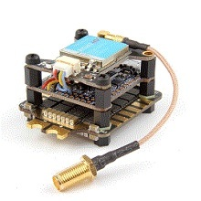
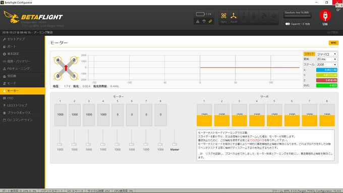
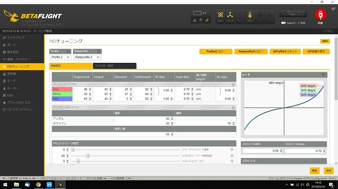
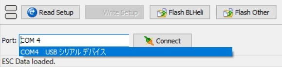

| DRONE: ドローンの基礎知識解説から組み立て、BetaFlight設定、PIDFチューニングまでを完全網羅 第7版 (2019年6月21日改訂） | |
| 下山 崇 | |
| (2018) | |
実践・詳細・統合版
DRONE
ドローンの基礎知識解説から、組み立て、
BetaFligh t 設定 、 PID F チューニングまでを完全網羅
第7 版 （ 201 9年6月 2 1 日改訂）
ドローンに興味はあるが、何から手を付けていいのかわからない。アクロバット飛行を楽しみたい、レースに参加できる機体を自作してみたい。そんな希望を叶える、ドローンの基礎的知識解説から製作、ベータフライトの設定方法 、 PI D チューニングまでを体系的にまとめた一冊です。
目次
1. FP V 、レース・フリーフライト用ドローンってなんだろう
5. ESC （ Electoronics Speed Controler)
13. 送信機の設定 （ FutabaT10 J の設定例）
第5 章 BetaFlight ( ベータフライ ト) の準備
◆ フライトコントローラー基盤操作 で DF U モードに入る方法
7. フライトコントローラー と P C との接続できない場合の対処法
◆ Disarm motors regardless of throttle value
◆ 飛行モード （ ANGLE / HORIZON / ACR O ）
◆ Launch Control #Betaflight4. 0 ～
◆ F 値 (Feedforward ) の調整 （＃ベータフライ ト 3. 5 ～）
◆ D 値セットポイント影響力 （ Dterm SETPOINT WEIGH T ）
◆ D 値セットポイント遷移 （ Dterm SETPOINT TRANSITION ）
◆ D 値最少 （ D_MI N ） #Betaflight4. 0 ～
はじめに
近年、テレビのニュース番組などを通じて、ドローンという言葉をよく耳にするようになってまいりました。私が最初にドローンを知ったの は TE D のプレゼンテーションです 。 TE D とは科学、医学、芸術、政治など様々な分野での話題を扱ったカンファレンスで、職業、年齢、国籍、性別を問わず、その道の専門家がとても興味深い講演を行っております。確 か 201 1 年頃だったと思いますが、工学系の研究機関によるドローンの実用化に関するプレゼンテーションを見て、自由自在な飛行の様子や産業への応用の幅に、とても驚いたことを記憶しております。
特殊なアルゴリズムを組み込み、空間を自由に飛び回るドローン。例えば機体の上に水の入ったグラスを置いたままで宙返りさせてみたり、飛行中のドローンがピンポン玉を投げた人に跳ねかえすなど、思わず目を見張ってしまうような実演も交えての内容でした。
ドローンとは無人・遠隔で操作できる航空機の総称で、様々な大きさ、形状、用途のものが存在します。産業用ドローンの分野では、人が立ち入れない場所を動画、静止画として撮影したり、複数の機体を同時にコントロールしながら自在にロープを編み込み谷間につり橋をかけたりと、その応用範囲は工夫次第で無限に広がります。宅配の荷物搬送など物流システムへの組み込みが直近で最も現実的ではないでしょうか。
さて、そうしたドローンですが、トイと呼ばれる子供向け玩具から、いわゆるホビーラジコンと呼ばれているような大人をも夢中にしてしまうレベルのものなど、遊びの世界にも商品が数多く出回り始めています。学術研究や産業界での活用に注目が集まっていますが、自由自在に屋内、屋外を飛び回る事の可能なドローン、これで遊ばない手はないですよね。
ラジコン用の送信機を操作して宙返り飛行をさせたり、搭載したカメラからの動画を専用ゴーグルに映し出し、あたかも自分がそのドローンに乗って操縦しているよう な FP V（ First Person Vie w ）というジャンルもあります。
この本を手に取った方であれば、そのような光景 を YOUTUB E などのインターネット動画サイトでご覧になった経験があるのではないでしょうか。動画を見ていると、楽しそうで本当にワクワクしてしまいます。そんなドローンが欲しいな、飛ばしてみたいなと思ったことはありませんか。
なかにはパーツを集めて、自分の好みに合った機体を組み立ててみたいと考える人もいると思います。でも、ドローンはまだまだ世の中に出始めたばかりで、飛ばすまでには何が必要なのか、どうやって遊んでいるのかなどといった、必要な情報が不足しています。インターネットを調べてみても、誰かが書いたブログに断片的な情報があるだけで、しかもそれぞれの情報が上手く結びつかず、よくわからないというのが実状ではないでしょうか。でも黎明期というか、出始めの頃って、何でもこんな感じなのかもしれません。
ドローンってなんだかおもしろそう・・・でも、今までラジコンすら経験がないのに、何をどうやっていいのか全くわからない。
そんな貴方が最初の一歩を踏み出し、更にはちょっと欲張ったところまで行っていただき、ベテランの域までも到達していただければというのが、本書の役割ということになります。ドローンを楽しむための基礎知識をまとめ、更にはメンテナンスや機体の作成までができるように、必要な情報を体系化してみました。
※本書の改版に伴う留意事項
ドローンを取り巻く技術は日進月歩の勢いで変化しています。特に頭脳となるフライトコントローラー や ES C 、それらを動作させるためのファームウエアも頻繁にバージョンアップされます。
そうした各種情報の変化に伴い、本書でも改版を重ね続けております。 しかしながら、お手持ちのドローンで、例えばベータフライトなどのファームウエアのバージョンを常に上げ続けなければならないかというと、必ずしもそうとは言い切れません。
それまで安定して動作していたものでも、新たに手を加えたらうまく飛行できなくなるということだってあり得ます。ハードウエアの能力が、新たなファームウエアに対応しきれないとか、メーカー側がしっかり検証せず新たファームウエアをリリースしてしまう等といったことも十分考えられます。
従いまして本書では、最新情報に基づいて内容を改訂し続けて参りますが、同時に従来のバージョンでも対応可能なように、その情報も残した記載とさせて頂きます。
読者の皆様には、こうしたことをご考慮頂き、本書を読み進めて頂ければ幸甚でございます。
第1 章 ドローンの種類
ひとくちにドローンと言っても、目的によりタイプが分かれます。テレビのニュースなどで見聞きする事が多いのは「空撮用ドローン」かと思います。
「空撮用ドローン」は文字通り、カメラを積んで高いところから静止画や動画を撮影できるタイプです。例えば山岳の絶景を撮りたいといった場合、従来までは人が歩いて登れる場所からの撮影に限られていました。崖や谷底などの危険な場所、足を踏み入れることのできないところからの撮影は困難を極めます。そうした事情から、まだ見ぬ景色も数多く存在します。しかしながら、ドローンに撮影用機材を乗せることで、撮影が難しいといわれていた場所での景色をカメラに収めることができるようになりました。
空撮タイプのドローンには、まず安定性が求められます。地図などで撮影箇所を決め、そこに至るまでのルートを設定し、ドローンに自分の位置を認識させます。
こうした空撮用ドローンはその殆どが完成状態で販売されており、取り扱い説明書さえ読めば問題なく操作可能です。特別な知識が予め必要になるという訳でもありませんので、本書としては説明対象外のものとなります。
そして、安定・ホバリング重視の空撮用以外に、操縦自体を楽しむドローンも存在します。大空を思いのままに飛行させる「フリースタイル」というジャンルや、森の中で木々の間を右に左に旋回し、設置されたゲートなどの障害物をかい潜り、仲間とタイムを競い合う「ドローンレーシング」などがそれに当たります。宙返りさせたり、地面や水面のギリギリの高さを飛ばしたりといったアクロバット飛行は、まさにドローンが最も得意とするところです。
「フリースタイル」、「ドローンレーシング」では、機体に搭載された小型カメラからの映像をゴーグルやモニターに映し、それを見ながら操縦す る FP V というスタイルが主流となっています。
このタイプのドローンは完成品を買ったとしても詳しいマニュアルは殆どの場合付属しておらず、また完成品と言いつつも必要となるパーツ類が全てそろっているとは限らないのが一般的です。予め知識や経験があることが前提、しかもインターネットで調べようにも海外のサイトばかりがヒットし英語表記となっている等々、すぐには飛ばせないというのが実情です。
また既製品では操作性やスピードに満足できず、もっとダイナミックに飛行させたい、レースを楽しんでみたい、などといった気持ちも生まれてきます。自分自身でカスタマイズしたり、或いはまたパーツを集めて組み立ててみたいという欲求も湧き上がってきます。
このような状況において、ドローンを楽しむために、まず何をすべきか、どうしたらいいのかといった最初の一歩が踏み出せるようになること、そこをターゲットとして書かれたのが本書であり、この本の目的となります 。
趣味でドローンを始めてみたい、自由自在に大空を飛行させてみたい 、 FP V を体験したい、いつかはレースに参加もしてみたい。このように楽しみ方が大きく広がるドローンの世界を、体系立て順を追って紹介していきたいと思います。
1. FP V 、レース・フリーフライト用ドローンってなんだろう
FP V と は First Person Vie w の略語です。日本語訳は一人称視点となります。ドローンに搭載したカメラからの映像をモニターや専用 の FP V ゴーグルへリアルタイムにストリーミングします。そ の FP V ゴーグルに転送される映像を見ながらドローンを操作するのですが、操作するパイロットは、まさにドローンのコックピットに搭乗しているかのように飛行を楽しむことができます。
自分があたかもドローンに乗っているかのように、コクピットに搭乗しているパイロット視点でドローンを操作するの が FP V です。鳥のように大空を飛ぶ体験を得ることが出来るの が FP V なのです。ビデオゲームのリアル体験版と表現することもできるかもしれません。
も し FP V を利用せずにドローンを飛行させた場合、機体の向きによっては左右が反転してしまいます。自分自身に向かって飛んできているときは送信機のレバー操作が左右反対となります。ところが 、 FP V の場合はいかなる方向に飛行しようが、その機体に搭乗したパイロット視点になるわけですから、左右反転を意識した操作など不要となります。これは左右のコントロールのみならず、操作そのものを高度にし、より正確に、より素早い飛行へとパイロットを導いてくれます。
では 、 FP V を用いたレースやアクロバティックなフリーフライト用ドローンと、空撮用との違いは具体的にどこにあるのでしょうか。
最大の違いは飛行を制御するフライトコントローラーにあります。フライトコントローラーは各種チップが乗った制御基盤でドローンの頭脳をつかさどります。
空撮用ドローンのフライトコントローラーに は GP S が搭載されており 、 GP S からのデータをもとにドローンを定位置でホバリングさせることが主目的です。従って機体が傾くような飛行は得意ではありません。製品によっては送信機のスティックを離しても安定してホバリングしてくれたり 、 GP S の働きにより送信機からの電波が途絶えても自動で元の場所へ戻ってくれるものもあります。
一方、レース・フリーフライト 用 FP V ドローンは、俊敏にアクロバティックに飛行することが主な目的であり、それに対応したフライトコントローラーが使われています。素早く方向転換を行い、スピーディーに障害物の間を縫うように飛行します。
このような飛行動作は空撮用ドローンには真似できません。ハイスピードで木立の間を駆け抜け、そしてまたレーシングカーがサーキットをコーナリングするのと同じように機体を斜めに傾けながら曲がっていく。こんな飛行を楽しむの が FP V を活用したドローンレースであり、フリーフライトです。
以上で述べたとおり、一口にドローンといっても、飛ばし方、遊び方でタイプが異なります。ドローンで何をしたいのか、その目的により選択する種類は異なります。
また、自分で作って飛ばしたいのか、既製品を買って楽しみたいのかによっても選択が分かれます。
フレームやプロペラのサイズを変えてみたり、モーターのパワーを大きくしてみたり、それらを制御するフライトコントローラーを高性能タイプにしてみたりすることで、自分自身が望むような機体を製作することも楽しみのひとつなのです。カスタマイズすることで、これまでにはない、自分だけのドローンを作り出すことができる、それ が FP V であり、レー ス/ フリーフライト用のドローンの世界です。
第２章 ドローンを構成するパーツ類
ドローンを飛ばしてみたい。でも、殆どの方の場合、住んでいる所の近く、または買いに行ける範囲に、ドローンを扱っている店なんてないと思います。仕方なくインターネットで調べてみても、検索して出てくるのは海外サイト。何か訳のわからないパーツが羅列されている。なんとなく、これは完成品かなと思って買ってみたけど、届いた箱を開けてみると部品が組み上がっていないとか、飛ばすために必要なものが全て揃っていない。部品を選ぶにも様々な組み合わせがあって、どれとどれを組み合わせていいか見当がつかない。このような状況陥ってしまうのが殆どかと思われます。
これでは到底、飛ばすどころではありませんよね。そこで、まずドローンはどんなパーツで構成されているのか？こんなところから説明を始めてみたいと思います。
1. フレーム
機体のベースとなる、モーターや制御用の基盤類、バッテリー電源を乗せる骨組みをフレームといいます。
◆ サイズ
フレームのサイズは、取り付けられるモーターの中心軸から対角線上にあるモーターの中心軸までの長さで表されます。単位は「㎜（ミリメートル）」です。
ドローンレースでは、大きめのフレームにパワーのあるモーターを搭載して飛行させます。レース毎のレギュレーションでサイズが決められる場合もありますが、一般的に は 25 0 ミリ ～ 28 0 ミリ前後のサイズとなります。
また、海や山などの中で、ドローンに取り付けられたカメラからの映像 を FP V ゴーグルに映し出し、あたかも自分がパイロットになった気分で自由に自然の中を飛び回るようなフリースタイルといったジャンルでは、レースで使われるような機体サイズや、それより少々小型 の 23 0 ミリ 、 18 0 ミリ 、 15 0 ミリ程度のフレームサイズも使われます。
後半の章でも詳しく説明致しますが、ドローンを飛ばす際には航空法という法的な規制に抵触しないようにしなければなりません。
例えば航空法では飛行禁止区域が定められており、ドローンを飛行させてもいい場所と、飛ばしてはいけない場所に分けられています。そのため、せっかくのドローンも、安易に近所では楽しめない場合があるのです。
ただし 、 20 0 グラム未満の機体重量であればその規制が適用されません。そうしたことも考慮したフレームの選択が必要となります。
20 0 グラム未満のフレームサイズとなれば、それに使うバッテリーなどのパーツにも左右されますが 、 13 0 ミリ程度の大きさが上限となります。フレームには、もっと小型 の 10 0 ミリ以下もあります。重量の上限を意識しながら、いかにパワフルな、またはアクロバティックなドローンを組み立てることができるかなど、各種パーツをチョイスするのも楽しみのひとつかもしれません。
※対角線上にあるモーター取り付け位置を結んだ長さ
赤い線：フレームサイズ / 青い丸：モーター取り付け位置
◆ フレームの素材
フレームはカーボン素材でできており、丈夫さと軽さが両立されています。
2. プロペラ
ドローンの構成品は？と聞かれて、誰しも最初にイメージするのはプロペラではないでしょうか？
このプロペラはモーターの回転を揚力という浮かび上がる力へ変換するためのパーツです。モーターがプロペラを回転させるパワーをトルクと呼びますが、このトルクの大きさにより、使用できるプロペラが分かれます。そしてプロペラの性能次第でドローンの飛行特性を向上させたり、好みの飛び方に変えたりすることが可能なのです。
では、そのプロペラの性能を決めるポイントは何でしょうか。「え？プロペラはプロペラでしょ。何が違うの？」という素朴な疑問が出てきそうですよね。
◆ プロペラの素材
まず素材についてですが、プロペラにはナイロングラスファイバー製や、ポリカーボネイト製のものがあります。
ナイロングラスファイバーは固いため、風の抵抗による変形が少なく、モーターからのパワーがダイレクトに飛行に反映されます。従って、速度を求める場合には有効な選択です。ただし、墜落などの衝撃で折れやすいのが難点といえるかもしれません。
ポリカーボネイト製のプロペラは柔軟性があるため折れくいのが特徴です。また、ナイロングラスファイバー製よりも軽いため、燃費（電池の消費）効率が良いといった長所もあります。ただし柔らかい分、旋回などの方向転換により、プロペラに負荷がかかる場面では、少々機敏性に欠ける面があります。
◆ プロペラ枚数
プロペラといえば羽をイメージする方が多いのではないでしょうか。プロペラの羽の枚数 は2 枚 ～4 枚が一般的です。機体のサイズや形状、モーターのパワーなどで違ってきますが、羽の枚数が増えるほど操作性はよくなります。
◆ プロペラサイズ
プロペラのサイズは直径で、単位は「インチ」で表示されるのが一般的です。前述したフレームの説明の繰返しにもなりますが、フレームサイズにより選択可能なプロペラの直径が違ってきます。フレーム購入時、サイトに記載されている仕様には、そのフレームに合ったプロペラサイズが書かれています。大きめの機体だ と5 インチ以上、小さくなるに従 い3 インチ 、 2. 5 インチ 、2 インチなどのサイズがあります。
◆ プロペラのピッチ
プロペラのひねり具合をピッチと呼びます。プロペラが一回転する際に進む距離はピッチにより決定されます。ピッチが大きい（ひねりが大きい）ほど推進力が増しますが、その分モーターのトルクが大きくなければなりません。モーターは低回転タイプほどトルクが大きくなります。
トルクの大きなモーターは高回転型ではないため、取り付けられるプロペラのピッチが大きくなければ推進力が得られません。トルクがあればピッチが大きくとも十分プロペラを回す力を得られます。ただし、トルク重視のモーターは低回転型となるため、ピッチの小さなプロペラでは推進力が生まれません。
逆に高回転型のモーターほどトルクは小さくなりますので、プロペラのピッチは小さいものを選択することになります。
◆ プロペラの表記
プロペラの表記は 、 304 0 と か 4×5× 4 などと記載されています。
例１） 3040
・前方 の 3 0 はプロペラの直径 （3 インチ）
・後ろ の 4 0 はプロペラのピッチ
例２） 4×5×4
・最初 の4 は直径 （4 インチ）
・真ん中 の5 はピッチ
・最後 の4 はプロペラ（羽）の枚数
※ 1 インチ ＝ 25. 4 ミリ
いかがでしょうか。ひとくちにプロペラと言っても、素材、サイズ、ピッチ、羽の枚数など飛行を左右する条件が様々あります。これらの条件でドローンの飛び方が大きく変わります。飛び方の違いを体験し、自分の好みや対象となる機体にベストマッチのプロペラを探すことが必要となります。
プロペラの次はモーターです。モーターについては、何となくイメージを持ちやすいのではないでしょうか。当たり前の話ですがプロペラを回転させるためにフレームに設置され、一般的なクワッドコプターと呼ばれるタイプのドローンであれば、モーター は4 つ設置されます。それ以外に 、3 つのものもありますし 、5 つ以上取り付けられる機体もあります。
◆ ブラシモーターとブラシレスモーター
ドローンのみならずラジコンカーなどにも共通しますが、モーターにはブラシモーターとブラシレスモーターという分類があります。構造の違いから区別されているのですが、マイクロドローン や TinyWhoo p と呼ばれる小さな機体にはブラシモーターが付いていることがあります。そして、機体が大きくなり、重量がアップするに従いブラシレスモーターが採用されます。ブラシタイプとブラシレスタイプの境目は、だいた い 8 0～ 9 0 ㎜のフレームあたりでしょうか。もちろんマイクロドローンなどの小さなものでも、ブラシレスモーターを付けても問題ありません。
では、ブラシモーターとブラシレスモーターの具体的な違いはといいますと、ブラシモーターはシャフトが回転します。これに対しブラシレスモーターはシャフトと共にモーターのカバーも回転します。
また、それぞれの構造からくる違いとなりますが、ブラシモーターは回転する軸側にコイルが巻き付けられていて、そこへ電流を流すためのブラシという電極が存在します。そのブラシが、モーター軸の回転に伴い摩耗するためメンテナンスが必要となります。
ブラシレスモーターのメリットとしては、メンテナンス性の良さが挙げられます。ブラシレスモーターにはブラシのような摩耗する部品がないので、メンテナンスフリーとなります。
また、ブラシモーターの回転数は電圧に比例します。ブラシレスモーター は ES C （モーターの回転を制御する装置）からの信号で回転数がコントロールされます。そのためブラシレスモーターは回転数が安定し、効率的に電力が消費されます（燃費が良くなります）。
◆ K V 値
モーターの仕様に は K V 値というものがあります。こ の K V 値とは何でしょうか。単位は 「 KV=rpm/ V 」ということになり 、1 ボルトの電圧 で1 分間に何回転するのかという値です。例え ば 2200K V といった仕様がカタログなどに記載されています 。 2200K V であれば、このモーター は1 分間 に1 ボルトの電圧 で 220 0 回転しますよ、ということになります。
そして 、 K V 値というのは数値が低ければ回転数は少なくなりますが、そのぶんトルクが大きくなります。
K V 値が高ければ高いほど回転数が高くなります。ただし、回転数が高いとトルクは小さくなります。
トルクという言葉がピンとこない場合は馬力をイメージしてみてください。プロペラの直径やピッチが大きく、より強い力がないと回転させることができない場合には、トルクの大きなモーターを選択します。トルクの大きなモーターとは、目安とし て 2500K V 以下となります（５インチのプロペラを回すような大きなサイズの機体の場合 、 2000K V～ 2500K V のモーターを使うことが多いようです）。
また、マイクロドローンなどの小型サイズのフレームで 、3 インチ以下の小さめのプロペラを回す場合には、トルクは小さくても高回転型のモーターを選択します 。 K V 値の大きいモーターの時は抵抗の小さなプロペラを使い、高速回転させ揚力を得ます。
また、モーターの重量については高回転型ほど軽くなります。機体が小さいと、プロペラの直径も小さくせざるを得ませんので理にかなっていますよね。
一般的に小さな軽い機体は回転数の高いモーターを選択し、大きな重い機体はトルク重視となります。
車の場合に似てはいないでしょうか？オフロードを走 る4 輪駆動車などはエンジンの強力なトルクを生かし、低回転で悪路を走破することができます。高回転型エンジンの車はオンロードをハイスピードで走るタイプが多いのではないでしょうか。
◆ モーターのサイズ表記
モーターのサイズ表記 は4 桁の数字で表されます。前 の2 桁がコイルの直径（モーターケースの直径ではない）、後ろ の2 桁がコイルの高さを表します。
例えば 、 221 4 というサイズなら、コイル直径 は 22m m 、コイルの高さ は 14m m です。フレーム仕様を確認すると適合するモーターサイズが書かれています。
4. フライトコントローラー
フライトコントローラーとはパソコンでい う CP U にあたり、ドローンの頭脳となる基盤です。
送信機からの操作信号は、受信器を介してフライトコントローラーへと伝わります。フライトコントローラーは送信機からの命令を基に、ジャイロセンサー や GP S 、気圧センサー等からの情報も加えて、各モーターの適切な回転数を算出し 、 ES C 側へ命令を出します。特にフライトコントローラーの最も重要な機能は、基盤に搭載されているジャイロセンサーからのデータを計算し、現在の機体姿勢を確認して 、 ES C 側へモーターの適正回転数を命令し続ける事です。ジャイロセンサーは、ドローンが飛んでいる限り、常に機体姿勢を検知し続けます（継続して検知計算を続けることをループ処理といいます）。
また 、 OS D というチップがフライトコントローラーの基盤に搭載されている場合には、飛行に関する各種情報 を FP V ゴーグ ル/ モニターへ表示させることもできます。

※ ドローン制御の主な流れ
【送信機 】→ 【受信機 】→ 【フライトコントローラー 】→【 ES C】→ 【モーター 】→ 【プロペラ】
（ジャイロセンサー等はフライトコントローラーに搭載されます）
◆ フライトコントローラーのチップ
フライトコントローラーは基盤ですので、その上にはいろいろな演算を行ってくれるチップが搭載されています。パソコン の CP U にも 、 I 5 と か I 7 などがカタログに書かれていますがそれと同じようなものです。
フライトコントローラーのチップには「ＳＴ Ｍ 3 2 」とい う 3 2 ビットのものが使われていますが、以下の表のように種類が分かれています。
|
チップ名称 |
STM3 2 種別 |
駆動周波数 |
内部メモリー |
UART |
|
Ｆ 7 |
ＳＴ Ｍ 3 2Ｆ 746 |
216MHz |
1 ＭＢ |
8 系統 |
|
Ｆ 4 |
ＳＴ Ｍ 3 2Ｆ 405 |
168MHz |
1 ＭＢ |
3 系統 |
|
Ｆ 3 |
ＳＴ Ｍ 3 2Ｆ 303 |
72MHz |
25 6 ｋＢ |
3 系統 |
|
Ｎａｚ ｅ 32 |
ＳＴ Ｍ 3 2Ｆ 103 |
72MHz |
12 8 ｋＢ |
2 系統 |
上段ほど最新の高性能タイプです。駆動周波数の値が大きなもは、高速タイプとなります 。 UAR T という項目に初めての方はピンとこないかもしれませんが、フライトコントローラーの外部用接続端子数と理解してください 。 GP Sや OS D などの外部機器を外付けで取り付ける場合の端子数です （ OS D は最初からフライトコントローラーに搭載されている場合もあります）。
「なんだか面倒なことになってきた」なんて難しく考えないでください。ここでは表中の赤で書かれている、チップの名称 や UAR T という言葉を覚えていただくだけで十分です。自作する時に、「どんなフライトコントローラーを選ぼうかな？」となりますが、その時 に F 3 と か F 4 とか 、 UAR T の系統数が選定の指標となります。
例えば、マイクロドローン や Tiny Wｈ oo p と呼ばれる超小型の機体を自作する場合には 、 F 3や F 4 のフライトコントローラーが使われます。
◆ シリアルバス
次は、データ通信を行うシリアルバスについてです。ＳＴ Ｍ 3 2 に は3 種類のシリアルバスが使わていますが、「こういった項目があるんだな」と参考程度にご確認ください。
|
バス名 |
通信速度 |
バス接続センサー数 |
接続センサーの種類 |
|
ＳＰＩ |
高速 |
1対 1 |
ジャイロ、加速度 |
|
ＵＡＲＴ |
中速 |
1対 1 |
受信機、ＧＰＳ |
|
Ｉ2 Ｃ |
低速 |
1 対複数 |
コンパス、気圧センサー |
◆ ジャイロセンサー
さて、今度はフライトコントローラーに搭載されているジャイロセンサーの性能の違いについてご説明します。
ジャイロセンサーは機体の姿勢制御を行うためのものです。ドローンが飛行している間、常に姿勢の傾きを検知し続け、フライトコントローラーへその情報を渡します。
そして、ジャイロの処理速度 は 4kH z、 8kH z などと表示されます。この数値が大きくなるほど、センサーが姿勢検知をする頻度が高くなります 。 1,000μ s （マイクロセコンド）を基準に 、 4kH z であれ ば 250μs(1,000/4 μｓ)、 8kH z であれ ば 125μs(1,000/8 μｓ) 毎に検知を繰り返すと理解してください。
|
1 kHz |
1,000μs |
|
2 kHz |
500μs |
|
4 kHz |
250μs |
|
8 kHz |
125μs |
|
16 kHz |
62.5μs |
|
32 kHz |
32.15μs |
ジャイロセンサーの性能は、上記にあるような駆動周波数で表されます。この周波数の数値が大きくなるほど、ジャイロセンサーの処理速度が高まります。
駆動周波数が高く、高速処理が可能ということは、ジャイロセンサーが計算する姿勢制御検知がより正確となり、機体の傾きや動きをより的確に把握できるということになります。
MPU600 0 は駆動周波数 が 8KH z、 ICM2060 2は 32kH z と赤字で記載されていますが、この部分があとで説明するフライトコントローラーの設定で使われます。
また 、 MPU925 0 はコンパスが統合されていて、空撮機など一部の完成機で利用されています。
|
ジャイロ種別 |
駆動周波数 |
シリアルバス |
|
ＩＣ Ｍ 20602 |
3 2 ｋＨｚ |
ＳＰＩ |
|
ＭＰ Ｕ 925 0 （Ｐ Ｕ 6500 + コンパ ス ) |
3 2 ｋＨｚ |
ＳＰＩ |
|
ＭＰ Ｕ 6500 |
3 2 ｋＨｚ |
ＳＰＩ |
|
ＭＰ Ｕ 6050 |
8 ｋＨｚ |
Ｉ2 Ｃ |
|
ＭＰ Ｕ 6000 |
8 ｋＨｚ |
ＳＰＩ |
◆ 気圧計
フライトコントローラーには気圧計が付いていることもあります。気圧計はドローンの飛行高度を制御します。レース用ドローンでは使われることがありませんが、知識程度にご確認いただければと思います。
|
気圧計種別 |
精度 |
|
ＢＭ Ｐ 280 |
1 ｍ |
|
Ｍ Ｓ 5611 |
1 0 ｃｍ |
◆ コンパス
コンパス（方位計）も、気圧計同様知識程度で構いません。コンパスについて は HEC5883 L というものがよく使われています。コンパスはフライトコントローラーの電磁波に影響を受けやすいため、同じ基盤に搭載せずに外付けで取り付けられる場合が殆どです。
5. ESC （ Electoronics Speed Controler)
ES C とはモーターの回転速度を制御する部品です。フライトコントローラーからの命令をもとに 、 ES C はモーターへ電流を流し回転速度を制御します。
ここで少し疑問を持った方もいるかもしれません。なぜフライトコントローラーが直接モーターを制御せず、間 に ES C を入れるのでしょうか。その理由は電圧の違いです。モーターを駆動させるのに必要な電圧と、フライトコントローラーが各種センサー類を動かすのに必要な電圧、電流の大きさが違うからです。
もしフライトコントローラーが直接モーターを駆動させるとしたら、バッテリー を ES C でなくフライトコントローラーへ接続しなければなりません。しかし、それをやってしまうとフライトコントローラーから煙がでてしまいます。バッテリーからの電圧が高すぎてフライトコントローラーの基盤上に乗っているチップが壊れてしまいます。
そのため、バッテリーはモーターを制御す る ES C へ接続し 、 ES C から は BE C と呼ばれる半導体を介してフライトコントローラーへ電力を供給します 。 BE C は電圧 を 5 V に降圧させ、フライトコントローラーへ電力を供給します。
一般的にドローンでは、フライトコントローラーや各種センサーに使う電圧と、モーターを駆動させるための電圧を分けて利用しています。モーター は ES C を介してバッテリーと直接繋がっていますが、フライトコントローラーに は BE C という専用の半導体部品を用いてバッテリーからの電圧 を 5 V 程度まで下げてから電力が供給されます。
ES C はフライトコントローラーからの制御信号を受け、モーターへ大きな電流をながし回転速度をコントロールします。
◆ ES C のタイプ
ひとつ の ES C で、ひとつのモーターを制御する単体タイプと、ひとつ の ES Cで4 つのモーターを制御でき る 4in 1 タイプに分かれます。これからドローンを始めようとする方に は 4in 1 をお勧めします。
モーターひとつに対 し ES C がひとつ付く単体タイプでは、モーターの数だ け ES C が必要となります 。 ES C はフレームのアーム部分（モーターが設置される腕の部分）にひとつずつ取り付けられます。
このタイプ の ES C を購入した場合、別 途 PDB(Power Distribution Bord ) というパーツも必要になります 。 PD B とはモーターや単体 の ES C を繋げる統合配線盤で 、 ES C やフライトコントローラーと共に機体に搭載されます。
単体タイプのメリットは、仮にひとつ の ES C が壊れても、壊れ た ES C を交換すれば済みます。デメリットとしてはモーターの数だ け ES C を購入しなくてはならず費用がかさむという事と、パーツが増える分機体重量も増してしまう事があげられます。
4 つのモーターを制御でき る 4in 1 タイプは、モーター が4 つあっても、ひとつ の ES C となるため配線がとてもスッキリします。また、モーターが直 接 ES C につながるた め PD B は不要となります 。 20 0 グラム未満の機体の場合には、このタイプ の ES C を選択することになります。
4in 1の ES C は機体の胴体部分に設置されます。胴体部分の下段 が ES C で、その上段にはフライトコントローラーが取り付けられます。配線ははんだ付け、もしくはコネクタで繋がります。
◆ プロトコル
後述す る BetaFligh t 設定のところで詳しく説明致しますが、メーカーや販売店のサイト で ES C を見てみますと、その仕様 に ONESHO T、 MUTISHO T、 DSHO T という用語が出てきます。これは 、 ES C がモーターを制御するプロトコル、通信方法と理解してください。フライトコントローラーからの指示 を ES C が受けた後 、 ES C はモーターをどのように回転させるかのコントロールをします。
ちなみに 、 ONESHO Tや MUTISHO T はアナログ 、 DSHO T はデジタルでの処理を行います。
◆ O N 抵抗値
参考情報としての理解で十分なのですが 、 ES C に は O N 抵抗値というものがあります 。 O N 抵抗値が低いほど、バッテリーからモーターへ電力供給する時 の ES C 内でのエネルギー損失が少なくなります。
また 、 O N 抵抗値が低いと発熱量も少なく 、 ES C が良好な環境下で動作できるということにもつながります。その意味で 、 O N 抵抗値はエネルギー効率（燃費）、トルク、トップスピードなど 、 ES C の基本的性能に関わる数値という事ができます。
6. バッテリー
ラジコンに使うバッテリーにはニッケル水素バッテリー （ Ni-M H ）、リチウムフェライトバッテリー （ Li-Fe ) 、リチウムポリマーバッテリー （ Li-P o ）があります。
ドローンの電源となるバッテリーには、リチウムポリマーというタイプが使われます。通称リポバッテリーと呼ばれているものです。リポバッテリーには、従来からあるニッカド、ニッケル水素よりも軽量コンパクトで、しかも大容量・大出力という特徴があります。空を飛ぶドローンの場合には、まさにうってつけといえます。
飛行に際して軽量ということは必須条件となるのは言うまでもありません。さらに比較的小さなサイズで大きな出力を得られるのですから、アクロバット飛行やレースにはなくてはならない電源ということができるでしょう。
また、メモリー効果が無いので、完全に電池を消費しきらなくとも、継ぎ足し充電を行うことができます。
自己放電も殆どありません。さらに嬉しいことに冬などの低温時にも安定した電源供給が可能で、パワーダウンが起こりづらいといった利点もあります。
◆ リポバッテリーの特徴
・軽量コンパクト
・大容量、大出力
・メモリー効果が無い
・自己放電が殆どない
・低温に強い
リポバッテリーはセ ル (S ) という単位で構成され、１セル （ 1 S ） 、2 セル （ 2 S ） 、3 セル （ 3 S ） 、4 セル （ 4 S ）などの種類があります。また、セルをひとまとめにしたものをバッテリーパックと呼びます。
各セルは直列でつながれるため、セル数が多ければ電圧が大きくなり（アンペアは変わらない）、それに伴いモーターの回転パワーが大きくなります。１セルあたりの電圧 は 3.7 V です 。2 セルな ら2 つのセルが直列で繋が れ 7.4 V となります 。3 セルであれ ば 11.1 V、4 セルな ら 14.8 V ですね。
バッテリーが電気を蓄えることのできる量をバッテリー容量といいます。単位は「 ｍ A h 」。 ｍA は電気の流れる 量 (1 Aの 100 0 分 の 1 ) 、 h は1 時間の単位です 。 1000mA h と表示されているバッテリーな ら1 時間 で 1 A （アンペア） 使えるだけの容量を持つと理解できます。
バッテリーが蓄えている電力をどれだけ流すことができるかを充放電許容量と言い、通 常 30 Cや 50 C などと表現されます。
いくらたくさん電力を蓄える事ができても、それを流すパイプが細ければちょろちょろとしか流れませんよね。逆にパイプが太ければ一気に電流を流すことができ、それだけモーターの回転加速度が大きくなります。
充放電許容量の単位は 「C 」でキャパシテ ィ( 容量 Capacit y ）の頭文字です 。 1 C はバッテリー が1 時間に流すことができる電流量ということになります（容量電流値）。
放電できる電流は、容量 （ mA h ）に充放電許容量 （C ）をかけて算出します。例えば、容 量 1000mAh 50 C の能力を持ったバッテリーな ら 1000mA×50 C＝ 50000m A となり、最 大 50 A まで供給できる能力を持ったバッテリーということになります。ただし、継続して流し続ける電流の大きさではなく、瞬間的にこれだけ流せると理解してください。
充電の際にも充放電許容量 （C ）を考慮する必要があります。基本 は 1 C 充電です。安全に、かつバッテリー寿命を長く保つために 、 1 C 以下での充電器設定をお勧めします。
1500mA h のバッテリーであれ ば 1 Cは 1500m A となりますので 、 1.5 A 以下での充電となります。この場合、満充電になるまで に1 時間かかります。
バッテリーパック内の各セルは、ひとつずつの電池となっています。それぞれの電池は個体差から、使っているうちに電圧がずれ始めます。この差がだんだん大きくなってくると、いずれかのセルが過充電、または過放電を起こし、そのセルに偏った負荷がかかり、リポバッテリーが破損してしまいます。
そのため、各セル間の電圧を揃えることはとても大切で、バッテリー寿命を延ばし、かつ電力を安定して供給することにつながります。逆にセル間電圧が崩れてしまうと、パワーが落ち、充電もフルに行えません。
そこで、リポバッテリーには、バランスコネクターという端子が、電源用のコネクタとは別についています。各セルのプラスとマイナスのそれぞれの端子に繋がったケーブルがバランスコネクターとしてまとめられています 。2 セルの場合であれば、 計3 本のコードが伸びています。プラスとマイナスと、直列部分からケーブルがコネクタにまとめられています。
充電に際してはバランス端子と電源供給用端子を両方充電器につなげて、各セルの電圧を管理しながら行います。これをバランス充電といいます。
バランス充電は必ず行ってください。これを怠ってしまうと、最悪の場合バッテリーが火を噴き、火事を起こしてしまいます。
充電器の種類によっては、バランス端子だけ接続して、完全にセル毎に個別充電するタイプもあります。または、上記のようにバランス端子と電源供給用端子を同時に接続し、充電の過程で電圧が高くなったセルを個別に放電しながら、全セルのバランスを取り充電するものもあります。
セル毎の電圧 は 3.7 V ですが、満充電時の電圧 は 4.2 V になります。そして、バッテリーを使い始めると放電が進み、電圧はそれに伴い降下します。
放電が進み、セルの電圧 が 3 V 以下になると過放電状態となります。過放電はリポバッテリーにとって大きなダメージとなり、性能も寿命も極端に落ちてしまいます。そして 、 2.6 V まで電圧が低下してしまうと使えなくなってしまいます。
過放電を防止するためには、フライトコントローラー （ BetaFligh t の設定）にフェールセーフという設定箇所がありますので、降圧時にアラートを上げてくれるようにしておきましょう。テレメトリー機能が使える場合は、送信機にもアラートを上げるように設定します。
リポバッテリーには 、1 セルあた り 4.2 V という電圧の上限があります 。 4.2 V を超えて充電するとバッテリーが壊れてしまいます。バッテリーの内圧が上昇して過熱し、場合によっては破裂、発火を起こしてしまいます。
リポバッテリー用の充電器を正しく使えば、上限電圧であ る 4.2 V に達した時点で充電を止めてくれます。ただし、安価な充電器だとセル単位の電圧を読み取れず（バッテリーパック全体の電圧だけをみて）、個別のセルだけが過充電になってしまう恐れがありますので気を付けてください。
ストレージ充電という機能が付いている充電器を使いましょう。リポバッテリーを満充電状態で保管すると、保管場所の気温などが上昇するにともない過充電と同じ状態になってしまいます。また、残量が少ないと、過放電に近い状態となり性能が低下してしまいます。
リポバッテリー は 40 % 前半の残量にして保管しておくのが最適で、ストレージ充電はその状態に放電、または充電してくれる機能です。
長期保管する時には、発火、爆発などもしもの時に備え、陶磁器製などの耐火容器を使うことをお勧めします。
リポバッテリーを正常な方法で使用した場合 、 10 0 回程度の放電でそろそろ寿命と考えていいと思います。
また、充電しても新品時の容量にならなかったり、すぐに電池が空になったりした場合も、そのバッテリーの寿命といえるでしょう。充電器にセル単位のメーターがある場合には、各セルの電圧バランスが崩れていないかでも確認できます。
また、見た目でバッテリーパックが膨らんできり、バッテリーパックの破損があれば、使用中止と認識してください。
バッテリーが使えなくなったとしても、捨てる時には完全放電が必要です。放電させるに は 1 L につ き 50 g の食塩を溶かし、そこ に2～3 日ほど漬けましょう。また、廃棄は自治体により方法が異なりますので、お住まいの地域での正しいやり方に従いましょう。
リポバッテリーは使い方を誤ると火災の原因となってしまいます。発火・爆発事故の多くは充電器の誤った設定によるものです。バッテリーの取り扱いには十分に注意を払う必要がありますので、ポイントをまとめさせていただきます。
・ 1 C 以下での充電が基本
充電する際 は1 セル当たりの上限電圧 （ 4.2V ) に収まるようにし、電流値 は 1 C 以下にしましょう
・バランス充電を行い、セル間電圧 を 0.1 V 以内に揃える
・長期保管の場合、ストレージ充電を行い、容量全体 の 4 0 ％前後に放充電する
3. 7～ 3.9V/1 S 程度の電圧に充 電( または放 電) しておくとバッテリーのコンディションを良好に保てます。
・過充電、過放電に気を付ける
満充電での保管は非常に危険です。気温が上がるとバッテリー内部の化学反応が促され活性化します。そのため、寒い場所で満充電にしたリポを暖かいところに持っていくと、電圧と内圧が上がり過充電状態となります。こうなると破損や発火の危険が高くなります。適切な電圧で保管するようにしましょう。
・移動時、保管時には セーフティ－バッグ や陶磁器製の耐 火 BO X などを利用する
リポバッテリーも発火炎上しますが 、 NiM H も爆発の恐れがあります。破裂し破片が散乱します。ま た NiM H モードでリポバッテリーを充電して爆発した例もあります。充電器の設定にも十分注意を払ってください。扱いを誤れば事故につながります。
・リポバッテリーが膨らみ変形している場合には使用を中止する。
・バッテリーが高熱を持ち 、 6 5 度になった場合には使用を中止する 。 7 0 度を超えると発火します。
・バッテリーが過熱している状態での充電は厳禁
・バッテリーの分解はしない
・バッテリーのプラスマイナスの端子をショートさせない
・バッテリーをショートさせてしまった場合、そのバッテリーを使ってはいけない
・バッテリーを火中に投じてはいけない
・バッテリーへの衝撃を避ける
参考までに筆者自作のバッテリー充電 用 BO X を掲載させていただきます。万が一に備え、セーフティーバック、金属 製 BO X （小型金庫利用）、さらに弾薬保管用のアン モ BO X と三重になった箱を自作し、そこにバッテリーを入れた状態で充電できるようにしております。ちなみ に BO X の外の充電器と 、 BO X 内のバッテリーは充電用のケーブルで繋がれますが、通線部分 を 1,000 ℃ まで耐えるコーキング材でふさいでいます。万が一の出火でも耐火シェルターで延焼を防ぎ、酸欠状態で鎮火させます。
ドローンを飛行させる時には、遠隔操作するための送信機が必要となります。送信機をプロポと呼ぶこともあります。プロポという呼称は、操作に比例してモーターやサーボが制御されるという意味で 、 Propotiona l （比例）に由来しています。ただし、プロポと呼ぶのは日本独自で、海外では送信機 （ Transmitter/T X ）と呼ばれています。
送信機には「ホイラータイプ」と「スティックタイプ」があります。ドローンやヘリコプター、飛行機の操縦はスティックタイプにて行われます。
ホイラータイプは、トリガーというレバーを引くことでアクセルを、ホイールという円盤を回転させステアリング操作します。主にラジコンカーで使われるものです。
アクセルとステアリングとい う2 チャンネルの操作であるため、空モノといわれるドローンや飛行機など の3 次元的操作が必要になるものに対しては、チャネル数が足りないため使われません。
スティックタイプは航空機の操縦桿イメージで、左 右2 本のスティックを操作して操作します。右・左スティックにより上下左右の操作を行い 、4 通りの操作を行うた め4 チャネル必要となります。操縦は難しくなりますが、操縦の範囲が広がります。
Futab a 社製の送信機などをメーカーや販売店のサイトで見てみると「飛行機用」、「ヘリ・マルチコプター用」と分類されています。これらの違いはスロットル用スティックの操作感です。
飛行機用のスロットルスティックは滑らかな動きで、それにより機体の動作を細かく制御します。
ヘリやマルチコプター用のスロットルスティックは小刻みなカリカリとした操作感で、機体の飛行速度安定を目的とした作りになっています。
送信機には左右にふたつのスティックがあり、それぞれが上下左右に動きます。このスティックの動作に合わせて、ドローンが前後左右上下に飛行してくれます。
そして、この前後左右の動きには名前がついています。
|
スロットル |
上昇と下降 |
|
ロール（エルロン） |
左右の移動 |
|
ピッチ（エレベーター） |
前進と後進 |
|
ヨー（ラダー） |
左右旋回 |
送信機には左右スティックに割り当てられる操作の役割に応じて、 モー ド1 とモー ド 2 に区別されます。
一般的に操作モードは送信機購入の際に決めます。購入後に自分で送信機を分解してモードを変更することもできますが、キャリブレーションなどをちゃんと行わないと動作の正確性を欠いてしまうため、操作モードを決めてからそれにあった送信機を購入する方がいいと思います。
これまでにヘリコプターなどのラジコン経験があるのであれば迷うことはないと思いますが、ドローンを通して初めて送信機の操作をするという方も場合には、モー ド2 をお勧めします。モー ド1 とモー ド2 は、ピッチ（エレベーター）とスロットルの位置の違いになります 。
日本で昔からラジコンヘリをやっている人はモー ド1 が多く、そういった方々に指導してもらう場合はモー ド1 を選択する方がやりやすいと思われます。しかしながら、独力でドローンを頑張っていこうとする方にとっては、モー ド2 を選択する方がいいかもしれません。
なぜならば、海外の主流がモー ド2 だからです。ドローンやマルチコプターは、アメリカや中国を中心とした海外で発展してきました。その為、既製品として販売されるものは自ずとモー ド2 の製品が多くなります。
ま た2 つ目の理由としては、実際の航空機の操作に近いことが挙げられます。実際の飛行機やヘリコプターなど、実機で採用されている操縦方法がモー ド2 に非常に近いのです。実機の場合、死亡事故につながる可能性が高いため、その操縦には非常に厳しく検証が繰り返されてきました。そうしたなかで、操縦方法として最適な方法が導入されており、それがモー ド2 に類似しているということです。
もちろん、実機とドローンの送信機では操作するレバーやハンドル、ペダルなど異なりはしますが、ピッチとロール、スロットルとヨーの組み合わせで操縦する部分が類似しています。
そし て3 つめの理由は操作が直感的だということです。ファミコンの操作では十字キーにより、前後左右の動きをコントロールします。モー ド2 の場合も同じです。
モー ド2 では、前後左右の移動が右スティック、上下と旋回が左スティックとなっています。ドローンの前後左右の動きが右スティックだけで対応でき、左スティックで行う上下の移動とは区別して操作することができます。
2 次元の動きとなる前後左右は右手で 、3 次元の動きとなる上下は左手で操作するとも言えます。平面的な移動と上下移動を左右スティックで区別できます。
最初に左手の操作でホバリングし、次に右手で前後左右に機体を移動させます 。2 次元 と3 次元の動きを左右別々でコントロールできますね。これらの点が直感的であるという理由に繋がります。
では、モー ド1 はどうかというと、左手で前後・旋回、右手で上下・左右をの操作となります。右手は平面的 な2 次元と上下 の3 次元の動きを同時行うことになります。慣れないとホバリング高さを調整する時にスティックが左右に動いてしまい混乱をきたしてしまうかもしれません。
ただし、慣れさえすればどちらのモードでも操作は可能ですので、事前にフライトシュミレーターというパソコン版のソフトで飛行体験をするのもいいかもしれません （ US B ケーブルで送信機とパソコンを繋げて操作します）。
送信機の構成部品のうち、受信機への信号送信を担う部品を送信モジュールと呼びます。信機を使う時は電波法の規制により、送信モジュールには技適マークが付いたものでなくてはなりません。電波の帯域は有限であるため、それが乱用されないよう、また枯渇しないために電波法により使用が規制されているからです。
技適マークとは電波法で定められた技術基準に適合している機器であることを証明するマークで、日本での電波使用には「技適マーク」が必須条件です。
技適マーク
電波を発信する場合には、電波法の規制により免許が必要となります。ただし、周波数と出力によっては免許が不要な条件もあります。具体的に は IS M バンド の 2.4GH z 帯と呼ばれる周波数帯です。
IS M バンドは各産業 （ Industr y ）、学術 （ Scienc e ）、医療 （ Medica l ）向けに割り当てられたもので、その頭文字が名称となっているのですが、ラジコン用送信機などの無線通信の分野にも利用されています。他に も Wi-F i、 Bluetoot h 、電子レンジなども同様に規制対象外となっております。そのため 、 2.4GH z 帯はとても混雑した周波数帯で、安定した通信がしにくいのが難点です。
2.4GH z 帯の送信機であれば、前述の技適マークがついてさえいれば免許不要となります。そのため、技適マークがついている送信機であるかどうかを購入時に確認してください。日本国内向けの送信機ならば問題になることは少ないと思いますが、通販を利用して海外製品を取寄せようとする場合には、日本の電波法に準拠していない場合が多いのでお気を付けください（適合しない無線機であっても、販売することは規制されていません）。
2.4GH z 帯のこの混雑状況での利用を効率よく行うため、通信信号を本来よりも広い帯域に拡散することで通信を安定させる技術が「スペクトラム拡散方式」です。
スペクトラム拡散方式には、 「 DSS S 」、 「 FHS S 」、 「 DMS S 」、 「 FASS T 」、 「 ACCS T 」など送信機メーカー毎の規格があります。ただし、これらの規格間には互換性がありません。そのため、送信機と受信機を選ぶ時には、どの通信規格に対応しているのかを確認する必要があります。同じメーカーでも複数の異なる通信規格の製品もあります。
|
メーカー名 |
スペクトラム拡散方式の規格 |
|
Futaba |
FASS T、 S-FHS S、 T-FHSS |
|
Frsky |
ACCST |
|
JR |
DMSS |
|
Spectrum |
DSSS |
|
Hitec |
AFHSS |
上記の通り、送信機（送信モジュール）と受信機との間の通信方式にはメーカー毎に規格があり、異なる規格では通信できません。また、同じメーカーの送信機と受信機でも複数の規格が存在する場合もありますので、購入時にはメーカーサイトをよく調べる必要があります。
8. 受信機
受信機は機体側に取り付けられており、送信機からの操作信号を受信機で受け取ります。
受信機とフライトコントローラーの間にも独自の通信方式があります。なんだか頭がこんがらがってしまいますが、一度理解してしまえば何のことはありません。少し我慢して読み進めてください。
受信機とフライトコントローラーの間にある代表的な通信方式には 、 PW Mや PP M、 S.BU S、 XBU S などといった規格があります 。 PW Mや PP M はアナログ方式 で S.BU S はデジタル式です。メーカーごとの販売戦略などもあるかもしれませんが、今後はデジタル の S.BU S が主流になっていくのかもしれません。
ひと世代前まで は PW Mや PP M というアナログ式での通信が主流でした。ひと世代前といっても、それ程古い規格ではないので、まだまだ製品として出回っています。
PW M 方式はオンとオフのスイッチングを繰り返した制御を行い、受信機から の1 本の配線ケーブルが、ひとつのモーターを制御します。そのため、モーターが増えると、それに伴い受信機からフライトコントローラーへつながるケーブルも増えていきます。
PP M 方式 は1 本のケーブル で8 個までのモーターを制御することができます。また、エンコーダーという装置を使えば 、 PW Mを PP M に変換することも可能です。
従来のアナログ式通信からデジタル式に進化したもの が S.BU S という規格です 。 S.BU Sは Futab a 社製 や Frsk y 社製の送信機に採用されている規格であり、デジタル信号によって受信機とフライトコントローラーの間の信号のやり取りを行います。
アナログのように外的な要因で信号が乱れることがありませんし 、1 本のケーブル で 1 8 チャネルまでの信号制御をできる点が特徴です（製品によって利用可能なチャネル数は違いますが、規格としては最 大 1 8 チャネル）。
またテレメトリー機能といって、フライトコントローラーへ搭載された各種センサーからの情報を、受信機経由で介して送信機に伝えることもできます （ S.BUS 2 規格）。
その他 、 XBU S という規格も存在します 。 XBU Sは S.BU Sの J R 社版規格です 。1 本のケーブルで最 大 1 4 チャンネルの信号制御が可能です。
9. VTX
VT X とはドローンに搭載されたカメラからの画像を 、 FP V 用ゴーグルやモニターへ無線により送信するための装置です。フライトコントローラーにコネクタ、またはハンダ付け配線されます。また、カメラ本体と一体化されている製品もあります。いずれも、基盤の形状となっています。

VT X の仕様には、電波をどれだけの強さで飛ばすかという送信出力というものがあります 。 FP V 用として主に使われている出力は 、 25m W、 200m W、 800m Wの3 種類がメインです。どれだけの出力が出せるかは、対象とな る VT X 毎に異なりますが、必ずしも大きな出力が求められる訳ではありません。
家の中など狭い所で飛ばす際は 、 25m W の方が画像の乱れが少なく適しています。そのため 、 Tiny Whoo p と呼ばれるような手のひらサイズのドローンに は 25m W が使われます。もし、こうした機体を狭い場所で飛ばす際に、高出力 の 800m W を使うと、壁に電波が跳ね返り画像の乱れにつながります。
またレース用ドローンなどは、大会規定 で 200 m W に出力が定められている場合もあります。
出力と電波を飛ばすことのできる距離との関係についてですが、電波の送信距離 を2 倍にしたい時は出力値 を4 倍にする必要があります。
この関係から言えることは、いたずらに出力を多くしても、それに応じてダイレクトに距離が延びるわけではないという事です 。 200m W で電波が到達可能な距離に対し、例 え 600m W 程度に出力を増しても、到達距離 は2 倍までいかないということになりますね。
また具体的な到達距離についてですが 、 5.8GH z 帯の電波 は 500 m～ 1K m の距離まで届きます（障害物や使っているアンテナの性能などにもよります） 。 25m W でも条件さえよけれ ば 500 m 程度まで届くこともあります。
レース用ドローンでいえば、そもそ も1 ㎞なんて飛ばす必要はありません。そのため、大会のレギュレーションとされ る 200 m W が程良い出力なのかなと推測します。
|
800mW |
林の中や海辺などでの飛行 |
ひとりで飛ばす場合 |
障害物が多い場所 |
|
200mW |
屋外や体育館等での飛行 |
複数台を同時に飛行させる場合 |
大会のレギュレーションに指定されている場合 |
|
25mW |
家の中など狭い所での飛行 |
|
|
それと、電波法に関連した話ですが 、 5.8GH z 帯を使った無線通信を行う場合は開局申請が必要となります 。 VT X 自体が移動する無線局ということになりますので、実際に使用す る VT X を届出申請しなければなりません。
こうした場合、ゆくゆくは機体を複数台持つことを想定し、それに使 う VT X を何種類か決めておくことができれば、手間が一度で済むかもしれません。
さてここまで、ドローンの構成や各パーツについて説明させていただきました。機体の骨組みとなるフレーム、そのフレームサイズに合ったプロペラと、それを回転させるモーター、モーターの回転数を制御す る ES C 、ジャイロセンサーを駆使しなが ら ES C へ命令を下し、飛行全体を制御するフライトコントローラー。そしてまた、パイロットからの操縦をフライトコントローラーへ伝える送信機と受信機。
ドローンを構成するこれらのパーツと各々の繋がりがイメージできましたでしょうか。次の章からはドローン製作についての説明に入りたいと思います。
第3 章 各種パーツの選定ポイント
前の章ではドローンを構成するパーツにはどのようなものがあるかと、それぞれの役割について説明させていただきました。本章ではこれからドローンを自作してみたいという方のために、それらパーツを選ぶ際のポイントについて解説をしてみたいと思います。
ご近所に専門店があり、そこに親切な店員さんがいれば悩むこともないかもしれませんが、そうした恵まれた環境にいる方など皆無に近いのではないでしょうか。殆どの方は、インターネットで国内や海外のサイトを見て、さて何を選ぶべきなのかと悩んでしまいます。
そこで、それぞれのパーツの役割を振り返りつつ、どんな点に注意してそれらを選定すればいいのか、選択のポイントは何なのかといった視点で話を進めてみたいと思います。
まずは、個々のパーツについて説明を進める前に、どんなものがあるのかざっとご紹介しておきます。
＜ドローン本体＞
送受信 機/ フレー ム/ プロペ ラ/ モータ ー/ フライトコントローラ ー /ESC / バッテリー
＜ FP V システム＞
カメ ラ /VTX ( トランスミッター ）/ モニター、またはゴーグル
1. まずは送信機（プロポ）を選びましょう
今後ドローンを何台か所有することになった場合でも、送信機に関して は1 台あれば足りるものです。そしてまた、操作面でも自分の手に馴染んだ送信機の方が良いのは容易に想像できるかと思います。このように汎用的な性質を備えている送信機の選定から、まずは始めてみたいと思います。
ただし、既にもう本格的な送信機をお持ちで、ある程度使えるという方に関しては、このパートは飛ばしていただき、本体の組み立てに進んでいただいても大丈夫です。
ドローンに限らず、ヘリコプターでもラジコンカーでも、おもちゃ屋さんで売っている既製品を買うと送信機が付属してきます。でも、本体が壊れて使えなくなるとその送信機も使えなくなってしまうことが多いと思います。
これからあなたが本格的にドローンを始めようとする場合は、入門用の機体だけではなく、タイプやサイズの異なる機体、はたまた自作機など、複数のドローンを持つことになるかもしれません。
そうした場合に、機体ごとに送信機を買っていたのでは金額的にも負担が増えますし、操作性の面でも慣れた送信機を扱うといった事ができません。もしかしたら、保管場所にも影響するかもしれません。
こうした理由から、ドローンを趣味にしている方々は、殆どの場合、複数の機体を扱えるような汎用的に使える送信機を所有している事が多いのではないかと思われます。これから長い付き合いになるであろう送信機選びから始めてみましょう。
日本でドローンを飛ばすのであれば 、 Futab a 社など日本の製品をお勧めします。海外の送信機でも良いものはたくさんあるのですが、日本の電波法という法律に適合していない場合が殆どなのです。
電波法にのっとり、技術適合証明をとっているものが海外製品の中にもあるかもしれませんが、適合している場合はその証明として送信機の裏側に「技適マーク」というシールが貼られています。違法にならないようにちゃんと確認してから購入しましょう。
技適マーク
さて、送信機はメーカーのホームページを見てみると、種類がとても多く、最初のうちは、何が何だかわからないかもしれません。大きな分類としてはラジコンカー用なのか、ヘリコプターやドローンなどの空用なのかに分かれています。
ここでは当然空用を選ぶことになりますが、空用もまた、飛行機用とヘリコプター用に分類されています。ドローンの場合はヘリコプター用ということになります。
用途が絞り込めたら、次はチャネル数です。チャネル数とは送信機が命令できる操作の数です。
送信機はふたつのスティックをそれぞれ前後左右に動かしてドローンを操作します。それぞれのスティックを前後左右に操作することで合 計4 チャネル使用します。
そのほか、モーターのロック解除（プロペラを回す）時に使うスイッチにひとつとか、飛行モードの選択 、 LE D を点灯させるスイッチとしてなど、設定に応じて各種命令をするためにチャネルを使っていきます。
では、ドローン操作では何チャネル必要なのか。経験や好みにもよるかもしれませんが、最 低8 チャンネルは必要でしょう。お財布に少し余裕があれば 、 1 0 チャネル用を購入してもいいかもしれません。
もちろんそれ以上のチャネルを扱える送信機もたくさんありますが、あまりこだわりすぎる と 2 0 万円を超えてしまいます。趣味の範囲でということであれば 、 1 0 チャネル用 の FutabaT10 J という機種が適当なのではないかと思われます。
また、チャネル数が多い高価な送信機ほど対応可能な通信方式も多くなります 。 T10 J の場合は 、 T-FHS Sや S-FHS S に対応していますので、これで必要十分かと思われます。参考まで に T10 J の下位機種であ る 6 K も、最新ロッド は8 チャネルまで対応できるようにバージョンアップされています。
ドローンは、送信機からの信号を受信機が捉え飛行します。海外のものも含めると、送信機と受信機の間の通信にはいくつかの方式が存在します。ご自分の送信機がどのような通信方式になるのかを確認して、それにあった受信機を選択しないとドローンは動作してくれません。
例え ば Futab a 社の送信機の通信方式には、機種によ り FASS T、 S-FHS S、 T-FHS S といった規格があります。他社製品についてもそれぞれに通信方式が存在しますが、それらはみな、スペクトラム拡散方式にもとづく規格となります（スペクトラム拡散方式の分類は 第2 章の送信機の項をご参照ください）。
本書では日本での利用を考え、かつ最も国内で普及していると思われ る Futab a 社製の送信機を中心に説明を進めると事にしたいと思います。
Futab a 社のホームページを見ていただくと、空用プロポということで様々な種類の送信機の説明があります。そこには、送信機の機種毎に無線規格とし て FASS T、 S-FHS S、 T-FHS S があるということを、おわかりいただけるかと思います。この無線の規格となる通信方式を確認しておかないと、それにあった受信機を選定することもできなくなります。
また、受信機も送信機と同じメーカーであることに越したことはありませんが 、 Futab a 社の受信機は値段 が 6,00 0 円前後で割と高めとなります。受信機は機体ごとに必要となりますので 、 Futab a の純正品以外の、いわゆる社外品でも使えるものがあるということは覚えておいた方がいいかもしれません。
ただし 、 Futab a 社純正品 は 1 0 チャネルに対応する場合でも、社外品 は8 チャネルに制限されることが殆どですので、これも頭に入れておいてください。
念のため社外品もいくつか紹介してみたいと思います 。 FM80 0、 SF80 0、 RX80 0、 OverSkyMicroReciver などといった製品をインターネットで検索してみる と 1,00 0 円 ～ 2,00 0 円代で売っているのを確認できるかと思います。
もちろん、受信機にはフライトコントローラーとの信号のやり取りを行うため に S.BU S などの規格もありますので、そこもご確認ください。
法的な規制を順守することを優先しなければなりませんので、それに応じて送信機、受信機を選択し、フライトコントローラーは受信機に合わせて選択するという順番となります。
送信機の操作には、モー ド1 とモー ド2 があります。日本ではモー ド1 で操縦する人が多いということを聞きます。ラジコンカーの送信機は今でこそホイラータイプが主流ですが、昔はラジコンカーも飛行機やヘリコプターと同じタイプの送信機で操作していました。その流れで、送信機の右のレバーでスロットル、左でステアリングという操作が、空用でも主流となり現在に至ったのではないかと想像します。
でも、海外では圧倒的にモー ド2 による空用ラジコンの操作が主流です。理由としては、実際の飛行機やヘリコプターと同じような操作だからです。操縦桿と同じように、右のレバーを引き上げれば機首が上向きとなり、前に倒せば機首が下に向く、左右に倒せば機体も左右に傾き、その方向に流れていく。前後左右は右レバーのみで操作できますよね。例えば斜め右前や斜め左下といった複合操作も、右レバーだけで行うことができます。
左のレバーは、実機の足で操作するべダルのごとく、機首を左右に向け方向を変える。そして、左のレバーを上下することで機体も上昇下降する。また、この操作感が自然で直感的と言われる所以です。
好みの問題かもしれませんが、これからドローンを始めようとする人はモー ド2 にした方が無難かもしれませんね。主流のドローンレースパイロットにしても、フリースタイルにしても、これらの競技で活躍している選手たちはモー ド2 で操縦しています。
送信機選定時に確認したい点をまとめてみたいと思います。
・技適マークの有無
日本の電波法に準拠することが大前提です。必ず技適マークの付い た 2.4GH z 帯の送信機を使いましょう。
・送信機と受信機の通信方式
先に述べた通り、選択した送信機は受信機との間でどんな通信を行うのか 、 FHS S なのか 、 FASS R なのか、それ以外の方式なのかをよく確認し、機器の選択をすることが必要です。
・受信機とフライトコントローラーとの間の通信方式
PP M、 S.BU S、 XBU S など、どの通信方式で動作するのかを理解しておかないと、後述する組み立ての場面で「あれ、動作しない」ということになりかねません。
受信機 が S.BU S 対応であれば、フライトコントローラー側 が S.BU S 対応になっているかなどを確認しなければなりませんので、これも必須の確認条件です。
・チャンネル数
ロール、ピッチ、ヨー、スロットル の4 つの操作（左右スティックの操作） で4 チャネルが必要となります。さらに、フライトモード切替えや、アーム の ON/OF F、 Ai r モード、機体墜落時のブザー鳴動などの操作をしようとすると、それに応じて必要なチャネル数が増えていきます。参考までに空撮用ドローンであればカメラジンバルのチルト操作、シャッター操作でも、それに応じたチャンネル数が必要となります。
チャンネル数が少ないと、多くの機能を利用できません。レース用やフリーフライト用のドローンであれば最 低8 チャンネル以上は必要です。
・テレメトリー機能
テレメトリーとは飛行中にバッテリー残量や機体の位置、速度、姿勢などを送信機側に知らせてくれる機能です。送信機のみならず、受信機側にもテレメトリー機能が必要です。
テレメトリーでは受信機から送信機側へ飛行時の各種情報が送られます。飛行時の情報は送信機のディスプレイに表示されたり、アラートとしての警告音をならしたりしてくれます。これにより機体の状況を考慮した操縦することができます。必須機能ではありませんが、好みに応じて選択すればいいと思います。
・ T10 J（ Futab a ）
日本 の Futab a 社が提供している送信機です 。 Futab a 社は世界レベルでも高品質の製品を提供しており、日本国内の電波法規制にも準拠しています。
もちろん国産ということでマニュアルも日本語対応で、利用ユーザーも多いため、使い方や設定方法などで困ったことがもしあれば、インターネットでも解決方法を容易に見つけ出すことができます。もちろん、問合せ体制も整っており、初心者の方にも親切に解決方法を提示してくれると思います。
チャネル数 は 10c h 、テレメトリー情報の読み上げまでしてくれます。受信機との通信 は T-FHS S のスペクトラム拡散通信方式で、それに準拠し た R3008S B という受信機が一緒に同梱されています。フライトコントローラーと受信機 は S.BU S、 S.BUS 2 で通信します。
・ Jumper T8SG V2.0 Plus Rev3
日本製の送信機だけではありません。海外の送信機が日本の牙城を崩そうとこ の Jumper T8SG V2.0 Plus Rev 3 を投入してきました。従来までは、総務省の技術基準適合証明（技適マーク）付きの送信機は国産、もしくは販売店が個別に取得したものに限られていました。そのため、ほとんどの方 は Futab a 製送信機しか選択の余地がなく、それに引きずられる形 で Futab a 製準拠 の SFHS S などのプロトコルに縛られていまました。
海外に は SFHS S のみならず 、 DSM 2や Flysk y、 FrSK Y などのプロトコルをサポートしたドローンやフライトコントローラーが存在します。こうした複数の規格に対応したマルチプロトコル送信機が技適マーク付きで販売されています。販売価格も国産の半値以下です。
純国産のものに拘りがなければ、こうしたマルチプロトコル対応の送信機はこの先普及していくと考えられます。
2. フレームサイズを決めよう
さて次は、いよいよドローン本体のお話に入りたいと思います。まずはフレームサイズの選択からです。
レース用ドローンで主流なの は 25 0 ㎜のフレームです 。 25 0 ㎜とは対角線上にあ る2 つのモーターの中心点の間の距離をいいます。
大きいものでは 、 28 0 ㎜ 、 33 0 ㎜ 、 40 0 ㎜などもあります。サイズが大きくなると、プロペラ、モーター、バッテリーなども大きなサイズを搭載できるようになります。
また、航空法に抵触しないドローンを作りたいということであれば 、 20 0 グラム未満に機体重量を抑えなければなりません 。 20 0 グラム未満のドローン は U19 9 と呼ばれることもあります。
U19 9 で考えるならば、フレームサイズも自ずと小型になり、大きなもので も 13 0 ㎜程度までと考えていただければ間違いありません。各種パーツの選び方次第で は 14 0 ㎜くらいまで大丈夫の場合もありますが、使えるバッテリーが小容量のものしか選べなくなるので、この辺は製作者の考え方次第ということになります。
しかしながら、小さいから性能が劣るとか、飛行がつまらなくなるとは思わないでください。フライトコントローラー や ES C 、モーターなどパーツの選び方次第で、レース用と同等の飛行ができるドローンを作ることも可能です。
また、小さな機体ならではの楽しみもあります。大きな機体ですと、航空法の規制のみならず、近くに安全に飛ばせる場所があるかどうかなどの制限が発生します。これに対し、小型機であれば家の中をはじめとして、庭や近所の公園などで気軽に楽しめます（もちろん、どんな場所で飛ばすにしても、人や物への安全に配慮することは必要です）。
ハイビジョンの動画が撮影可能なカメラを搭載すれば、普段とは違うアングルから身近な人や景色を記録することだってできますよね。この場合は小型の機体でなければゆっくりと小回りの利いた映像を撮影することが難しくなります。こうしたことが、まさにカスタマイズ、自作の醍醐味です。
レースに参加するのが目的であれば、大会のレギュレーションをよく確認しておき、それにあったフレームを準備することが必要となります 。 23 0 ㎜ や 25 0 ㎜ 、 28 0 ㎜などがよく利用されるサイズとなります。
U19 9 の機体を作成してレースに参加することもできます 。3 インチのプロペラが使用可能 な 13 0 ㎜のフレームサイズを選べばいいでしょう。
10 0 ㎜ ～ 12 0 ㎜前後であれば、上記よりワンサイズ下となりますが、お手軽にフリーフライトが楽しめます。
屋外だけではなく、屋内でも飛ばしてみたい時 は 10 0 ミリ以下、屋内をメインにしたけれ ば 8 0 ㎜以下のサイズがちょうどいいと思います。この場合、バッテリー は2 セルを接続して屋内 、3 セルで屋外飛行とするのが最適です 。3 セルだと上下動が激しくなるので屋内は難しくなります。
フレームサイズを検討する際に気を付けなければならない点としては、プロペラのサイズ（直径）により、選べるフレームが決まってくるという事です。または、フレームのサイズにより、プロペラサイズが制限されるという点に注意しなければなりません。
3. プロペラの選び方
プロペラを選ぶポイントはサイズ（直径）とピッチ、ブレード（羽）枚数、材質です。サイズはプロペラの回転直径でインチやミリで表されます。またピッチの単位はインチです。
フレーム規格よりも大きなプロペラを選んでしまうと、フレームの胴体部分にプロペラがぶつかってしまいます。フレーム仕様を確認すれば、サポートプロペラ（最大サイズ）が記載されていますので確認しておきましょう。
このようにプロペラのサイズ（直径）については、フレームサイズから割り出すことにより、プロペラ同士が接触しない、またフレーム中央の胴体部分にプロペラが当たらないものを選択します。フレーム仕様を確認すれば適合するプロペラサイズが記載されていますが、もしわからなければ販売店に確認してみましょう。
プロペラのピッチとは、プロペラが一回転する際にどれだけの推進力を持っているかということです。
ピッチの数値が大きいほどプロペ ラ1 回転あたりの推進力が大きくなり、そのぶんより強いトルクのモーターが必要となります。それと反対に小さなピッチのプロペラの場合には高回転型のモーターを使います。
従いまして、プロペラのピッチについては、選択するモーターのスペックに依存するという事になります。モーターの仕様に記載された範囲でピッチを選択してください。
もしもモーターの仕様に記載がない場合は、販売店に聞けば教えてくれると思いますが、海外から通販で取り寄せる場合は、それも難しいかもしれません。
また、モーターの仕様には、幾通りかのピッチが書かれている場合もあります。ベテランになれば経験値も上がり、自分がどんな飛ばし方をしたいのかといった好みもわかってくると思いますが、初心者のうちは何を選んでいいかわかりませんよね。
そこで、目安として「プロペラのサイ ズ ×0. 8 」を覚えてください。例え ば3 インチのサイズであれ ば 2 4 前後のピッチ 、5 インチであれ ば4 ピッチです。この計算は急旋回、急加速といった飛行をするレースやアクロバット用ドローンでの値です。
・レース・アクロバット用ドローンのプロペラの場合： ピッ チ= 直 径 ×0. 8 程度
レースやアクロバット飛行をするドローンでは、上記の数式を基準に、パイロットの飛行スタイルにより、もっとピッチを高くするのか低くするのかを決めることになります。
・空撮用ドローンのプロペラの場合： ピッ チ= 直 径 ×0. 5 程度
空撮用 は1 ㎏以上の重量がありますが、アクロバット飛行のような急旋回、宙返り
などは行わないので、それほどトルクは必要ないということですね。
モーターの仕様に推奨プロペラが記載されてあればそれに従ってください。プロペラの枚数についてはたくさん飛ばしてみて、その機体やモーター、さらには自分自身の飛行スタイルに合ったものを探すしかないのが正直なところです。
プロペラ単体で見た場合の考え方の目安としては、枚数が少ないほど乱気流が起こりにくく、効率的に揚力を生み出すことがあげられます。逆に枚数が多ければコントロールしやすくなり、機敏な飛行ができるということになります。
クイックな操作性を求めるのであればナイロングラスファイバー製です。ただし、初心者のうちは何度も墜落させてしまいますので、比較的折れにくいポリカーボネイト製のものを選ぶといいでしょう。
モーター選定のポイントは、フレームに適合したサイズ と K V 値です。
フレームの仕様を確認すると推奨モーターサイズが書かれています。そのサイズに沿ったモーターを選びさえすれば、問題なくフレームへ固定できます。
フレーム側の固定用穴の径 は M 3 または 、 M 2 となっており、一般的 に5 インチプロペラ用を使うモーターの場合に は M 3 のネジでフレームに固定します。また 、3 インチプロペラ用のフレームにモーターを固定する場合に は M 2 のネジが必要になります （ M 3や M 2 というのは、そのネジの直径（㎜）になります）。
モーターを選定する際は、フレームサイズ（機体重量）をもと に K V 値を検討します 。 13 0 ㎜程度の機体であれ ば 4000K V～ 6000K V のモーターを選ぶ場合が多く、フレームサイズ が 23 0 ㎜以上のクラスであれ ば 2000K V 前後 ～ 2500K V のものを選ぶのがいいでしょう。
どれだけのトルク、または回転数を必要とするのかは、作る人の好みによって分かれます。これから自分が作ろうとするフレームサイズと同等の完成品などを調べるのもひとつの方法です。
ただし、最初はあまりこだわらなくてもいい部分です。フレーム仕様にも、推奨モーターサイズが書かれている場合も多いので、それを参考決めるのがいいでしょう。
また将来、レース用ドローンを飛ばしたいのか、フリースタイルで自由自在にドローンを操縦したいのかなど、飛行タイプによっても違ってきます。
あとからモーターを乗せ換えることもできます。ドローンを飛ばしているうちに、好みがわかってくると思いますので、自分自身で試してみることも、楽しみのひとつかと思われます。
モーターの種類により、プロペラをロックナット式で固定できるものや、ネジで固定できるもの、ワンタッチで脱着可能 な POP O システムなどがあります。
なかに は C W、 CC W という表記の、回転方向が時計回り、または反時計回りに固定できるタイプもあります。
大切なのは、モーターとプロペラ双方の固定方法を確認しておかないと、モーターにプロペラが取り付けられないことになってしまいますので注意しましょう。
フライトコントローラーは、各種演算を行うチップが乗っている基盤です。そのため、外観からでは違いもわからなく、かといってインターネットのサイトを見ても難しい表記が羅列されていて頭が痛くなってしまいます。そこで、フライトコントローラーを何にしようかと選ぶ時のポイントを絞り込み、説明させていただきたいと思います。
フライトコントローラーを選ぶ際は、最初にフライトコントローラーの基盤に搭載されている Ｆ3 や Ｆ4、 F 7 などのチップに注目してください。各種演算を司る頭脳といえる部分です。機体サイズが大きくなるほどアクロバティック、かつスピーディーな飛行を要求される傾向があると思いますので、サイズに応じた検討しましょう。
Tiny Whoo p と呼ばれる手のひらサイズの機体を作ろうとする場合 は F 3、 F 4 クラスで十分です。また、機体サイズ が 1 3 ㎜程度までの機体 、 U19 9 と呼ばれる航空法に抵触しない程度のもの も F 3 、また は F 4 を選択するのが適切です 。 23 0 ㎜以上のレース用ドローンなどは高性能 の F 4 、また は F 7 を選んでもいいでしょう。もちろん 、 F 4 でも十分満足した飛行が可能です。
ドローンレースやアクロバット飛行を行うフリースタイルな ど FP V 飛行を楽しもうとするのであれば、ジャイロセンサー付きのものを選択することになりますが 、 GP S や気圧センサーなどは不要です。
ＧＰＳや気圧センサー、コンパスまで搭載するなら ば F 7 という選択になります。空撮をメインとする大型機の場合は必要な機能ですね。
F 3 でいいのか、また は F 4 なのか 、 F 7 でなければならないのかについては、ある程度飛行経験が必要になります。飛行経験が浅いうちはハイスペックのものを選んだとしても、その性能が実感できず、宝の持ち腐れになってしまいます。最初のうち は F 3 で必要十分という事になろうかと思います。
ただし、よりハイスペックな機体の製作を追求したい、という方もいらっしゃるかもしれません。そうした場合には、メーカーで公表しているスペックなどを確認したうえで、ワンランク上のものを選ぶのも楽しいかもしれません。
受信機とフライトコントローラーとの間の通信に は S.BU S 等の方式があるという事は、これまでの説明でご理解いただけたかと思います。お使いになる受信機の通信方式がフライトコントローラー側で対応しているかどうかを確認することは必須条件となります。
販売店のサイトなどを見ると、フライトコントローラーがたくさん掲載されています。でも、記載されているスペックを読んでもよくわからないというのが率直なところではないでしょうか。
そこで、レースやフリーフライト 、 FP V をやる上で必要なポイントをお伝えします。
・ジャイロセンサー
ジャイロセンサー は MPU600 0（ 8KH z ）にするのか、ＩＣ Ｍ 2060 2（ 32KH z ）を選ぶのかを決める必要があります。
両者の違いは処理速度となりますが 、 MPU600 0 でも問題なく飛ばすことはできます。むしろ、ＩＣ Ｍ 2060 2 を選ん で BetaFligh t に て 32kH z の設定をすると 、 CP U が高負荷でフリーズしてしまい飛べなくなり、しかたな く 8kH z で設定したという話を聞いたことがあります。
・ OSD
OS D（ On Screen Display ) が付いているか確認しましょう 。 OS D は飛行時間やバッテリー残量、各種センサーからの情報などを 、 FP V ゴーグルやモニターに映し出す機能です。カメラに映し出される景色とともに、モニターに表示されます。
この機能は基本的に必要なものとなりますので 、 OS D 内臓のフライトコントローラーを選ぶことをお勧めします。
も し OS D を外付けするなら、フライトコントローラーとは別のファームウエアで動作設定することが必要となりますし、搭載する基盤が増えることで設置スペースが増え、重量も増してしまいます。
・ BEC
一般的にフライトコントローラーへ は5 ボルトの電圧で電力が供給されます。バッテリーからの電力 は ES C 経由でフライトコントローラーに供給されますが、バッテリーの高電圧がそのまま流れてしまうとフライトコントローラーが壊れてしまいます。バッテリー は3 セル や4 セルなどのものが使われることが多いので、そこからの電圧 は 11. 1 ボルト や 14. 8 ボルトとなります 。5 ボルトの規格に対しそれよりも大きな電圧がかかってしまいますと、フライトコントローラーが壊れて、場合によっては発火してしまします。フライトコントローラーは壊れて使い物にならなくなってしまいますし、更には火災につながる可能性もあります。
そこ で BE C という機能により、バッテリーからの電圧 を5 ボルトに降圧させます。フライトコントローラーを選択する際には、こ の BE C があるかどうかを確認してください。ただし 、 ES C 側 に BE C が付いていればそれでも問題ありません。
・ UART
UAR T の系統数がいくつなのかも確認しておきましょう 。 UAR T とはフライトコントローラーに搭載されていない機器、例えば受信機やコンパスなどを外付けする際必要となる端子です。
UAR Tは F 3、 F 4 、また は F 7 毎に系統数が決まっていますので、選んだフライトコントローラーへ、将来的にいくつ外部機器を取り付けることができるのかを確認します 。 UAR T の詳細は「ファームウエアの設定」の項にてご説明します。
・ L C フィルター
L C フィルターが内蔵されていると 、 FP V で画像を受信した際に発生する電磁的なノイズがカットされるため、きれいな画像を見ることができます。特にレーシングタイプなどの場合は、モーターを高速で回転させたり、回転の切り替えが頻繁に発生することで、画像にノイズが乗ってしまいます。これを低減させるためのフィルターとなります。
・ DSHOT
DSHO T というの は ES C のプロトコルではありますが、フライトコントローラー も DSHO T に対応していなければ適切な動作をしてくれません。これか ら ES C を選定しようとする方はデジタル処理で動作す る DSHO T を選択してください。
参考までに購入後の確認方法ですが、フライトコントローラー を P C に接続し 、 BetaFligh t を起動させたのち、コマンドライン （ CLI ) にて 「 Get PW M 」と入力し、エンターを押してください。対応してい る ES C のプロトコルが表示されます。そこ で DSHO T と表示されれば対応しているということが確認できます。
ドローンレースやアクロバット飛行を楽しもうとするのであれば、ジャイロセンサーは必須の機能となりますが 、 GP S や気圧センサーなどは不要と思われます。
ＧＰＳや気圧センサー、コンパスまで搭載するなら ば F 7 を選択する必要があります。空撮機では必要な機能ですね。
また、モータータイプからの検討も必要です 。 Tiny Whoo p 機の場合は、モーターの選択肢にブラシモーターとブラシレスモーターがあります。どちらを選択するかによっても、それにあったフライトコントローラーの選択が必要となります。
もうひとつ、ちゃんと確認しなければならない大事な点があります。フライトコントローラーが選んだフレームに搭載できるサイズなのか確認してください。何を基準にパーツ選定を行うかにもよりますが、自分の飛ばしたいジャンルを決め、それに伴い機体の大きさなどが確定されます。
そのため、フライトコントローラーはフレーム選定の後という事になります。フレームが確定した後、フライトコントローラーの基盤にある固定用の穴の間隔と、フレームの取り付け穴の間隔が一致しているかどうかの確認が必要となります。
取り付け穴の間隔は標準的に決まっており、 「 2 0㎜ ×2 0 ㎜」、または 「 30. 5㎜ ×30. 5 ㎜」が一般的です。目安としては 、3 インチのプロペラが付 く 13 0 ㎜のフレームサイズまでは 「 2 0㎜ ×2 0 ㎜」となり 、5 インチ以上のプロペラが付くようなサイズであれば 「 30. 5㎜ ×30. 5 ㎜」となります。
・サイズ
フレームに取り付け可能か
・F ３ 、 F 4、 F7
機体の大きさ（重量）や飛行目的に即しているか
・ジャイロ （ MPU60 0、 ICM2060 2 など）
ジャイロの処理速度 を 8kH z にするか 、 32kH z にするか
・ S.BUS
受信機との整合性は取れているか
・ DSHO T 対応
ES C との整合性は取れているか
・ BE C 搭載
ES Cに BE C が無い場合、フライトコントローラー側 の BE C で ５V に降圧させる
・ OSD
FP V をやるなら必須
・ L C フィルター
これ も FP V には必要な機能
6. ES C の選び方
さて 、 ES C を選択する場合ですが、以下のような確認項目があります。
・モータースペック以上のアンペア数か
・ファームウエア は BLHel i か
・モーター制御 は DSHO T か
・ BE C を搭載しているか
・マウントサイズはフレームの取り付け穴と合っているか
ES C の定格電流値はモーターの最大電流値を考慮して選択します。モーターの最大電流値は仕様書にて確認できます。そして、モーターの最大電流と同等以上の定格電流値を備え た ES C を選択することが必要となります。
例えば 、 4 0 アンペアのモーター を 3 0 アンペア の ES C に繋げてしまうと 、 ES C が壊れてしまいます 。 ES C にはブレーカーが付いていませんので、処理能力以上の電流が流れ 、 ES C が焼けてしまいます。取り付けるモータースペックを必ず確認し、その最大電流以上 の ES C を選んでください。
ドローンを飛行させる際に、進行方向と反対方向に反転させたとしましょう。そうした場合にモーターには大きな負荷がかかり、消費可能な最大量の電流を流そうとします。その時の電流の大きさ が ES C の許容値を超えてしまうと、場合によって は ES C が発火し壊れてしまいます。
2 番目の選択ポイントは 、 ES C がモーターを制御するためのファームウエアです。お勧めとしては、汎用的に利用されてい る BLHeli_ S、 BLHeli_3 2 です。
BLHel i 系 の ES C はフライトコントローラー経由で、ファームウエアの更新やモーター回転方向の設定を行うことができます。その場合、フライトコントローラーのファーム上 は BetaFligh t 、また は Cleanfligh t である必要があります。
ES C がモーターの回転を制御する際のプロトコル（方式）についてですが、カタログなどでスペックを確認する と DSHO T 対応となっているものがあります。選択する際には、こ の DSHO T を選択するようお勧めします。従来の制御方式に は OneSHO Tや MultiSho t といったものがありましたが、これらはアナログ式のプロトコルとなります。そして 、 DSHO T からデジタル式の制御に移行しました。
デジタル式で動作す る DSHO T は、従来のアナログタイプに比べ処理速度が向上していますし、さらにはモーターのキャリブレーションも不要となります。
OneSHO Tや MultiSho t の場合には、モーターの最大と最小の回転数を、キャリブレーションによ り ES C へ書き込む設定をしていたのですが 、 DSHO T ではこの作業が不要となります。
ES C のプロトコルとファームウエアの関係ですが 、 DSHOT60 0（ 8 K ） は BLHeli_ S、 DSHOT120 0（ 32 K ）のファームウエア は BLHeli_3 2 での制御となります。
次の選択条件 は BE C です。バッテリーは、そのセル数によって電圧が決まるということは先述致しましたが、例え ば3 セルのバッテリー を ES C につないだ場合 、 11. 1 ボルトの電圧がかかります 。 ES C にはフライトコントローラーが接続されますが、バッテリーからの電圧でそのまま繋がってしまうとフライトコントローラーが壊れてしまいます。なぜならばフライトコントローラー は5 ボルトで動作するからです。
したがって 、 ES Cは5 ボルトの電源をフライトコントローラーに供給しなければなりません。そこで、バッテリーからの高電圧 を5 ボルトに下げる役割を果たすの が BE C です。
ただし 、 ES Cに BE C が付いていない場合は、フライトコントローラー側 に BE C がついているものを選んでください。フライトコントローラー側 で5 ボルトに降圧してくれます。
お使いになるフレームにより、取り付け可能 な ES C のサイズが決まります。フレームの取り付け穴間隔を確認すると 、 2 0 ミリ 、 30. 5 ミリ の2 種類があることがわかります。トイドローンなどもっと小さなもの は 1 6 ミリの場合もあります。また、フレームによっては 、 2 0 ミリ間隔 と 30. 5 ミリ間隔の両方の取り付け穴があるものもあります 。 ES C に関わらず、フライトコントローラーなど他の基盤も、サイズの考え方は同じですので、フレームに取り付け可能なものを選択しましょう。
7. バッテリーの選び方
バッテリーは容量が大きいものほど長く飛べるということになりますが、容量が大きければ、そのぶん重くもなります。ラジコンカーであればある程度の重さを無視しても馬力を優先させるなどの判断をすることが可能ですが、ドローンの場合には空を飛ぶという性質上、重量を無視する訳にはいかなくなります。
また、レース用ドローンであれば、急加速や急旋回のためにパワーのあるバッテリーが必要となります。これに対し、小型 の Tiny Whoo p を家の中で飛ばす時に同様のバッテリーを使ってしまうと、このパワーが逆に邪魔になってしまします。家の中 で3 セル や4 セルのバッテリーを積んだドローンを飛ばせば、スロットルを軽く動かしただけで激しく上下動し、コントロールを失い、狭い空間の中を暴れまわってしまうでしょう。
こうしたことから、機体の重量や飛行目的を考慮したうえでバッテリーを選定するといったことが必要となります。
あくまでも、入門者が最初に購入を検討する際の目安です。飛行経験を積んでいけば、好みも含め、自分なりの指標ができていくと思います。
・ 10 0 ㎜未満のマイクロドローン や Tiny Whoo p と呼ばれる機体であれば１セル ～2 セル 、 50 0 ㎜ ｗh くらいまで
・ 15 0 ㎜未満程度 の3 インチプロペラを使用する機体であれ ば3 セル ～4 セル、容量 は U19 9 を意識した場 合 65 0 ㎜ ｗh くらいまで
・上記を超える機体
４セル～
8. FP V カメラの選び方
カメラはドローンの機体前方に設置されます。飛行中のリアルタイム画像 を VT X に送り 、 VT X からは無線でパイロット の FP V ゴーグルやモニターに搭載された受信機に送信されます。そして 、 FP V ゴーグルやモニターディスプレイに表示されます。
FP V 用としては 、 RunCu mや Cadd x などの製品が有名ですが、小型軽量で遅延なく画像を転送できることが条件となります。もちろん、小型軽量・遅延なくといった特徴はカメラのみならず 、 VT X や受信機など関連パーツ全般に言える事ではあります。
また、飛行中に物影を飛んだり、急に建物内に入ったりして明るさが変化しても、照度の変化に対して追従できなければなりません。急にゴーグルのディスプレイが真っ暗になたら操縦不能になってしまいます。
カメラを選択する際、まず気にしなければならないのはサイズです。ドローンのフレームに搭載することを考えサイズを決めなければなりません。カメラ側面 の2 つの取り付け穴の間隔にはいくつかの種類があります。
※ 2 8 ㎜ / 21mm / 19mm / 左記以外のサイズ
28m m が標準サイズで、それ以下のカメラで は RunCa m を例にとる と Swift Min iは 21m m、 Swift Micr oは 1 9 ㎜です。
また 、 VT X との一体型カメラもあります。画質は劣りますが機体にコンパクトに収まりますので 、 TinyWhoo p に搭載されることが多いと思います。
FP V カメラに は CC Dと CMO Sの2 種類のイメージセンサーがあります 。 CC D の方が画質はいいのですが、最近 は CMO S も進歩していますので 、 FP V 画面で見る場合の大差はないかもしれません 。 FP V に映し出される画像は電波で飛ばされてきますので、どうしても画質が荒くなってしまいます。
また 、 FP V に画像送信すると同時に、映し出された動画（送信前）をマイク ロ S D カードへ保存してくれるカメラもあります。その場合 は TV Lや FO V 値が高く 、 CC D である方がきれいな画像を録画できます。よりきれいな画質の動画を撮影したい場合は 、 GoPr o などのアクションカメラを別途搭載することも選択肢のひとつです。
・ CCD
CC D カメラは日没後や建物内などの暗い場所でも 、 COM S に比べはっきりと画像を映し出すことが可能です。また 、 CMO S に比べて機体振動の影響も受けずらいといった特徴があります 。 CMO S に比べて劣る点としては電力消費は大きいことがあげられます。
- 低照度でも良好な画像を映し出す
- 振動に強い
-CMO S よりもコントラストがはっきり出る
- 自然な色合い
- 消費電力が大きい
- 解像度が低い
・ CMOS
- 低消費電力
- 高解像度でシャープな画像
- 安価
※ CMO S カメラの技術は急速に進歩しており 、 CC D カメラよりも優れたものが製品化されてきている傾向があります。従いまして、カメラ選定においては、スペックよりもその商品が様々な照明条件のもとでどういった画像を映し出すのかを、ブログや動画サイトで確認することが有効といえるかもしれません。
カメラが映し出す画像の縦横比に は 4: 3と 16: 9の2 種類があります。比率から推測できると思いますが 、 4: 3 は四角い画像 、 16: 9 は幅のある画像です。
使用す る FP V ゴーグルに合わせる事が選定のポイントです。例えばゴーグルが横長 の 16: 9 の画面に対してカメラから送られる映像 が 4: 3 だと間延びした移り方になってしまいます。逆のバターンでは圧縮された映像となります。
・ CC D カメラ 4:3
・ CMO S カメラ 16:9 / 4:3 (CMO Sの 4: 3は 16: 9 から横部分を切り取ったイメージ）
NTS C はアメリカや日本、韓国で 、 PA L はヨーロッパやオーストラリア、中国などアジア圏の大部分で使用されているビデオフォーマットです（だからといって、地域にこだわらなくてもいいと思いますが）。
PA Lは NTS C に比べ解像度が優れており 、 NTS C はフレームレート が PA L よりも勝っています。きれいな画像を求めるのであれ ば PA L 、滞りない動画映像をを求めるのであれ ば NTS C という違いとなります。
・解像度
ベータフライト の OS D タブに て NTS C を選ぶと、縦のサイズが短いため底辺にレイアウトされた項目が表示されない場合があります。その場合、表示項目を少し上側へドラックします。
PA L： 72 0× 576
NTS C： 72 0× 480
・フレームレート
単位時間あたりのフレーム数 が NTS C の方が多い
PA L： 25fps
NTS C： 30fps
TVL 水平方向の走査線数です。この数値が高いほど高解像度の画像となります 。 600TV L～ 1200TV L が一般的 な FP V カメラとしての走査線数となります。動画画像は電波を通してドローンか ら FP V カメラへ送られるため、いろいろな箇所で解像度が低減されてしまいます。従って 、 TV L 値 が2 倍になったからと言って実際の画像 が2 倍鮮明になるとは限りません。カメラを選択する際の目安とはなりますが、少しの数値の差をあまり気にすることもないと思われます。
視野角の目安で、画像の対角線の長さです。この数値が高ければ視野角が広がります。
カメラの選択で気を付けていただきたい点があります。カメラの仕様を見る と OS D 内蔵と書かれている製品があります 。 OS D というと、フライトコントローラーに内蔵され、バッテリー残量や飛行時間など を FP V 画面に表示させてくれるものをイメージされるかたもいるかと思います。しかしながら、カメラについてい る OS D の場合は、そのカメラを設 定 (FP V 画面にカメラの設定項目を表示させ送信機のスティックで変更する）するための機能という場合があります。説明書等をよく確認してください。
この機能は広い視野のなかで発生する明暗差を補正してくれるものです。飛行中の画像といえば当然ながら広く大きな空から大地を俯瞰するような内容が多くなると思います。その場合、近くと遠くのものとでは光の加減が異なり、どちらかに合わせると他の部分が不鮮明になってしまいます。
ドローンを飛行させているときに、上記の様な不鮮明箇所 が FP V ゴーグルに映し出されると操作に支障が出てしまいます 。 WD R がサポートされていると全視野にわたり鮮明な画像を表示させることが可能となります。
あまりないケースかもしれませんが、夜間など暗い中で飛行させるような目的があればカメラ の LU X 値も気にした方がいいかもしれません 。 LU X 値が低いほど暗い中での飛行に適します。夜間飛行の目安 は 0.000 1 程度です。
9. ＶＴＸの選び方
VT X はカメラからの画像データ を FP V ゴーグルなどへ電波で送信します 。 VT X はフライトコントローラーなどより少し小さめの基盤でできています。フレームサイズを考慮し、フライトコントローラーやＥＳＣなど他のパーツの搭載状況を加味しながら、どこにどうやって取り付ければいいのかをよく考えましょう。
ちなみに、画像品質には色合いやコントラスト等々、様々な指標がありますが、これは主 に FP V カメラに依存 し VT X からの影響はあまり受けません。
また 、 H D カメラをドローンに搭載することがありますが、それ は FP V ゴーグルに映し出すために使われるのではなく 、 S D カードに記録し後から動画を確認するために利用されます。
VT X 出力により電波の到達範囲が決まります。もちろん、送信機や受信機に使われるアンテナによっても、電波の到達範囲や信号の品質は異なります 。 2 5㎜W、 20 0㎜W、 80 0㎜W など 、 VT X の送信出力は製品ごとに分かれています。どれだけ遠くへ電波を飛ばすことができるのかといった視点で検討すればいいと思います。
当然ながら、屋外での飛行においては高出力 の VT X を使う方が、画像送信の信頼性は高まります。ただし高出力を選択した場合には 、 VT X の発熱を考慮しなければなりません。高出力なものほど高発熱となります。隣接する各パーツの組み方をよく考えないと 、 ES C などは特に熱暴走してしまいます。
また、送信電波はアンテナを中心に全方位に発せられるため、出力に比例して電波が到達できるわけではありません。到達範囲 を2 倍にするためには出力 は4 倍にしなければなりません。 こうしてみると、ハイパワー な VT X が必ずしも良い選択になるとは限りません。
屋内などの閉じられた空間での飛行となると、電波は壁や床などで跳ね返り干渉をもたらしてしまいます。このようなケースでは、高出 力 VT X はパフォーマンスが低下してしまいます。むしろ、低出力 の VT X が適しているといえます。狭い場所で遊ぶだけなのに、大は小を兼ねるということで高い出力のものを使ってしまうと、周囲の建物などに反射して電波が跳ね返り、画像が乱れてしまいます。従いまして、適材適所という具合に考え て VT X の出力を検討します。
家の中や庭など身近な範囲で飛ばす場合に は 2 5㎜W 、海や山といった広い場所や森の中で木などの障害物に囲まれている中で飛行する際 は 60 0ｍW～ 80 0㎜W 、ドローンレースについてはレギュレーション で 20 0㎜W と指定されることもあります （ 20 0ｍW は中庸的なポジションといえるかもしれません）。用途によって必要となる出力を選びましょう。
・高出力設定
* 単独飛行の場合
* 遠距離を飛行する場合
・低出力設定
- 電波の反射による干渉の影響を低減したい場合
- 近接して複数のドローンを飛ばす場合
- 発熱によ る ES C やフライトコントローラーへの影響を低減したい場合
VT X で利用する周波数帯域 は 5.8Gh z 帯です。その帯域の範囲内で画像の送信を行うことになりますが、予め利用可能な周波数は決められています。この周波数がチャネルで、複数チャネルをグループ化したものがバンドです。国ごとに異なりますが、バンド は 1 0 バンド以上あり、各バンド内のチャネル も8 つに分けられています。
ひとりでフライトを楽しむのであれば、その国の法律にしたがい利用可能なチャネルを自由に選べばいいのですが、複数人で遊ぶ場合には混信しないように各自が使うチャネルを別々のものにしなければなりません。
VT X でチャネルを変更する方法はいくつかあります 。 VT X 基盤上にあるディップスイッチやプッシュボタンにて変更するタイプや、付属のリモートコントローラーでバンドやチャネルを変えることのできる種類もあります。
もっとも使い勝手がいいの は OS D 内臓 の VT X です。ベータフライ ト OS D 経由 で VT X の各種設定も行えます。この機能により 、 VT X の設定画面 を FP V ゴーグルやモニターに映し出すことができるようになります。設定は送信機のスティックにて行います。この機能を使うために は SmartAudio(TBS ) 、 ま TrampTelemetry(ImmersionRC ) に対応しているものを選ぶことが条件となります。もちろん、バンドやチャネルだけではなく出力も変更可能です。
いずれの方法でも、誰か近くで飛行しているときにバンドやチャネル変更をしてしまうと、設定のタイミングで他人が利用している周波数と重なってしまうことが考えられます。当然のことながら混信により、飛行中の画像が途絶えクラッシュにつながる恐れがありますので十分注意してください。
ドローンの電源を入れた時 に VT X 出力をゼロに近いレベルに下げる機能です。この機能により、近くで飛行中の他のパイロットへの混信の影響を低減させます。ドローンが飛行中にクラッシュした際にも同様に出力を下げます。
VT X 選択でもうひとつ大切なことがあります。後の章で無線に関する法的な事項について説明しますが 、 FP V を楽しむためにはアマチュア無 線4 級の資格取得と 、 VT X の無線局開局申請が必要となります。 無線局開局申請に際しては、対象とな る VT X の系統図の準備もしなければなりません。国内 で 5.8GH z 帯 の VT X を使用するためには、その系統図を用いて保障登録という手続きを行います。系統図はメーカーや販売店のサイトで入手できると思います。
「アマチュア無線 で RC FP V を楽しむ」のサイトでも販売されているようです 。 <http://sky.geocities.jp/oumeastro/amaradio.html >
※ おすす め VT X （参考情報） ： TBS Unify Pr o 2 5～ 80 0㎜W の間で出力設定ができる。（レースエディション は 20 0㎜W 固定）
10. アンテナのコネクタ種別
機体に搭載されたカメラからの映像を送信する際、また は FV P ゴーグルなどで受信する時に、アンテナが必要となります。このアンテナですが、コネクタの種類がいくつかあり、慣れないと少しわかりづらい部分がありますので説明致します。
ドローンで使用されるアンテナには以下の種類があります。
SMA-JACK / SMA-PLUG / RP-SMA-JACK / RP-SMA-PLUG
これ ら4 種類のコネクタが存在し、選択を誤る と VT Xや FP V ゴーグルに取り付けられないといったことになってしまします。
まずは 、 VT Xや FP V ゴーグルのコネクタ種別を仕様書などで確認してください。そして、それに合うコネクタが使われているアンテナを選ばなければいけませんが 、 SM Aは SM A 同士 、 RP-SM Aは RP-SM A 同士のコネクタでなければ接続できません。
また、ふたつめの確認事項として 、 JAC Kと PLU G の組み合わせでなければ合いませんので 、 JAC K に対して は PLU G、 PLU G に対して は JAC K を選択します。
こ の JAC Kと PLU G の違いは形状です 。 JAC K は接続部分の表側にねじが切られており 、 PLU G は裏側（筒状）にねじが切られています。筒状 の PLU Gへ JAC K が挿入され、ネジを締める事で固定されます。
SM Aと RP-SM A の違いはオ ス/ メスが異なる部分です 。 SMA-PLU G はオス で RP-SMA-PLU G はメス 、 SMA-JAC K はメス で RP-SMA-JAC K はオスとなっています。つまり 、 SM Aと RP-SM A ではオスとメスが反対ということになります 。 R P とは 「 Reverse polarit y 」のことで 、 SM A とオ ス/ メスが逆になっているという意味となります。
第4 章 組み立て
さて、いよいよドローンの組み立て、設定に関する章に入りたいと思います。制作対象はレース・フリーフライト用のアクロバット飛行が得意 な FP V ドローンとなります。
空撮用タイプは、本格的なカメラ・撮影機材が搭載され、かつ安定飛行が要求されるため、工場であらかじめ組み立てられた既製品として売られています。そのため、カスタマイズの余地があまりありません。
それに対し、レース・フリーフライト用ドローンは、その人にあった飛ばし方があり、それに応じて各種機能を自由にカスタマイズしながら製作を進めることができるタイプとなります。
もちろん、カメラを搭載して動画を撮影したり 、 FP V ゴーグルから飛行中の景色を見ながら操縦することだって可能です。
機体の大きさも、手のひらサイズのマイクロタイプから、高速で疾走するような大型機まで自作が可能です。
しかも、一度作ったらそれで終わりという訳でもありません。実際に飛ばしてみて、必要に応じて改良し、更に高性能なドローンに仕立て上げていく楽しみだってあります。
イメージを大いにふくらまし、あなたの飛行スタイルに合わせた、世界にひとつだけのドローンを作ってみましょう。
4in 1 タイプ の ES C には設置方向があります 。 ES C の基盤をよく見ると矢印などで前方がわかるように表示されているものもありますが、それがない場合でもモーターを取り付ける箇所で確認することもできます。
モーターの章でもご説明しました通り 、4 つのモーターが取り付けられる場所の番号が決まっています 。 ES C へのモーターの設置個所の番号ということで、標準的に決められており、機体後方を手前にしてテーブルへ置き 、① 右後方 / ② 右前方 / ③ 左後方 / ④ 左前方となります。
ES C 基盤に前方などの向き表示がない場合であっても、このモーター取り付け位置が刻印されていれば 、 ES C の向きが判断できます。モーターの取り付け番号は 「 M1/M2/M3/M 4 」などといった表記となります。
もしこうした表記もない場合、そ の ES C の配線図を確認したり、メーカーや販売店に聞けば教えてくれるかと思います。
また、フレームの形状やその他バッテリー配線等の関係で、フレームとそこに取り付け る ES C との間で、前後方向を一致させることができない場合もあります。そうした場合は、あとから説明す る BetaFligh t というソフトウエアで向きを修正する事が可能です。
2. ES C へのモーターの接続
モーターの取り付け位置ごとに 、 ES C に は3 つずつ端子があります 。 ES C と各モーターは、それぞ れ3 本のケーブルで接続されますが 、 ES C 側 の3 つの端子との間には決まった位置関係はありません。モーターから伸びた３本のケーブル が ES C のどの端子へ接続されても大丈夫です。
ただし、モーターの位置に応じて 、 ES C への取り付け位置 も M 1・ M 2・ M 3・ M 4 （モーター毎に端子が３つある）と決まっています 。 M 1 の位置にあるモーターからの配線ケーブル を M 4 に繋ぐなどの配線 は N G です。
モーターから の3 本のケーブルは 、 ES C の端子へはんだ付けで接続します。
ES C とモーターの接続図
3. キャパシタの取り付け
ES C にキャパシタ（コンデンサー）が付属していた場合には、図面を見ながら所定の場所へそのキャパシタをはんだ付けしてください。
バッテリーから常に安定した電流が流れていればそれに越したことはありませんが、バッテリーからの電流には変動があり、安定していません。そのため、仮にバッテリーからの給電が瞬間的に少なくなった場合に備え、このキャパシタに蓄電された電流 が ES C やフライトコントローラーに流れることで不足分を補ってくれます。ドローンが不安定な飛行になってしまっては大変ですよね。
また、バッテリーを繋いだ際に突入電流という非常に大きな電圧・電流がフライトコントローラーなどの基盤に流れ込み、電子機器にダメージを与えてしまうことがあります。そうしたダメージから各種パーツを保護する役割もあります。
さらには、後述のノイズ対策にも役立ちます。ノイズ は FP V カメラ画像を乱したり、ジャイロ制御を狂わせモーターの異常回転、墜落の原因にもなります。
・キャパシタ取付
キャパシタにはプラスとマイナスの端子があります。しっかり確認した上で、取り付けてください。キャパシタの本体にはマイナスを表す表示などがされていいるので、それをよく見て端子に接続します。もし、反対に繋がってしまった場合は破裂してしまいます。怪我や火事を起こさないよう、確実なチェックが必要です。
※ キャパシタの極性判別
‐リード線の長い方がプラス / 短い方がマイナス
‐円筒形のキャパシタ本体にマイナス表示がされていて、そこからマイナスのリード線が出ている場合もある。
※取付位置
バッテリーに近い場所であるほど効果的です。バッテリーコネクタとシリコンケーブルをはんだ付けする際にキャパシタも取り付けるか 、 ES Cや PD B のバッテリー端子に取り付けます。
4. ES C へのバッテリー用コネクタケーブル接続
さて次 は ES C へ、バッテリー接続用のコネクタ付きケーブルをはんだ付けします 。 4in 1 タイプ の ES C の場合、バッテリーを繋ぐプラスとマイナスの端子が基盤にあります。赤い配線ケーブルをプラス、黒いケーブルはマイナスにはんだ付けしてください。購入し た ES C には、それに接続可能なバッテリーの電圧 （2 セル や3 セルなど）に合ったケーブルが付属していると思います。
もし付属していない場合は 、 12AW G～ 18AW G というサイズ（芯線経）を目安に配線ケーブルを準備してください（バッテリー側のケーブル径に合わせます）。その際にはバッテリー側のコネクタも併せて必要となります。お使いのバッテリーコネクタ が XT6 0、 XT3 0、 JS T のどれなのかを確認し、それと同じ種類のオスのコネクタを準備します。
普通バッテリー側のコネクタは、コネクタ種別に関わらずメスとなります。オスにしてしまうと、その形状からプラスマイナスをショートさせてしまう可能性があるからです。リポバッテリーの場合、瞬間的にでもプラスマイナスをショートさせてしまうと、バッテリーが膨らみ始め、発熱発火してしまいます。もちろん、そのバッテリーを使うことはできなくなります。
ES C へモーターやバッテリーケーブルをはんだ付けしたら、バッテリーを接続してみてください。「タララッ」という電子音（本からは音を直接お届けできませんが、タララッ と3 つの音）が鳴れば正常です。もしならなければ 、 ES C またはモーターの不良ということになります。 参考までに、この電子音はモーターコイルから鳴る音です。モーターのボイスコイルという機能であり、スピーカーなどがついているわけでありません。
5. フライトコントローラー と ES C の接続
次はフライトコントローラー と ES C との接続です。この作業については、予めフライトコントローラーの基盤図面を準備する必要があります。この図面は販売店やメーカーのサイトに掲載されている、またはダウンロード可能となっています。もしわからなければ 、 ES C の時と同様に販売店に電話するなどで確認しておきましょう。
図面が入手できたら、それを見なが ら ES C とフライトコントローラーを接続します。接続方法は、はんだ付けの場合もありますし、コネクタケーブルのタイプもあります（コネクタケーブルの場合 は ES C に付属していることが多いと思います）。
＜参考： Lumenie r 社のフライトコントローラー MICRO LUX V 2 ＞
コネクタケーブルを使う際 は ES C とフライトコントローラーの図面を睨めっこしながら、ピンの配列があっているかを慎重に確認しましょう。
あっていなければ、コネクタケーブルの一方はニッパーで切り離し、はんだ付けするなどで対処しましょう。または、先のとがった精密ドライバーなどでコネクタからピンを外すこともできます。コネクタを壊さないようにしなければなりませんが、うまくピンを外し差し替えることができれば、ピンの配列を変更することも可能です。
ES C とフライトコントローラーを繋ぐそれぞれの基盤には 、 VBAT /GROUND / CAN T（ CURREN T ） /NC / M（ PW M） 1 / M（ PW M） 2 / M（ PW M） 3 / M（ PW M） 4 といった端子があります 。 ES C によって は CAN T がないものもあります 。 ES C とフライトコントローラーの同じ端子同士を接続します。
VBAT/CAN T ： ES C からフライトコントローラーへ電力供給するための端子
GROUN D ： アース端子 （ VBA T と対で使われます）
M1 /M2 /M3 /M 4 ： フライトコントローラー が ES C のモータ ー①～④ を制御する端子
N C ： ノーコネクトの意味で、使われていない端子
※ 配線を間違えるとフライトコントローラーが壊れる場合があります。
* 左上 フライトコントローラー 表面
* 左下 フライトコントローラー 裏面
* 右下 ESC
※ フライトコントローラー と ES C がピン接続されるため、上記で は M1/M2/M3/M 4 の端子は見えていません ＜ 参考： Lumenie r 社のフライトコントローラー MICRO LUX V 3 ＞
6. フライトコントローラーのフレームへの取り付け
フレームへの設置に関しては 、 ES C とフライトコントローラーとの間の配線をしてから、といった順番で作業を進めるのがいいと思いますが、状況によって判断してみてください。
フライトコントローラーには向きがあります（ジャイロが前後左右を判断しなければならないため）。基盤に向きが刻印されているか、または図面で確認できると思いますので、正しい向きにマウントしましょう。
フライトコントローラーとパソコン を US B 接続して 、 BetaFligh t の設定画面でも向きを確認することができます。前後左右にフライトコントローラーを動かしてみると、設定画面にあるドローンも同じように動きます。
さてここまで組み立てたらバッテリーをつなげてみてください。「タララッ、タァラァ～」と音が鳴れば、間違いなく配線がされているということになります。
7. 受信機のフライトコントローラーへの取り付け
送信機と受信機、または受信機とフライトコントローラーの間の通信方式については、これまでの説明で理解できているかと思いますが、復習の意味を込めておさらいさせてください。国内で普及してい る Futab a 社製のものを基準に説明を進めさせていただきます。
送信器と受信機は独自の規格で通信することになりますが 、 Futab a 社の製品であれば 、 S-FHS S、 T-FHS S、 FASS T といった方式となります。
そして、受信機からフライトコントローラーへの信号伝達 は S.BU S という方式になります。
フライトコントローラーの基盤図面をよく見て 、 S.BU S 用の端子を探してください。フライトコントローラーの基盤図面に は S.BU S 以外に 、 DSM 2 など、別の通信方式に対応した端子もあります。また 、 S.BU S 用の端子であっても 、 RX 3（ S.BUS ) と表記されている場合もありますので、図面や説明書をよく確認しましょう。
受信機からは配線 が3 本出ています。一般的には赤い線 が5 ボルト、黒い線がグランド（アース）、白い線 が S.BU S の信号線になります。海外の規格です と DMS 2や DSM S などいろいろな種類があります。それぞれに応じたフライトコントローラー側の端子に受信機をはんだ付けしてください。
受信機をフライトコントローラーへ接続したら、バッテリーをつなげ電源を入れてみましょう 。 LE D がついている受信機であれば赤などに光ると思います。
＜参考＞モーターの発熱対策について
機体が組みあがりベータフライトの設定等も完了し、いざ飛行させてみたらモーターが異常に熱くなていたということがあります。当然、毎分何千回転もするのですから熱くはなります。でも、スロットルをせいぜ い 5 0 ％程度までしか上げていないのに、または少しの時間飛ばしただけなのに火傷するほど熱くて触れることが出来ないというのであれば問題です。
こうした異常なモーターの発熱は、モーターコイル（巻き線）の表面を溶かしてしまい、電気的なショートへと繋がります。当然ですがショートしてしまうと煙が出たり、火が噴いてしまいます。また、そこまでには至らなくとも、熱によりモーターに使われている磁石の磁気強度が損なわれ性能劣化となってしまいます。もちろん、バッテリーの電力だって無駄に使われます。
そうしたモーター発熱には、どのような原因があるのでしょうか。
・フレームにモーターがしっかりと固定されているか
緩んでいるネジがないか確認しましょう。極端な話、あるモーターの向きが、他 の3 つと比べ斜めに向いていれば、その分回転に偏りや負荷がかかってしまいます。
・フライトコントローラーはガタツキなく適正に固定されているか
フレームへの固定にガタツキがなく、かつソフトマウントされていることが理想です。
・機体の重量バランスは適切か
重心が偏っていると、特定のモーターの稼働率が上がってしまいます
・モーターに砂や草が詰まっていないか
組み上げの話ではありませんが、飛行後にはモーターやプロペラダクトなどに異物が挟まることはよくあります。
・プロペラが機体の一部と接触していないか
タイラップやバッテリー固定用バンドなどへの接触は割と見落とされがちかもしれま
せん。
・モーターの軸が曲がっていないか
目視で確認するのは難しいかもしれませんが、疑わしい場合はモーターの交換が望まれます。
・特定のモーターが製品不良ではないか
他のモーターとローテーションしても、そのモーターのみ発熱するなど
・フレームへの固定用ネジがモーター内部に接触していないか
カーボンフレームは電導性です。もし固定用ネジの先端がコイルなどモーター内部と接触していればフレームを通して何処かの端子とショートしている可能性があります。テスターを使ってショートの有無を確認してみましょう。
テスターのプローブ（検針棒）を、モーターを固定しているネジ頭とモーター端子 （ ES C に接続されてい る3 本のうちのどれかひとつ）に当て短絡がないかチェックしてみましょう。
キャパシタによりジャイロデータのノイズを減少させることが可能です。ジャイロからのノイズが減ればモーターの異常回転とそれに伴う発熱は低減されます。
もしベータフライトの設定変更後にモーターの発熱が目立つようであれば、すぐに設定を元に戻すべきです。例えば、 「D 値を高くし過ぎていないか」とか、「フィルター周波数を上げ過ぎていないか」などです。
ベータフライトのデフォルト値は、フライトの面からみると保守的なセッティングではありますが、振動やモーターの発熱には適切な内容となっています。迷ったらデフォルト設定に戻ってみましょう。（ベータフライトの設定に関しては後述）
8. 受信機と送信機のバインド
バインドとは、送信機と受信機との間で同期をとり、うまく通信できるように設定することです。送信機にもよりますが、殆どの場合ひとつの送信機で複数の受信機をバインドできます。ちなみ に FutabaT10 J であれ ば 3 0 機ぶんの受信機をバインドし登録することができます。
バインドの方法はお使いになる送信機や受信機により異なりますので、取扱説明書を確認していただく必要があります。
送信機の電源を入れ、続けて受信機側の電源をいれれば（バッテリーを繋ぐ）、自動でバインドできる場合もありますし、送信機側をバインドモードにして、受信機側もバインドボタンを押しながらバッテリーを繋ぐことでバインドしてくれる場合もあります。
FutabaT10 J を例に操作方法をご説明したいと思います。まず 、 T10 J の設定画面に入ります。
・「＋」ボタンを長押しする （ 10 J の設定画面）
・モデルセレクトに進む
・ R X に進む （ R X の初期設定 は T-FHS S となっています）
+ 受信機のタイプ が T-FHS S の場合はそのまま
+ 受信機のタイプ が S-FHS S の場合は「 ＋/ －」ボタン で S-FHS S へ変更
・ 「 en d 」ボタンを押す
送信機側の設定が完了したら、受信機とのバインドを行います。この作業は使用する受信機によって概 ね2 つの方法に分かれます。バインドする受信機 が T-FHS S というタイプの場合は、送信機側の電源スイッチを入れ、受信機側もバッテリーを繋いで電源をオンにすればその時点でバインドしてくれます。
また 、 S-FHS S というタイプの受信機であれば、送信機の電源スイッチをオンにした状態で、受信機についているバインドボタンを押しながらバッテリーを繋ぎます。受信機 の LE D が赤から緑に変わればバインド成功となります。バインドは最初に一度やってしまえば、毎回ドローンを飛ばす都度行う必要はありません。
9. ブザーの取り付け
ここまで組みあがってきたら、次はフライトコントローラーへブザーを取り付けてみましょう。ブザーは通販サイトなどから、数百円で購入可能です。
ドローンを飛ばしていて、誤って機体を墜落させてしまった場合、すぐ近くであれば拾いに行けますが、草むらに落としたり、目視の範囲よりも遠くでロストしてしまうとそう簡単には見つけることができません。でも、バッテリーの電源さえ生きていれば送信機からの操作で、機体についているブザーを鳴らし、容易に見つけ出すことが可能となります。
ブザーからはプラスとマイナス の2 本の配線が出ていますので、お使いのフライトコントローラーへの図面で該当する端子を確認し、はんだ付けします。
ブザーを鳴らすための方法については、後述 の BetaFligh t 設定のところでご説明します。
10. カメラの配線
カメラには映像の信号線にあたる 「 VIDEO_OUT(TX ) 」の端子と、電源用の 「 5 V 」または 「 VBA T 」、 「 Groun d 」の端子がありますので、それらの各端子をフライトコントローラー側の対応する端子に接続します。
カメラ側の 「 VIDEO_OUT(TX ) 」はフライトコントローラーの 「 VIDEO_IN(RX ) 」に繋ぎます。また、電源用の 「 5 V 」、 「 Groun d 」はフライトコントローラーの 「 5 V 」、 「 Groun d 」へ繋ぎます。
カメラによっては 「 5 V 」ではなく、 「 VBA T 」と言ってバッテリーからの高電圧を繋がなければならないものもあります。その場合 は ES C の基盤にて 「 VBA T 」という端子を探し、そこに接続することになります。 「 Groun d 」 も ES C 側へ繋げてください。フライトコントローラーにも 「 VBA T 」端子がある場合もあります。
製品によっては、上記の配線ケーブル以外に、 「 OS D 」と 「 Groun d 」が出ているものもあります。この場合 の OS D は、通常のフライトコントローラーにあ る OS D ではなく、カメラの設定を行うための機能です。こ の2 本の配線ケーブルを、付属品として付いてくるコントロール用スイッチに繋げる場合もあれば、フライトコントローラーに接続する場合もあります。商品の説明書に従い配線等を行いましょう。
11. VT X の取り付け
VT X の基盤を見ると、フライトコントローラーから画像データを受け取るための 「 VIDEO_IN(RX ) 」の端子と、電源用の 「 5 V 」、 「 Groun d 」が確認できると思います。その端子をフライトコントローラー側の 「 VIDEO_OUT(TX ) 」、 「 5 V 」、 「 Groun d 」とそれぞれ配線接続します。コネクタ端子があれば付属ケーブルにて繋ぎますが、そうでなければ基盤端子と配線ケーブルをはんだ付けします。
上記の端子以外に、フライトコントローラーから の OS D に関する情報を受け取る端子がついてい る VT X もあります。商品によりその端子の呼び名が異なる場合もあるかもしれませんが、例えば 「 TBS Unify Pr o 」であれば、 「 SmartAudi o 」線がそれに当たります。この配線ケーブルをフライトコントローラー側の基盤で空いている 「 T X 」端子と接続します。また、これに伴い後述す る BetaFligh t の設定も発生します （ BetaFligh t 設定のポートメニューの項をご参照ください）。
フライトコントローラー に OS D 機能が付いており、 「 SmartAudi o 」線など で VT X との間の配線がされると 、 FP V ゴーグルやモニターに飛行に関する各種情報が表示されるようになります。表示項目の選択や、ゴーグルやモニター画面への表示位置、フォントサイズなど は BetaFligh t で設定可能です。 （ BetaFligh tの OS D に関する設定をご参照ください）。
OS D 機能が有効となっていれば、ゴーグルやモニター画面を見ながら送信機のスティック操作で 、 FP V で使う周波数 や VT X の出力切り替え 、 PI D の設定変更等々が可能となります。外でドローンを飛ばしている際に、各種設定変更がしたい時など、とても便利な機能です。
設定画面を表示させるには、スロットルスティックを左に倒し、同時にピッチを前方に倒します。設定画面の表示後はスティックでカーソルを移動させながら操作します。
VT X は発熱しやすいので機体をくみ上げる際にはエアフローをしっかりと検討してください 。 VT X の排熱はとても大切な検討項目です。
それともうひとつ重要なことがあります。アンテナを取り付ける前に電源入れてしまう と VT X は直ぐに高温になる性質もあるようです。電波が放射できないためと思われます。言い方がよくないかもしれませんが、安物のアンテナで も VT X が発熱しやすくなることがあります。
状況に応じ て VT X の出力は使い分けなければなりません。もちろん、前述のとお り VT X 出力だけではなく、アンテナの性能も画像品質に大きくかかわります 。 FP V ゴーグルやモニターのダイバシティ受信機や指向性アンテナも併せて検討することが重要といえるでしょう。これらのセッティングを適切におこなうことで、高出力 の VT X に頼らずと も 1K m 以上のレンジを実現することも可能になります。また逆 に TinyWhoo p では高出力は必要ありません。
参考までにアンテナのダイバシティといった場合には、ひとつの受信機 に2 つのアンテナを取り付け、双方のアンテナが同時に電波の受信を行います。一方で受信機のダイバシティと言った場合には、複数の受信機それぞれにアンテナが取り付けられ、最も強く信号を受け取った受信機に都度切り替わります。
いずれの場合においても全方位性アンテナと指向性アンテナを組み合わせて使うことで効果が発揮できます。
VT X は他のパーツと共通の電源、つまりバッテリーからの給電となります。そのため、モーターなどへの急激な電流増減等 で VT X にノイズが乗ったり、給電が瞬間的に途絶えたありする心配があります。それを解決するため に L C フィルターやコンデンサを使用して、安定的 に VT X が稼働できるように設計することも必要となります。
機体の素材となるカーボンファイバーは電気を通します 。 VT X だけとは限りませんが、配線や被覆が破れむき出しになったアンテナがフレームに接触することで 、 VT X が過熱状態になったり、ノイズが乗って操縦に支障が出る可能性があります。
ジェロとはモーターからの振動がカメラ や VT X に伝わり発生する画像乱れです 。 VT X 自体の対策とは異なりますが、機体を組み上げる際には、いかにジェロを低減できるか（シリコンリング等々）の工夫も必要となります。
FP V ゴーグルやモニターに映し出される飛行中の映像にはノイズが乗ることがあります。白い横線がちらちら入ったり、黒い線の場合もあります。せっかく楽しく飛行させるのですから、出来る限りクリアな画像で楽しみですよね。
こうしたノイズの発生源はどこにあるのでしょうか。殆どのケースではバッテリーか ら FP B カメラ や VT X に電力を直接供給する過程で発生しています。
画像に黒い線が入る原因場合 は VT X の電力不足です。電波出力 を 600m Wや 800m W などの高出力にしたときに発生しやすいノイズです 。 BE C を通して電力が供給されている場合 は VBA T からの接続が可能か検討してみましょう。それが出来ないとき は VT X を違う製品に交換したほうがいいかもしれません。
画像に白い線が入る場合があります。原因はバッテリー側から受ける強いノイズが原因です。これを回避するに は ES C 、またはバッテリーコネクタにキャパシタを取り付けます。
周波数や電流、電圧が急速に変化することでノイズが発生します。特にパワフルなバッテリーを使う場合にはなおさらです。そのノイズ が ES C の制御信号に乗ってしまうことで、想定外のモーター回転が発生し墜落する可能性さえあります。ドローンを飛行させてみて特に問題がないように思えても、安全サイドに倒した考え方は大切かもしれません。スペースに余裕があればキャパシタは取り付けたほうがいいと思われます。
信号線からノイズが乗ることもあります 。 OS D を使わない場合などは、カメラの画像出力をフライトコントローラーではなく直 接 VT X へ接続する方法もあります。
前項でも説明した通り 、 CMO S カメラ は CC D よりもジェロが発生しやすくなります 。 FP V カメラを固定しているネジが緩んでいないか、墜落の影響でレンズが欠けガタついていないかなどをチェックしてみてください。カメラのソフトマウントなども検討してみましょう。機体振動 は PI D チューニングに起因する場合もあります （ PI D チューニング参照）。
電力配線についてですが 、 FP V カメラの電源 を VT X から取る （ FP V カメラの電源線 を VT X に繋ぎこむ）ケースがあります。または 、 FP V カメラの電力配線はフライトコントローラー の VBA Tや 5 V 端子に繋ぐ場合もあります。製品にもよりますが 、 VT X へはノイズフィルタリングされた電力がフライトコントローラーから供給されます。そのため 、 VT X から電力供給を受け る FP V カメラにもノイズフィルタされた電力が流れます。直接ライトコントローラーの電源端子 に FP V カメラが接続される場合でも、出来ることな ら FP V カメラ と VT X の両方がノイズフィルタリングされることが理想です。フライトコントローラー や VT X の製品を選ぶ際には検討しなければならない事項です。
フライトコントローラー に FP V カメラ や VT X が配線される場合 、 ES C やモーターからのノイズの影響も受け易くなります。一部 の VT X には電力のフィルタリング機能を持ったものがありますが 、 FP V カメラにはそうした機能がありません。可能な限りフィルタリングされた電力を使用するため に VT X か ら FP V カメラの電源を取ることが望まれます。
VT Xや FP V カメラは、フライトコントローラー の VBAT/5 Vと Groun d 端子から電力線を繋ぎます。しかしながら、すべて の Groun d 端子が同じ抵抗であるとは限りません。従って、同じ基板上の異な る Groun d に接続した場合には、必ずしも同じ電圧を得ることができるわけではありません。このことから言えるのは 、 VT Xと FP V カメラは同 じ Groun d 端子に接続する、またはできる限り近い場所にある端子にそれぞれ接続する方が良いということです。
また、電力線と画像信号線のそれぞれを流れる電流があります。もし信号線 の Groun d がつながれていなければ、電力線 の Groun d を通して回路が形成されてしまいます。こうした接続をしてしまうと、よりいっそう映像はノイズの影響を受けてしまいます。従って信号線は電力線の回路と分離した配線をすることが大切です。
キャパシタ は ES C やモーター、受信機からのノイズを低減させます 。 FP V 画像の乱れのみならず、ノイズによるジャイロへの悪影響も低下させます。更には、バッテリーを繋いだときの突入電流か ら ES C やフライトコントローラーを保護してくれます 。 Low ESR(Equivalent Series Resistance ) タイプのキャパシタを選び設置しましょう
PI D にて設定した数値が大きく、それに起因する振動やモーター発熱があるときに は PI D チューニングにてノイズを解決できる可能があります。しかしながら、そこに問題点が見いだせない場合の第一の選択肢はキャパシタの取付です。
< キャパシタの取付につい て >
極性： キャパシタの極性は、足の短いほうがマイナスです。またはボディーにマイナス側が表示されている場合もあります。極性を間違えると破裂しますので、安全に十分配慮してください。
取付箇所： バッテリーを繋ぐコネクタ、また は PD Bや ES C への電源配線端子にキャパシタをはんだ付けします。ノイズの発生源に近いほどフィルタリング効果は増加します。
もし、あなたがフライトコントローラーの基盤を見てジャイロの接続等が理解でき、かつ微細なはんだ付けスキルを持ち合わせているのであれば、ジャイロセンサーに直接キャパシタを取り付ける方法もあります。かなり効果的ですが相当高度な技術を要します。最も望まれることはジャイロセンサーやフライトコントローラーの製造過程でメーカーが適切なフィルタリングを施すことでしょう（そういった製品もあります）。
L C フィルターの検討も大切です 。 L C フィルター は ES C やモーターから発生するノイズを抑止してくれます。インダクタとキャパシタから構成されるフィルターで、インダクタは電流変化、コンデンサは電圧変化に対する抑止を行います。低い周波数を通過させ、高い周波数を減衰させるような働きを行います。
ES C やモーターから発生するノイズ は FP V の画像品質に影響を与えます。飛行中、モータは絶えず回転速度を変化させます。モーター回転が急激に変化するほど、電流電圧も変化し、それがノイズとして現れます 。 FP V 画像に線状の乱れを発生させるのです 。 L C フィルターはそうしたタイプのノイズを抑制してくれます。
キャパシタのようにバッテリーに起因するノイズは減らせませんが 、 L C フィルターはノイズ発生後のシステム保護に役立ちます。キャパシタは電源に近い場所に取り付けられノイズそのものを低減させます。それに対 し L C フィルターはフライトコントローラー や PD B の回路に組み込まれ低電流回路内で使用されます。発生したノイズ が FP V の各パーツに影響を与えないようにしてくれます。
自作して取り付けるベテランの方もおりますが、そこまでできなくとも各パーツ選定の際に取扱説明書や諸元等 で L C フィルターを確認することは必要です。
13. 送信機の設定 （ FutabaT10 J の設定例）
送信機には数々の機能が備わっており、それに伴い設定項目もたくさんあります。ここでは、最初に行っておくべき基本的な設定をご紹介します。
送信機に は T10 J であれば 、 3 0 機ぶんの設定が登録可能です。当該する機種を登録するためのモデル設定と、カテゴリーとしてのマルチコプター（ドローン用）の割り当てを行います。
・「＋」ボタンを長押しする（設定モードに移行）
・モデルセレクトに進む
・ひとつめの登録を行うために、 「 SEL E 」に移動
‐「 1 MODE L－ 000 1 」でジョグボタン を1 秒以上長押し
‐「 Sure ? 」という確認メッセージが表示されたらジョグボタンを押す
・ 「 1 MODE L－ 000 1 」の右側が飛行機やヘリコプターのマークが表示されていたらドローンのモードへ変更
‐「 EN D 」ボタンを押し、モデルセレクトのひとつ前のモードへ移動
‐ 「パラメーター」へカーソルを移動させジョグボタンを押す
‐「 TYP E 」へカーソルを移動させ、「 ＋/ －」ボタンで 「 MULT I COP T 」を選択
‐ ジョグボタンを長押しし、 「 Sure ? 」という確認メッセージが表示されたらジョグボタンを押す
・ 「 EN D 」ボタンを押し、設定の最初の画面に戻る
送信機の電源を入れたとたん、ドローンが突然思いもよらぬ方向へ飛んでしまっては非常に危険です。そうした誤操作による事故を防ぐため、電源投入時に、スロットルスティック（モー ド1 であれば右側の上下、モー ド2 であれば左側の上下スティック）が下まで下がっていない時に、アラームを鳴らすための設定を行います。
・ジョグボタンを操作し「センターアラーム」へ移動
・ 「 LoAR M 」へ進む
・「 ＋/ －」ボタンで 「 O N 」に変更
・ 「 EN D 」ボタンを押し設定の最初の画面に戻る
まず、チャンネルとはという説明から。チャンネルとは、送信機の各スイッチからドローンへ出す命令の単位です。ひとつのチャンネルか ら1 種類の命令をだせると考えてください。送信機を選ぶ際に、その機種ごとに「チャンネル数」というものが仕様に書かれていたと思います。例え ば FutabaT10 J であれ ば 1 0 チャンネルとなっています。
もう少し具体的に説明しますと、送信機はご覧になればわかる通り、左右のレバー以外にもたくさんのスイッチが付いていますよね。そのスイッチにチャンネルという番号を割り当て、チャンネルごとにドーロンヘいろいろな命令を出せるのです。そして 、 1 0 チャンネルまで命令を出せる送信機であれば 、 CH 1～ CH1 0 というチャネルが設定可能です。
ただし 、 CH 1～ CH 4 は送信機の左 右2 つのスティックに割り当てられます。右のスティックの上下動作にひとつ、同じく右スティックの左右の動作にひとつ、同様に左スティックの上下、左右の動作にひとつずつということで 計4 つのチャネルが割り当てられています。 従いまして、送信機 の AU X チャンネル設定を見てみると、表示されるの は FutabaT10 J であれ ば CH 5～ CH1 0 となります。
また、送信機側に はA、B、C 、～といった具合に物理的なスイッチが付いています。どのスイッチを使うかは自由に決めることができ、例え ばC スイッチを使いたい場合には、 「 CH 5＞C 」と送信機 の AU X 設定のなかで割り当てます。
このように設定すれば、物理的 なC スイッチを入れた際に、送信機 はCＨ5 のスイッチが入りましたよといった信号をドローンに送ります。ドローン側ではＣ Ｈ5 のスイッチが入ったという情報をもとに、Ｃ Ｈ5 に応じた動作を実行します（例えば「ブサーを鳴らす」とか、「アームする」など）。
ドローン側のチャンネルに応じた動作設定は、後述す る BetaFligh t 設定のところでご説明します。
第5 章 BetaFlight ( ベータフライ ト) の 準備
ベータフライトとは、フライトコントローラーを動かすためのファームウエアです。パソコンをフライトコントローラーへ接続し、各種設定をすることができます。
このファームウエアに は OpenPilo t、 Cleanfligh t 、レースを行う場合に大多数が利用してい る BetaFlight ( ベータフライ ト)、 Racefligh t などがあります。
フライトコントローラーを購入したときに、最初にインストールされているのは主 に Cleanfligh tか BetaFlight ( ベータフライ ト) です。基本的な使い方は、どれもほぼ同じ内容となります。
そして、ベータフライトが最もメジャーなファームウエアです。これから始める方は、このベータフライトで設定を覚えていけば問題いないでしょう。もちろん、購入したフライトコントローラー に Cleanfligh t がインストールされていたとしても、ベータフライトへ入れ替えることも可能です。
本書ではこのベータフライトをベースに説明を進める事としますが 、 Cleanfligh t などの他のファームウエアでも基本的な考え方は同じです。ベータフライトで基礎を身に着け、好みに応じて他のソフトウエアへ進んでいくのがいいかもしれません。
ちなみに、ベータフライト は Cleanfligh t から派生したファームウエアです 。 Cleanfligh t を開発していたエンジニアが、さらに良いものをという思いからオープンソース化して、世界中のエンジニアを巻き込んだ形で開発が進められているのが、このベータフライトです。
そして、ベータフライトの開発コンセプトはアクロバットに主眼を置いたものとなります。そのため、本書でターゲットとしているフリースタイル飛行やドローンレース競技には適切なファームウエアであるといえるでしょう。
そしてさらに嬉しいことに、ベータフライトに関しては、バージョ ン 3. 3 以降日本語表記となっております。
ベータフライトに は GoogleCrom e のアプリ版と、デスクトップ版があります。どちらも同じ画面で設定を進めることができます。違いといえば、アプリ版はアップデートがあった際に自動更新してくれますが、デスクトップ版はアップデート情報を自分で確認し、必要に応じて再インストールする必要があるという点です。
1. ベータフライトコンフィグレーターのインストール
フライトコントローラーを動作させるベータフライト（ファームウエア）は、ベータフライト コンフィグレーター（以下、ベータフライト）というアプリケーションにより設定・管理されます。本書ではこの、ベータフライトによる各種設定やチューニングについて説明をしていきたいと思います。
さっそく、ベータフライトをパソコンへインストールしてみましょう。
アプリ版：
Chrom e ウエブストアにて、ベータフライトを検索するとインストール画面に行くことができます
デスクトップ版：
※ベータフライ ト 4. 0 にアップデートする際、まずはじめにこのベータフライトコンフィグレーター を 10.5. 0 にバージョンアップする必要があります 。 (#Betaflight4. 0～ )
2. フライトコントローラー と P C との接続
ベータフライトがパソコンへインストールできたら、フライトコントローラーとパソコンを接続してみましょう。
パソコンとフライトコントローラー が US B ケーブルで繋がり、上手く認識される と LE D がついているフライトコントローラーの場合、それが光ります 。 LE D がないものであっても、ベータフライトを立ち上げると最初の画面の右上に 「 COM* *（ * * は数字で、繋いだパソコンにより異なります）」と表示されます。
この 「 COM* * 」が確認できればフライトコントローラーとパソコンが正しく接続できているということになります。
3. ベータフライトの起動
パソコンとフライトコントローラーの接続が成功したら、ベータフライトの設定をしてみましょう。パソコン上でベータフライトを起動させ 、 US B ケーブルでフライトコントローラーとつないでください。
接続が成功すると、ベータフライトを立ち上げると画面の右肩に 「 COM× × 」と表示されているはずです。
次に画面の右肩にある「接続」ボタンを押してください。セットアップという画面が表示されます。ちなみにこの画面の右側に、「エキスパートモード」の有 効/ 無効の切り替えボタンがあります。これは文字通り上級者の方専用の詳細な設定を行うか否かの切り替えボタンになりますが、入門者レベルでは無効のままで全く問題ありません。
4. ステータス確認
画面の左側には各種設定タブが縦に並んで表示されており、下の方に 「 CL I コマンドライン」が確認できると思います。ここをクリックしてください。
この画面 で [status ] と入れ、エンターを押してみましょう。
[status ] Enter
上記のコマンドにより、フライトコントローラーの状態が表示されます。ジャイロ が MPU600 0 だと か ICM20× × とか 、 CP U クロック数とか、いろいろな情報が表示されます。ここで初めて正しいフライトコントローラーの仕様が確認できます。
というのも、メーカーや販売店のサイトでもフライトコントローラーのスペックは書かれていますが、稀に実際の内容と異なる場合があるからです。本当 は MPU600 0で 8 K までしか設定できないのに、カタログスペックを信じて、確かこのフライトコントローラー は ICM× × だから と 32 K で設定してしまうと、うまく飛んでくれないなどといった事態にもなりかねません。
5. 現在の設定内容の確認
「 CL I コマンドライン」の画面上 で [dump ] と入れ、エンターを押してください。
[dump ] Enter
このコマンドにより現在の設定情報が表示されます。ファームウエアの情報も確認できます。ここで表示されるファームウエアの名称とバージョンを確認し、メモしておいてください。ファームウエアを最新版にアップデートする時に、アップデート画面のプルダウンメニューで、対象となるファームウエアの名称とバージョンを選ぶところがあります。そこで必要な情報となります。
6. ファームウエアのアップデート
フライトコントローラーを動作させるためのファームウエアであるベータフライトは、不具合を解消したり、品質を向上させるために不定期にアップデートされます。新たなバージョンにファームウエアをアップデートする作業については、一度経験すれば「な～んだ、こんな感じか。」といったレベルかもしれません。でも、初めて行うときは、特に周りに誰も頼れる人がいない場合はちょっと大変かもしれません。
もちろん、フライトコントローラーを購入した時にインストールされていたファームウエアのままでも、安定して動作してくれさえいればバージョンアップする必要はないかもしれません。
ベータフライトはオープンソースです。自分自身がが気づかないだけで、何らかの不具合が世界中のユーザーから報告されている可能性は十分に考えられます。新しい機能が実装され、より使い勝手がよく、より優れた飛行を実現させるためのバージョンアップもあります。
またそれとは逆のケースもあるかもしれません。フライトコントローラーも数多くあります。中にはメーカー側の怠慢で、しっかりと検証もせずに新たなファームウエアがリリースされることも考えられます。その場合は、せっかく安定して飛んでくれていたドローンが不調をきたしてしまいます。
最終的には自己判断となりますが、多くのユーザーは新しいバージョンがリリースされると、少し期間をおいてから、そのバージョンにアップデートしていると思います 。 YOUTUB E などの動画サイトやブログ等を確認すれば様々な情報を得ることが出来ます。そこで特に問題が見つからなければ以下に示す方法にてアップデートをすすめます。
具体的な手順に移る前に、もしかしたら少し混乱してきた方もいるかもしれませんので、再度用語の説明を行わせて頂きます。ベータフライトの設定を行うためのソフトウエアがベータフライトコンフィグレーターです（ベータフライトとはバージョンが異なります）。そして、フライトコントローラーによりファームウエアの名称は異なりますが、それらはベータフライトベースのものでバージョンはベータフライトと一致しています。
◆ フライトコントローラー基盤操作 で DF U モードに入る方法
ベータフライトの各種設定画面右上のボタンで接続を切ってください。ベータフライト立ち上げ時の画面に戻ります。そして、パソコンとフライトコントローラーを接続してい る US B ケーブルはここで一旦抜いてください。
画面左側に「ファームフラッシャー」というメニューがありますので選択してください。次にプルダウンから、「コマンドライン の [dump ] 」で調べたファームウエア名を探し出して選択しましょう。
ファームウエアの選択後、さらにその下のプルダウンメニューにて、過去から最新版までのバージョンが表示されます。ここで最新バージョンと「コマンドライン の dum p 」で確認したバージョンを比較し、もし現在のバージョンが古ければ最新版を選択します。
ダウンロードしたいファームウエアの選択を終えたら、画面右下にある「ファームウエアを選択 （ Online ) 」のボタンを押してください。最新版がパソコンにダウンロードされます。
次はパソコンへダウンロードしたファームウエアをフライトコントローラーへインストールする作業となります。ここでひとつコツがあります。フライトコントローラーの種類によって、ファームウエアのダウンロード方法が異なります。
お使いのフライトコントローラーの図面を見てください。ダウンロード用のボタンが付いている場合があります。この場合は、フライトコントローラーの基盤上にあるボタン（ブートローダ ー /DF U モード）を押しながらフライトコントローラーとパソコン を US B ケーブルで繋ぐと、ファームウエアがダウンロード可能な状態になります。
また、フライトコントローラーの基盤にある端子をショートさせるというケースもあります。先のとがったピンセットや、はんだや配線の切れ端を使いこの端子をショートさせながらフライトコントローラーとパソコン を US B ケーブルで繋ぎます。
いずれの場合でも、手伝ってくれる人がいればいいのですが、一人での作業ですと基盤上の端子をショートさせなが ら US B ケーブルを差し込むのは結構たいへんです。なにしろ、手は二つしかないので、ケーブルを差し込んでいるうちにボタンから指が離れたり、ショートしていたつもりで外れたりしてしまいます。
この場合は、フライトコントローラー側のマイク ロ US B 側は予め繋げておいて、端子をショートさせながらパソコン側 の US B コネクタを差し込んでみてください。割と楽に繋げることができると思います。
上記が成功すれば、書き込み可能なモードに移行します。パソコンのベータフライト画面右上に 「 DF U 」という表示が現れます。もし、何度やってみても 「 DF U 」が表示されない（書き込み可能モードにならない）場合は 「 InpurseRC ピクサーツール」をインターネットで検索してダウンロードして試してみてください。このソフトを立ち上げると自動 で DF U モードにしてくれます。
ここまでうまくいったら、ベータフライト左上の「チップメモリ完全消去」をオンにして、右下の「ファームウエア更新」ボタンを押下してください。フライトコントローラーに入っているファームウエアを新しいものに上書きしてくれます。
ファームウエアアップデート後、再 度 [dump ] コマンドでバージョンアップされているか確認してみましょう。
◆ ベータフライトか ら DF U モードに入る方法
基本を押さえるという意味で、フライトコントローラー基盤上の操作によ り DF U モードに入る方法を説明しましたが、もっと簡単な方法もあります。前項のフライトコントローラー基盤に て DF U モードに移行するやり方ですと、機体にパーツを組み上げてしまったらボタンが押せない、または端子を短絡できないという事態に陥る可能性もあります。
しかしながら、基盤に触れずともパソコン画面か ら DF U モードに移行できる手順があればそれに越したことはありませんよね。
DF U モードにてファームウエア書き換えを行う前に、まずは現在インストールされているファームウエア情報を確認しましょう。
フライトコントローラーとパソコン を US B ケーブルで接続し、ベータフライトを立ち上げて接続します。そして 、 CL I コマンドラインタブにてファームウエア名と現行バージョンを確認します 。 [dump ] コマンドは既に説明しましたので、今度 は [vrsion ] というコマンドで進めてみたいと思います。
ベータフライトを立ち上げた後、画面右肩にあ る [Connect ( 接 続 ) ] ボタンを押下します。左側に各種タブが並んだ設定画面になりますね。下側 に CL I コマンドラインタブを見つけることが出来ると思います。
コマンド投入により、設定情報を確認したり、設定変更を行う画面が現れます。画面下側にコマンド投入欄が確認できると思います。
この欄 に [vrsion ] というコマンドを投入しリターンを押します。現行のファームウエア名とバージョンが表示されます。
↓
フライトコントローラーに現在インストールされているファームウエア名とバージョンが確認できたら、次 は DF U モードに入り、実際にバージョンアップを行います。
フライトコントローラー の CL I コマンドラインタブにて作業を行うと、一旦ベータフライトとの接続が解除されます。もう一 度 [Connect ( 接 続 ) ] を押下してください。
接続するとセットアップタブ画面が表示されます。画面右肩の赤枠で囲ったところに 「 Exper t モード有効」というボタンがあります。ここを有効にして再接続します。
Exper t モードで再接続すると「ブートローダ ー /DF U を有効化」ボタンが現れます。このボタンを押下すること で DF U モードへ移行できます （参考 ： CL I コマンドラインタブか ら [bl ] コマンドを投入することで も DF U モードに移行可能です）。
確認しておいたファームウエア名をプルダウンメニューから選択し、更にその下のプルダウンから最新バージョンを選びます（最上段が最新バージョン）。違うファームウエアを選択して作業を進めると、フライトコントローラーが壊れてしまいますので十分注意してください。

ファームウエアの選択が出来たら、次はダウンロードです。画面下部にある「ファームウエアを選択 （ Onlin e ）」ボタンを押下するとダウンロードが開始されます。
ダウンロードが完了し上記のような画面になったら「ファームウエアの更新」ボタンを押下します。
フライトコントローラーへのファームウエア書き込みが完了すると、上記画面となります。
ファームウエア書き込み完了の段階 で DF U モードは解除されていますので、接続ボタンを押下しベータフライトの設定画面に入ります。念のた め CL I コマンドラインタブにて、バージョンアップされているかチェックしてみましょう。
↓
7. フライトコントローラー と P C との接続できない場合の対処法
いくつかの原因が考えられます。以下の通り、ケースごとに対処法を記載しますので、あてはまるものを探してみましょう。
◆ フライトコントローラがロックされている
何らかの操作により 、 MSPVC Pや UAR T １接続が無効になっている場合（フライトコントローラーの種類により 、 MSPVC Pや UAR T １などの接続方法が異なります）、フライトコントローラー と P Cを US B にて接続することができません。この場合の対処方法は以下の通りです。
フライトコントローラーの基盤上に 「 DF U 用ボタン」または、 「 DF U 用端子」があるはずです。ボタンを押すか、または端子を短絡し、次 に US B ケーブルでフライトコントローラー と P C を繋げます。そして、ベータフライトの起動画面にて以下の項目を選択します。
・ファームウェアをロードします
・ [Flash on Connect ] を選択します
フライトコントローラーとボードは、コンピュータに接続すると自動的にフラッシュされ
ます
・ [Full Chip Erase ] を選択します
UART 1の MS P 設定が復元されます。これで、フラッシュの後、ベータフライトへ接
続できるはずです。それでもまだ問題がある場合は、多分ボーレートが間違ってい
ます。ボード を [256000 ] に変更して、再度試してみてください。
◆ US B 接続用のドライバに問題がある
パソコン が STM3 2 をサポートしていないため 「 COM* * 」が表示されない事があります。その場合は、インターネットで検索して 、 US B で接続のためのドライバーをインストールしなければなりません。
フライトコントローラー と P Cを US B 接続するため に2 つの方式があります。
・ CP210 2、 CP2103
・ VCP
上記それぞれのタイプごとに 、 US B 接続のためのドライバー が P C にインストールされていなければなりません。
・ CP210 2、 CP210 3 用のドライバー
CP210 X は、コンフィグレーションとファームウェアフラッシュを行うためのフライトコントローラー と P C 間のインタフェースを司るチップです。 Seriously Pro Racer F 3（ SPRF 3 ） や Naze3 2 などの古いタイプの基盤に採用されているタイプです。
CP210 X が使われている場合には 、 UART 1 ポート は US B 接続のために占有されています。ベータフライトのポートタブ上では 、 UART 1の MS P が有効になっています。そのため、このタイプのフライトコントローラーとでは 、 UART 1 に他のデバイスを接続してしまうと 、 P C と の US B 接続が出来なくなってしまいます。
UART 1 を外部接続されたデバイスが占有していない場合は、ドライバに問題である可能性がありますので、以下 を P C にインストールしてみてください。
Drive r ：
< http://www.silabs.com/products/development-tools/software/usb-to-uart-bridge-vcp-drivers >
これ で DF U モードにならない場合は 、 UART 1の baud rate （伝送速度） を [256000 ] に変更してみてください。
上記のような対処を行った後 、 US B 経由でフライトコントローラーをコンピュータに接続します。 この時点で門外が解決しなければ 、 [Zadigto ] を使うことをお勧めします。
CP210 2と Zadi g の両方のドライバーは、ベータフライトのフロントページからもダウンロードできます。
Zadi g ： <http://zadig.akeo.ie/>
インストールできたら以下の手順を実行します。
① フライトコントローラーとパソコン を US B 接続
② Zadig2. 2 を実行
③ Option s の 「 List All Device s 」をチェック
④ 「 STM32 Virtual CO M 」を選択
⑤ 矢印（緑）右側 「 USB Serial(CDC ) 」を選択 （ WinUS B ではない）
⑥「 Upgrade Drive r 」実行
・ VC P 用のドライバー
最新のフライトコントローラーでは 、 VCP (Virtual COM Port )が P C と の US B 接続に使われています。このタイプの基盤では、ポートメニューにあ る VC P の行に て MS P が有効になっているはずです 。 UART 1 を使わずに済むためリソースを有効に利用することが可能となります。
ドライバーのインストールについてはインターネットで 「 STM32 Virtual COM Port Drive r 」で検索し、パソコンへドライバーをインストールしてください。
STM32 Virtual COM Port Drive r ：
USB to UART Bridge VCP Driver s ：
<https://www.silabs.com/products/development-tools/software/usb-to-uart-bridge-vcp-drivers>
UART 1と US B との接続に仮 想 CO M ポー ト (VCP ) を使っている方式のものです。パソコンの組み立てに詳しい方などはピンとくるかもしれませんね。
・フライトコントローラー毎の有効なドライバー判別
VCP タイプのフライトコントローラーとでは 、 P C と の US B 接続を行うために 「 ImpulseRC Driver Too l 」 が有効な解決策となります。
フライトコントローラー と P Cを US B ケーブルにて接続し 、 ImpulseRC Driver Fixer Too l をダウンロードしてください。
ImpulseRC Driver Fixer Too l ：
< https://impulserc.blob.core.windows.net/utilities/ImpulseRC_Driver_Fixer.exe >
このツールは自動でフライトコントローラーを判別し、必要なドライバーをインストールしてくれます。
ImpulseRC Driver Fixer Too l を起動させたのち、フライトコントローラー と P Cを US B 接続してください。自動で必要なドライバを選別起動させてくれます。
実行してみてエラーが出たとしても、再び実行してみると成功するということがありますのでトライしてみてください。
これらの対処を行った後に、ベータフライトを再度立ち上げると 「 CO M ポート」のところが、 「 DF U 」という表示に変わります。
ここまでうまくできれば、あとは手順に従いフライトコントローラーをフラッシュし、最新のファームウエアにアップデートすることが可能となります。
◆ ファームウエア更新がうまくいかない
フライトコントローラーをベータフライトコンフィグレーターに接続することはできるが、ファームウェアをフラッシュすることが出来ない場合もあります。
Window s のフライトコントローラ用ドライバー（フライトコントローラー と P C 間 の US B 接続）に問題があると、「フラッシュファームウェア」ボタンを押したときにエラーが発生することがあります。
よくあるエラーメッセージは次のとおりです。
「 Failed to open serial por t 」
その後、ベータフライト初期画面右肩 の CO M 表示が消え、フライトコントローラーと の US B プラグを抜いて接続しなおすと、再び同じメッセージが表示されてしまいます。または、以下のようなエラーメッセージが表示される場合もあります。
「 No response from bootloader, programming faile d 」
このように、ベータフライトコンフィグレーターに接続できない場合には、ファームウェアをフラッシュするための「ブートローダ修正（「◆フライトコントローラがロックされている」の項を参照願います）」を試みてください。
第6 章 ベータフライトの設定
フライトコントローラーとパソコンとが正常に接続できたら、ベータフライトを起動させてみましょう。最初の画面右上に「接続」というボタンが確認できますので、それを押してください。設定画面に移動します。「セットアップタブ」の項にあるようなドローンが表示さた画面が確認できると思います。
左側にはメニューが縦にならんで表示されていますね。設定する項目は多岐に渡ります。はじめのうちはあまり難しいことを意識せず、デフォルトの設定のままでほぼ大丈夫です。そのため、ここからは入門者として知っておくべき項目を中心に説明を進めてみたいと思います。
1. セットアップタブ
このメニューでは、もっとも基本的な機能を設定することが出来ます。

◆ バックアップ
何か設定変更する前にはバックアップを取ることをお勧めします。また、ファームウエアをアップデートする前にもバックアップを常にとるようにしましょう。なぜならば、アップデートしてしまうと、いままでの設定内容が消えてしまうからです。
ファームウエアをアップデートする前にバックアップを行い、アップデート完了後にリストアを行うと各種設定項目をアップデート前の内容にしてくれます（ファームウエアはアップデート後のバージョン）。
なお、バックアップには、セットアップタブにある「バックアップボタン」を使う方法以外に、 「 CL I コマンド」による方法もあります。
セットアップタブのバックアップボタンを使うのは最も簡単な方法です。このボタンでバックアップを取り、設定内容を復元させるためには、リストアボタンを押すだけだからです。
ただし、この場合はすべての設定情報がバックアップに含まれるわけではなく、また、保存されるデータ （ [.json ] フォーマット）の内容を直接確認することはできないといった難点があります。
これに対し 、 CL I コマンドラインタブ内で行うバックアップはより確実な方法といえます。
◆ CL I コマンドラインタブでのバックアップ
[Dump ] コマンド：
このコマンドはベータフライト内のすべての設定情報を表示させます。
[Diff ] コマンド：
このコマンドは、デフォルト設定と異なる情報のみ表示させます。詳細 は CL I コマンドラインタブの項目をご参照ください。
・設定の保存
① フライトコントローラー を US B ケーブル で P C に接続
② ベータフライトコンフィグレーター（設定用アプリ）を起動
③ [CLI ] タブに移動
④ CL I の下部にあるテキストボックス に [diff all ] と入力し て Ente r キーを押す
（ [diff all ] はデフォルト値から変更したすべての設定オプションを表示する）
⑤ コンフィギュレータの右下隅にあ る[ ファイルに保 存] ボタンをクリック
⑥ ファイルを紛失しない場所に保存
・設定の復元
① テキストエディタでテキストファイルを開く
② ファイルの内容全体を強調表示する
③ テキストエディタウィンドウを右クリックし、「コピー」を選択
④ US B を差し込んでフライトコントローラー を P C に接続
⑤ ベータフライトコンフィグレーターを起動
⑥ [CLI ] タブに移動
⑦ [CLI ] タブの下部にあるテキストボックスでマウス を1 回クリックしカーソルを置く
⑧ コマンドを入力する代わりに、テキストボックスを右クリックし て[ 貼り付 け] を選択
⑨ キーボード の Ente r キーを押す
（貼り付けられたテキストは、すばやくスクロールする）
⑩ 画面の下部にあるテキストボックス に [save ] と入力
⑪ Ente r キーを押す
◆ 水平キャリブレーション
再びセットアップタブの説明に戻ります。ここでは、機体の水平レベルを調整します。機体をテーブルの上に置いてください。今の段階ではまだジャイロが調整されていないため、機体が傾いて表示されているかもしれません。そこで、「水平キャリブレーション」ボタンを押すことで、ジャイロを正しく調整し、機体の傾きを補正してくれます。
この作業は、機体を水平なテーブルの上に置いてから実施してください。できれば水平器でテーブルの状態を確認し、正確な調整を行うことをお勧めします。
◆ ３D モデル
フライトコントローラー を US B ケーブルでパソコンへ繋がった状態のままで持ち上げ、前後左右に機体を動かしてみてください。それに合わせてベータフライト側のドローン（画面上の ３D モデル）も動くはずです。
もし、 ３D モデルが機体と同じように動いていない場合は、フライトコントローラーが本来の向きと異なる方向に設置されていることを意味しています。もちろん、配線等の都合上、あえて向きを変えてフライトコントローラーを設置する場合もあります。
こうしたケースの対処方法としては、 ３D モデルの右肩にあるボタンで向きを調整する「リセッ トZ 軸、オフセッ ト0 度ボタン」、または基本設定タブ内の「ヨー角度 （ YA W オフセット）」にて向きを調整することができます。
もし、上記の方法でも向きの調整ができない場合は、フライトコントローラーの不良も考えられます。その場合は、販売店への確認（交換など）が必要になります。
◆ リセッ トZ 軸、オフセッ ト0 度
画面に表示されているドローンが、テーブルの上にあるものと向きが違っていた場合には、テーブルの上にある実際のドローンの後部を自分自身の側に向け、このボタンを押してください。画面上に表示されているドローンと、実際のドローンの向きが一致することを確認できると思います。
◆ リセット
ベータフライトでは各種設定の矛盾を補ってくれるような機能はありません。もし、いろいろと設定しているうちに訳がわからなくなったり、ドローンの動作がおかしくなった場合は「リセット」ボタンで初期設定に戻してくれます。
フライトコントローラーに接続された外部デバイスを 、 UAR T という論理ポートに接続するための設定です。
例えば、も し SBU S レシーバーを使っている場合には、フライトコントローラー の R X 端子に繋がれた受信機 を UAR T ポートに紐づけるために、対象とな る UAR Tの SerialR X を有効にします
◆ USBVPC
ポートの設定画面で、特に注意しなければならない点があります。最上段 に USBVP C という画面がありますが、ここは初期設定のまま変更はしないでください（この行 の MP S をいう項目 が O N になっています。ここ を OF F にしないでください）。
この行を変更してしてしまうと、パソコンとフライトコントローラーが接続されず、ベータフライトの設定画面に入れなくなります。
万一、ここ を OF F にして保存してしまった場合には、ファームウエアを再インストールすることで接続可能な状態に戻ります。

◆ UART
UAR T とはフライトコントローラーに受信機 や GP S 等々の機器を取り付ける際の接続ポートです。基盤上の物理的な端子に対し 、 UAR T により論理的に接続機器を割り当てます。
フライトコントローラーの基盤図面をじっくりと見てみますと 、 RX1/TX 1 と か RX3/TX 3 などといった端子を見つけることができると思います。例えばこ の RX1/TX 1 という物理的な一組の端子が、論理的なひとつ の UAR T ポートに割り当てられます。
フライトコントローラーを購入する際、その仕様を確認すると思いますが、そのなか で UAR T の系統数が 、3 系統と か6 系統などと書かれています。そして、ポート設定画面には、この系統数と同じ数 の UAR T の行が表示されています。
UAR Tが3 系統のフライトコントローラーであれば、ベータフライトのポート設定画面で は UART 1、 UART 2、 UART 3 といっ た3 行が表示されます。意味としては、その系統数だけ、外部機器となる受信機 や OS D、 GP S を繋げることができると理解してください。
もし、フライトコントローラー の RX1/TX 1 端子に外付け の OS D を繋げた時は、ベータフライトのポート設定 で UART 1 を有効にするため、デバイスの項目 を OS D と設定します 。 GP S であればセンサー入力のところ で GP S とプルダウンを選択します。
複数あ る UAR T ポートのうちのひとつは受信機に使われます。フライトコントローラー毎に、受信機をどのポートを使うかは異なりますが、殆どの場合、初期設定でシリアル受信 が O N になっています。誤って受信機のシリアル受信 を OF F としてしまった時は、セットアップメニューのリセットボタンがありますので押してみてください。受信機が繋が る UAR T ポートのシリアル受信 が O N に戻ります。
また、稀に初期設定で受信機が繋がるべ き UAR T ポート が O N になっておらず、フライトコントローラーの基盤図面を見ても、受信機の接続端子が見当たらない場合があります。例えば、図面 に RX6(S.BUS ) と書かれていれば 、 S.BU S 端子 は RX 6 で 、 RX 6 ということは 、 UAR T 側はポー ト6 だなとわかります。ただし、単にフライトコントローラーの基盤図面 に S.BU S としか書かれていなければ、それ が UAR T の何番ポートかわかりません。その場合は、ベータフライト の UAR T 設定のところで、ひとつずつシリアル受信 を O N にしてみて、繋がるポートを探してみてください。消去法ですね。
参考までに、フライトコントローラーに外部機器をはんだ付けする時には、出と入の配線を間違えないようにしなければなりません。外付け部品の出側 （ T X ）とフライトコントローラー の R X （入 側) 、フライトコントローラー の T X （出 側) と外付け部品 の R X （入 側) が繋がるように配線します。また、受信機の場合の信号線 は T X のみとなりますので、フライトコントローラー側の端子 は R X となります。
◆ VT Xの OS D 制御
VT Xの OS D 用端子 （ SmartAudi o 等）をフライトコントローラー の T X 端子につなげた場合、そ の T X に対応す る UAR T の設定が必要となります。例え ば T X １であれ ば UART 1 の行の 「 Peripheral s 」のところで、 「 TB S Smar t Audi o 」や 「 IR C Trum p 」など、繋い だ VT X のメーカーをプルダウンから選択します。
また、後述する「基本設定」メニューの所 で OS Dを O N にし、更に 「 OS D 」メニューに て FP V ゴーグルやモニターに表示される項目を選択します。
3. 基本設定タブ
さて、次は基本設定タブです。ベータフライトの画面左側に基本設定という項目がありますのでクリックしてみてください。基本設定画面が表示されましたでしょうか。
左上にドローンの簡略図面が表示され、左 右2 列に設定項目が並んでいますね。ここでは、基本的に必要な項目を中心に説明していきたいと思います。
このタブ内のメニューでは、対象となるドローンのフライトパフォーマンスに関連した設定を行います。
◆ ミキサー
ドローンの図があり、右横にプルダウンメニューがあります。プルダウンを開いてみますと、様々なドローンの形状が表示されます。
ご存知の通り、ドローン は4 つのプロペラが前後左右斜め方向に伸びている形が一般的なものです。でも実はプロペラ が4 つでも、斜め方向ではなく縦横についているものもあります。また、プロペラの数 も3 つのものもあれば 、8 つのものなど様々です。ちなみに、一般的なプロペ ラ4 つのタイプはクワッドコプター 、3 つであればトリコプターと呼ばれます。
この設定では、上記のような様々な形状のなかから、これから設定しようとしているドローンの形状を選択します。入門者であれば、標準的なクワッドコプターだと思いますので、その場合はデフォルト （ Quad X ) のまま、設定は変更しないで大丈夫です。
◆ ジャイロのサンプリング周波数
ジャイロのサンプリング周波数を何キロヘルツで動かすかを設定します。どれだけの頻度でジャイロが姿勢を制御するかの設定ですが、お使いのフライトコントローラーに搭載されているジャイロにより違ってきます。
例え ば ICM2060 8 というジャイロであれ ば 32KH z で動作可能です。ＭＰ Ｕ 600 0 であれ ば 8KH z となります。
ただし、こうしたスペック上の判断だけではなく、後々実際にドローンを飛ばした時の状況を見て修正しなければならない時もあります。というのも 、 ICM2060 8 のジャイロが使われていても 、 32KH z の設定ではＣＰＵに高負荷がかかりすぎ、うまく飛んでくれない事があるからです。その場合 は 8KH z に変更してみるなどの調整が必要となります。
ちなみに、このサンプリング周波数ですが数値が大きくなるほどジャイロ制御回数が増え、より精緻な制御をするようになります 。 100 0 ㎲（マイクロセカンド）という値を基準に 、 4KH z ならそ の4 分 の1で 25 0 ㎲毎に 、 8KH z であれ ば 12 5 ㎲毎といった具合に制御回数が変わると理解してください。
フライトコントローラーに搭載されているジャイロセンサーのチップを読み取り、そのジャイロ毎の演算周波数を自動的にチェックすることがベータフライト側ではできません。従いまして、 「 statu s 」コマンドで確認したジャイロの種別に合わせ、演算周波数を手動で設定する必要があります。
◆ PI D ループ演算周波数
ジャイロからの姿勢状態データと、送信機からの操作命令をもとに、フライトコントローラー は ES C へモーター回転速度に関する指示を行います。この働き を PI D 制御と呼びます。ベータフライトの基本設定タブにあ る PI D ループ処理では 、 PI D か ら ES C への制御頻度を設定します。設定値に は 4KH zや 8KH z、 32KH z という値が入ります。
さて、この時にどんな値を設定したらいいのか。これには下記のような条件があります。
・ジャイロアップデート処理以下の値であること
・ ES C のプロトコルを考慮すること
ジャイロの処理頻度が起点となり、それに応じ て PI D 処理がなされることから、ジャイロの処理頻度を上回る値を入れても意味がないということになります。
そして 、 ES C の処理能力を上回るような値を入れて も ES C 側ではデータ処理が追い付かず、未処理データの待ち行列が発生してしまいます。従いまして 、 ES Cが DSHOT60 0 で動いている場合、その処理 が 8KH z の速さとなりますの で 32KH z という値を入れることはできません。
ただし、ベータフライトはこうした各種パラメーターの矛盾があっても、それを検知できる仕組みにはなっていないため、間違った値でも投入できてしまいます。
ではどのように考えて設定値を決めるかという具体例を示したいと思います。例えばジャイロ が MPU600 0、 ES Cが DSHOT60 0 という仕様だったとしてみましょう 。 MPU600 0は8Ｋ H z の処理能力が上限となり 、 DSHOT60 0 も同じ く 8KH z ですので、ジャイロのループ処理も 、 PI D のループ処理 も8Ｋ H z と設定すればいいでしょう。
もし、ジャイロ が MPU600 0 で 、 ES Cは DSHOT120 0 であれば 、 DSHOT120 0は 32KH z まで処理できます 。 ES Cに 32KH z の処理能力があるため 、 PI D ループ も 32KH z としたいところです。しかしながら、ジャイロ側の処理速度を上回る設定はできませんので、ジャイロのループ処理に合わせ 、 PI D のループ処理 も8Ｋ H z と設定します。このケースでは、フライトコントローラー選定の段階で 、 MPU600 0 ではなく 、 ICM2068 9 を選べば、ジャイロのループ処理も 、 PI D のループ処理 も 3 2Ｋ H z とでき、高速処理ができるドローンとなるでしょう。
上記説明の通り、フライトコントローラーの能力に依存しますが、実際にはより低いループタイムでの設定をお勧めします。あまり高い数値にするとノイズが乗ってしまいますし、すべてのクワッドに は 2KH z が良いといっても過言ではありません。基本的にはジャイロ演算周波数と同じか、それ以下の数値を設定します。
ジャイロサンプリングレート と PI D ループレートのとの間に、決まったセットルールはありません。対象の機体が一番うまく飛行する数値を、経験の中から見つけるしかありません。
＜重要＞
※ ジャイロ演算周波数 と PI D ループ演算周波数 の2 つの値を変更するときは、ベータフライトウィンドウの下部にあ る CP U 負荷 に注意 し 3 0 ％以下 に抑えてください。これ以上の値を設定すると、アームしない、または飛行が不安定になる可能性があります。
※PI D ループ演算周波数 （ LoopTime ) とは、ジャイロセンサーからのデータを読み取 り PI D 処理を行うための計算頻度です。
PI D ループ演算周波数 （ LoopTime ) は、ジャイロ演算周波数と同じか、またはそれより小さい値で、か つ ES C の演算周波数よりも小さな値にする必要があります。
ジャイロからのデータを、ジャイロの計算速度以上の頻度で取りに行っても PI D 処理自体高速にはなりません。また 、 PI D 処理の結果をもと に ES C へ命令を出す時に 、 ES C の処理能力以上の命令を出すことは過負荷状態となります。
※ 送信機のスティック操作と飛行の反応の間の遅延は 、 PI D ループタイムのみに依存する訳ではありません。実際にはジャイロセンサー や ES C に起因する遅延、モーターの反応時間、機体の慣性重量 、 FP V からの画像伝送速度、送信機と受信機間の信号伝送速度など様々な要因が存在します。
※ベータフライ ト 4. 0 からは「ジャイロ演算周波数」、 「 PI D ループ演算周波数」ともに " 8KHz " が設定可能な上限値となりました。
32Kh z に設定した場合、ノイズが乗って弊害の方が大きいといったことが書かれていますね。 （ #Betaflight4. 0 ～）
◆ 加速度センサー
ここはＯＮにしましょう。無効にするとアングルモードとホライズンモードは使用できず、セットアップタブにあ る 3 D モデル図も動作を停止します。 極端に機体が傾いているときにでもアームさせたい時には無効にするのもいいかもしれませんが、あまりいい選択ではないように思われます。
◆ 個人用設 定_ 機体名
ここにつけた名称 が OS D からの情報として 、 FP V ディスプレイに表示されます。機体名称、またはアマチュア無線の免許証に記載されている「コールサイン」を記入します。
◆ 気圧センサ ー/ コンパス
気圧センサーやコンパス機能が付いている場合にはＯＮにしましょう。
◆ 受信機
お使いの受信機に合わせて、プルダウンか ら SBU S 等を選択します。 受信機の通信方式を選択します。
・シリアル接続受信機
Ｆｕｔａｂａ社の送信機の対応した受信機であれば Ｓ. ＢＵＢを選択します。その下のプルダウンメニューではさらに詳細に受信機のタイプを選択します。
◆ DSHO T ビーコンの設定
各種アラームをモーターのボイス機能により鳴らしてくれる機能です。モーターのボイスコイルを利用してビープ音を鳴らしますが、フライトコントローラーにブザーを繋げた場合と同じ役目を果たします。もちろん、ブザー音とボイスコイルの二つを鳴らすというやり方もありかと思います。クラッシュしてブザーが鳴らなくなっても、モーターから音が出ていれば助かりますよね。
ただし、ファームウエアのバージョン が 3. 1 より低い場合にはこの設定項目は表示されません。
・ビーコントーンの設定
ベータフライ ト 4. 0 からは以下の通り「ビーコントーン」の設定にて、モータービープ音のボリューム調整が出来るようになりました。
数字が大きくなるほど音が大きくなります。プルダウンでボリュームレベルを選択します。
また 、 CL I コマンドラインタブからも同じような設定が可能です。
set beeper_dshot_beacon_tone = 2
Save
数字のところがボリュームレベルに当たりますが 、0～5 までの設定が出来ます 。0 は音を鳴らさない 、1～5は DSho t ビーコンの画面設定と同様で数字が大きいほど音も大きくなります。
※注意 ：モーターからのビープ音を長時間鳴らし続けると、モーターが熱を持ち負担がかかってしまいます。
・ RX_LOS T の設定
ベータフライトの設定画面にも記述されていますが、送信機と受信機との間の信号が途絶えたときに、モータービープ音を鳴らすかどうかの設定です。後述するモードタブの「フェールセーフ」設定ともリンクします。
個々人考え方次第ということになるとは思いますが、モーターの過熱を考えると 、 DSho t ビーコンにて 「 RX_LOS T 」の設定を行わない方がいいのかもしれません。信号が途絶えるほど遠くに機体飛んで行ったときにアラームが鳴り続けても、ビープ音は聞こえませんし、モーターは過熱してしまいますよね。
または、 「 RX_LOS T 」は設定したとしても、ブザーもついているのであればビーコントーンの方は低めに抑えるという選択肢もあります。アラームは別付のブザーに任せ、モーターには出来るだけ負荷をかけないといった具合に。
・ RX_SE T の設定
「 RX_SE T 」 を O N にすると、モードタブの 「 Beeper ( ブザ ー) 」設定を行った際、モータービープ音を鳴ならしてくれます。送信機・受信機間の信号ロストとは関係なく、送信機のスイッチ操作でビープ音をならしてくれます。
◆ ESC / モーター機能
お使いにな る ES C の仕様から、そ の ES C がサポートしているプロトコルを確認しましょう 。 DSHO T は推奨されるプロトコルです。
ES Cが BLHeli_S のファームウエアで動作するのであれば、プロトコル は DShot30 0 、または DShot60 0 になります。また 、 BLHeli_3 2 であれば DShot120 0 となります。
プルダウンを開くと 、 ONESHO Tや MULTISHO T、 DSHO T などのプロトコルが表示されます。ここ で ONESHO Tや MULTISHO T を選択した場合と 、 DSHO T を選択した場合で、それより下段の設定項目が変わります。
※ ＥＳＣデジタル式のプロトコル（参考）
ＥＳＣのファームウエアがＢＬＨＥＬ Ｉ - S であればＤＳＨＯ Ｔ 60 0 まで選択可能です。ＢＬＨＥＬ Ｉ 3 2 であればＤＳＨＯ Ｔ 120 0 まで選択できます。お使いのＥＳＣの仕様を確認すればＤＳＨＯ Ｔ 120 0 など記載があると思いますので、それに合わせて設定しましょう。
◆ MOTOR_STOP
モーターストップはオフにすることをお勧めします。モーターが回転することでアームしていることをわかるようにするためです。
アームさせた時に、通常はモーターがアイドリングで動き出します。ここ で MoterSto p をＯＮにすると、アームしてもモーターは回りません（モーターロック自体は解除されています）。そのため、この項目 は OF F にしておくことを推奨します。
も し O N にした場合、スロットルを一番下まで下げた時にもモーターが止まります。モーターが止まれば、ジャイロ や PI D 制御が効かなくなり、飛行中の機体が落下してしまいます。
逆に、ここの設定 を O N にすればアームした際にモーターが動いてくれますから、いつでも飛べることを確認できます。
下側にアイドリング時の回転数をパーセントで設定できる部分があります。デフォルト値で問題ないと思います。モーターが回転しているのがわかる程度の数値にしておきましょう。
◆ PI D からモータ ー PW M を分離
（ ONESHO Tや MULTISHO T などのアナログのプロトコルを選択した場合）
PID looptime frequenc y で設定し た PI D 計算速度 （ 8kH zや 32kH z など）と 、 ES C からもモーター制御を同期させるかを決める設定です 。 O N にすれば 、 PI D とは非同期 で ES C がモーターを制御する状態になります。この場合の設定値 は PI D ループタイム値以上にしなくてはなりません 。 320 0 としておけば問題ないでしょう。
◆ Disarm motors regardless of throttle value
（ ONESHO Tや MULTISHO T などのアナログのプロトコルを選択した場合）
機体を墜落させてしまったり、思いもかけぬ方向に飛んで行った際に、アーム を OF F にすればモーターを止めてくれる設定です。設定 は O N にすることをお勧めします。
◆ 最 小/ 最大スロットル値
（ ONESHO Tや MULTISHO T などのアナログのプロトコルを選択した場合）
スロットルの最大値と最小値の設定です。最大スロットル値 は 200 0 、最少スティック値 は 100 0 とします。最少スロットル値 は ES C キャリブレーションのモータータブで、モーターが回転し始める値を確認し設定してください。
◆ ビープ音設定
どのような時にアラーム音を鳴らすかを設定します。
◆ ＦＣボードセンサー、アライメント
フレームへのフライトコントローラー取り付けに際して、配線取り回し等の関係でフライトコントローラーを本来の方向通り取り付けることができなかった場合、ここで向きを調整します。
フライトコントローラーが設置された向きに応じて、例え ば 9 0 度回転させて取り付けられている場合は、ここの設定 で 9 0 度分本来の方向へ回転させてあげます。横向きだけではなく、縦方向の回転も調整できます。
◆ アーム最大角
ここで設定した角度以上に機体が傾いているとアームできなくなります。例えば機体が木の枝に引っかかってしまって縦になっている時など、プロペラを少し回転させれば枝から外れてくれるかもしれませんよね。そうといった場合にアームできないとお手上げになってしまいますが 、 18 0 度くらいで設定にされていればプロペラを回せます。
逆に機体をこれから離陸させようとする時に、機体が極端に傾いていると周りにいる人や自分自身に飛んでくる可能性がありますよね。そうした危険をなくすために水平に近い角度で設定しておけば、アームさせて思わぬ方向へ飛んで行ってしまうというリスクを低下させるとができます。
◆ その他の機能
必要に応じてそれぞれの機能を有効にします。 各項目には説明が書いてありますので、基本的にはその説明を読み、必要な項目を選択しＯＮにしましょう。
・ＬＥＤストリップ
ＬＥＤを付けた際にはＯＮにしましょう。ライトの光らせ方や色などがせってできるようになります。
・ AIRMODE
スロットルを完全にＯＦＦにしてしまうとプロペラの回転が止まり、それに伴いジャイロ機能も効かなくなってしまいます。その結果、機体の傾きに対する制御が効かなくなり操縦が困難な状況に陥ります。上級者であればそこからでも機体を立て直し、うまく飛行させることができますが、そこまで操縦が上達していない場合などは、こ の AIRMOD E をＯＮにしましょう。
AIRMOD E をＯＮにしておけば、飛行中にスロットルレバーを下まで下げてしまったとしても、プロペラが回転し、ジャイロ機能も働き続け、機体姿勢が適正に保たれます。また、フリップなどのアクロバット的な飛行をする際にも 、 AIRMOD E をＯＮにしておかないと姿勢制御がうまくいかなくなります。
※ 「モードタブ」で も AIRMOD E の設定は可能です。その場合は、送信機に割り当てられたスイッチをＯＮにした場合のみＡｉｒモードを有効にしてくれます。例えば、送信機のＢスイッチにＡｉｒモードを割り当てたとすれば、Ｂスイッチを入れた時だけ有効になるといった使い方です（詳細はモードメニュー設定のところをご参照願います）。
有効にする場合には、先述 の Motor_Sto p はオフにしましょう。なお 、 AIRMOD E の詳細機能については、モードタブのところで詳しく説明しています。
・ＯＳＤ
ＦＰＶゴーグルやモニターを使った飛行を行う際に、ゴーグルに映し出される画面にバッテリー残量や飛行時間等々の情報を映し出す場合ＯＮにしましょう。
4. 電源、バッテリータブ
バッテリーの残量によりアラームを鳴らすなどの設定をします。飛行中にバッテリー残量低下に気づけないと、バッテリー切れになって機体が墜落してしまうことも考えられます。もし、その落下地点に人がいれば怪我をさせてしまうことも考えられますし、機体をなくしてしまうかもしれません。
1 セル当たりの最小電圧がデフォルト で 3. 3 ボルトになっていますが、飛行中にバッテリー残量が低下し電圧 が 3. 3 ボルトに下がると、機体にブザーがついている場合、アラーム音として知らせてくれます。
次 に1 セル当たりの警告電圧ですが、最小電圧になる少し手前で警告としてアラームを鳴らして知らせてくれます。ここもデフォルト値のままでいいと思います。
また 、1 セル当たりの最大電圧の項目 は 4. 2 ボルトになっていますが、過充電状態のバッテリーを繋いでしまった場合にアラームを鳴らしてくれます。ただし、ハイボルテージタイプのリポバッテリーを使う場合には、それに合わせて最大電圧の値を変えてください。
5. 受信機タブ
ドローンは正しいサブトリム（ミッドポイント）とエンドポイントの設定で、より正確に飛行することができます。正確なサブトリムの設定で、ドローンは正しい角度を保ち、望む方向へ動いてくれます。
これに対し不適切なサブトリムの設定は、ドリフトしやすく、飛行時にスティック操作（手動）での修正を強いられます。エンドポイントについても同様で、正しい設定を行わなかった場合、ヨー、ロール、ピッチでは、一方のサイドに比べ他方のサイトが速く（または遅く）反応し、コントロールが難しくなります。
また、スロットルについても、正しいエンドポイントの設定を行わなかった場合、最大出力を発揮できないことになります。
画面の左側、棒グラフのところで送信機のスティックの状態を確認します。送信機の電源を入れ、左右のスティックを動かすと、画面左側のバー（横棒）が動くことが確認できますでしょうか。お使いになっている送信機やフライトコントローラーにより、機体にバッテリーを繋がないと反応しないものと、繋がなくとも画面の棒グラフがスティックの動作とともに動いてくれるものがあります。
◆ スティック操作に反応しない場合
設定に際し、いずれのチャネルも応答していない場合は、以下のトラブルシューティングを行ってください。
・受信機がフライトコントローラーとに正常につながっていない（はんだ付け等のミ
ス）
・送信機（プロポ）と受信機がバインドされていない
・ポートメニューにて 、 UAR T とフライトコントローラーと の R X が関連付けられてい
ない
・受信機のプロトコル （ SBU S 等）が正しく選択されていない
◆ リバースの確認
フライトコントローラーの画面で、棒グラフの左側を見てください。上から順番にロー ル/ ピッ チ/ ヨ ー/ スロットルとありますね。まずは、送信機側のスティックと同じ方向に各バーが動くか確認してください。
具体的には、送信機 の2 つのスティックをどちらも右上に動かしてください。ロー ル/ ピッ チ/ ヨ ー/ スロットルのバーが、スティックの動きに伴い右方向に動いてくれたでしょうか。もしここで、反対方向に動くものがあった場合は、送信機のスティックの設定がリバースになっているので修正する必要があります。
送信機により修正方法は異なりますが、Ｆｕｔａｂａの Ｔ 1 0 Ｊであれ ば [+ ] ボタンを長押しし設定画面に入ると、「リバース」というメニューがあります。その中で、反対方向に動くように修正します。
◆ チャンネルマップ
使用している送信機を選択し、スティックの数値については下記の通りとしてください。この値は固定値と理解してください。
・スティック低 1000
・スティック中央 1500
・スティック高 2000
※Futab a 送信機でのスティック中央値
Futab a 社の送信機におけるスティック中央値は 【 152 0 】となっています。経験上ベータフライトのスティック中央値 を 152 0 に設定し、それを起点にしてエンドポイントの設定をすることで、安定したホバリングが可能になる場合もあります。お試しください。
◆ サブトリムの設定
さて、次はサブトリムの設定です。ベータフライトの画面を見つつ、送信機側で設定します。送信機の設定メニューなかにサブトリムという項目があり、そのメニューを開くとＡＩ Ｌ/ ＥＬ Ｅ/ ＴＨ Ｒ/ ＲＵＤが上から並んでいます。
ここでＡＩ Ｌ/ ＥＬ Ｅ/ ＴＨ Ｒ/ ＲＵＤ毎に送信機の「＋」と 「- 」ボタンを押すと、ベータフライト側の画面にある、スティックと対応するバーが動きます。例えばＡＩＬで「＋」と 「- 」ボタンを押すと、ベータフライトの画面にあるロールが少しずつ動きます。ここで、ベータフライト側のロールの値 が 150 0 前後になるように送信機側で調整します。ぴった り 150 0 にならなくともあまり神経質になる必要はありません 。 150 0 前後になれば大丈夫です。
同様の方法でベータフライトの画面にあ る4 つのバーすべてを送信機側で設定してください。
◆ エンドポイントの設定
サブトリムの設定が終わったら、エンドポイントの設定を行います。送信機側でエンドポイントというメニューがあります。
送信機の設定画面ではＡＩ Ｌ/ ＥＬ Ｅ/ ＴＨ Ｒ/ ＲＵＤが上から順にならんでいます。ここでスティックを動かした時の最大値 を 200 0 、最小値 を 100 0 になるように設定します。
ＡＩＬを例に取り説明します。送信機画面のカーソルをＡＩＬに合わせてください。次にＡＩＬに該当するスティックを右側に最後まで動かし、その状態を保ったまま「＋」と 「- 」ボタンで、ベータフライトの画面にあるロールのバー が 200 0 になるよう調整してください。ぴった り 200 0 にならなくても、エンドポイントの数値以下に設定すれば大丈夫です。
最大値の設定が終わったら、スティックを左側に最後まで動かし、その状態を保ったまま「＋」と 「- 」ボタンで、ベータフライトの画面にあるロールのバー が 100 0 になるよう調整してください。ここも 、 100 0 ちょうどにならなくとも 、 100 0 以上に設定してください。
この要領でベータフライトの画面にあ る4 つのバーすべてを送信機側で設定します。
※ エンドポイントは最大値、最小値の範囲内に収まるよう設定しましょう。
※ スロットルの最小値設定に関して注意点があります。スロットルの最小値だけ は 100 0 よりも一段階下の値に設定してください。
フライトコントローラーから見れば、スロットル が 100 0 の値のところで止まっているとスティックが最下段にないと判断することがあり、「あれ？アームしないぞ」となります。 アームしようとした際にスロットルスティックが一番下の位置にないとモーターロックは解除されません（スロットルスティックが上がっていたままモーターが回りだしたら危険なため）。
※ エンドポイントの最大値、最小値設定を行うと、サブトリムの中央値が少しずれてしまうことがあります。念のため、もう一度サブトリムも設定することをお勧めします。
※ サブトリムとトリムの違いについて
・ラジコンカーでも、ドローンの場合でもサブトリムは初期設定時に調整する項目です。エンドポイントを設定する前にラジコンカーであればサーボの中心位置、ドローンであればベータフライトの中央値を、エンドポイントに対する起点として設定します。
サブトリムを調整すると、それに伴いエンドポイントの数値も変わります。イメージとしては、例えば中央値を左にずらすと、両端のエンドポイントも一緒に左に移動します。
・トリムの場合も中央値の調整ではありますが、トリムで数値を調整してもエンドポイントは変化しません。つまり、トリムにて中央値を動かしても、最大舵角は変わらないということになります。ラジコンカーであればサーボの位置がどちらかにずれていれば、その方向だけオーバーステアとなってしまいます。ドローンであれば、いざフライトさせたときに安定したホバリングをしてくれず、思わぬ方向に飛んでしまいます。そうならないように、実際のフライトの場で、送信機のトリムスイッチにて前後左右などの微調整を行うための機能です。
◆ CL I コマンドによるエンドポイント調整
エンドポイントの調整は送信機からだけではなく、ベータフライト の CL I コマンドラインタブでも行うことが出来ます。例えば送信機側のエンドポイント設定を行っても、何らかの原因でベータフライト受信機メニューのエンドポイント が 1000-200 0 に設定できない場合に有効な手段です。
CL Iで [dump ] と入力し 、 [rxrange ] のパラメーター（４行）を探します。
例）
rxrange 0 1000 2000
rxrange 1 1000 2000
rxrange 2 1000 2000
rxrange 3 1000 2000
受信機タブにて、送信機の左右スティックを右上に動かし 、 Rol l、 Pitc h、 Ya w、 Throttl e に表示されるエンドポイントの数値（最大値）を記録します。同様に、左右スティックを左下へ動かしエンドポイントの数値（最小値）を記録します。
例えば 、 Rol l の最大値と最小値 が 1102-199 0 だったとします。その場合 は CL Iの [rxrange ] コマンドにて以下のようにエンドポイントを変更します。
rxrange 0 1102 1990
save
同じように、他 の3 つのチャネルについても、受信機タブにてエンドポイントの各数値（受信機のスティックを最大、および最小に動かした際の値）を記録します。その数値をもとに 、 CL I コマンドラインタブ の [rxrange ] コマンドにて、エンドポイントをそれぞれ修正します 。 Rxrang eの0～3 は、受信機タブで上段から順に記載 の Rol l、 Pitc h、 Ya w、 Thrott l にあたります。
例）
rxrange 0 1102 1990
rxrange 1 1102 1998
rxrange 2 1102 1998
rxrange 3 1102 1990
save
上記の通 り [exrang ] コマンドに て Rol l、 Pitc h、 Ya w、 Throttl e のエンドポイントを修正した後に、送信機のスティックを動かしてみてください。ベータフライト受信機タブのエンドポイントの数値 は 1000-200 0 となるはずです。
もしここで数値が微妙に少しずれていた場合には、受信機タブにてエンドポイント設定を行い微調整してください。
ここまでの設定を行っても、まだエンドポイントの設定がうまくいかない場合には、送信機自体のスティックのキャリブレーションが狂っている可能性があります。その場合には送信機メーカーへのお問い合わせが必要かもしれません。
6. モードタブ
ここでは、送信機のスイッチに割り当て た AU X チャネルへ、必要に応じ各種機能を適応させます。なお、送信機スイッチ の AU X チャネル割り当ては、送信機側で行います。
AU X チャネルへ割り当てる主な機能として は [Aerming ]、 [Airmode ]、 [Angle/Horizon/Acro ]、 [Beeper ] などがあります。
ひとつ の AU X チャネルに複数の機能を割り当てることも可能です。例えば 、 Airmod eを Aermin g と同 じ AU X チャネルにするなどです。または 、 Horizon/Acr oと Airmode を同じチャネルにしても面白いと思います。
送信機側 でA という物理的なスイッチをＡＵ Ｘ5 に割り当てたとします。それに対し、ベータフライトのモードタブにて、ＡＵ Ｘ5 チャンネルに必要な機能を適応させます。ここでいう機能とは、ベータフライトのモードタブに表示されている各項目です。
Ａというスイッチ が2 段階にカチカチと動くのであれば、ベータフライトのモード画面のなかでＯ Ｎ/ ＯＦＦのよう な2 段階で動くような機能を割り当てます 。2 段階ですのでＡＲＭがいいかもしれません。
◆ ARM
ドローンを飛ばすためには最初 に ARM ( アー ム) させなければなりません。アームとはモーターの動作ロックを解除し、回転可能な状態にすることです。ただし、基本設定タブにて 「 MOTOR_STO P 」を解除していなければ、アームによりモーターロックが解除されたとしても、送信機のスロットルを操作しない限りモーターは回転しません。 「 MOTOR_STO P 」をオフにしていれば、送信機のスティック操作に関わりなくモーターはアイドリング回転します。
AUX 5 に割り当てられた送信機のＡスイッチに 、 AR M を適用させるとしましょう。ベータフライトのモード設定画面最上段 に AR M の行がありますので、範囲追加ボタンを押し、次い で AUX 5 をプルダウンから選択します。
AUX 5 を選択してから、送信機のＡスイッチをカチカチと動かすと、ベータフライト の AR M 行にある小さなオレンジ色のポイントが動きます。このオレンジのポイントと同じ行にあるオレンジ色のバーが重なった部分がスイッチＯＮという事になります。
オレンジ色のバーはマウスでクリックすると左右に動きますので、ＡスイッチをＯＮにしたい位置にスライドできます。
参考までに、こ の AR M という機能ですが、もし設定しない場合は送信機のスロットルスティックがその役割を担います。スロットルスティックを下段まで下げ、さらに右側に倒す と AR M します。しかし、ベータフライトのモードメニューに て AR M をスイッチに割り当てると、スロットルスティックで の AR M は無効になります。
AR M の場合と同様に、各種機能にチャネルを割り当てていきます。 入門者が最初に使う機能として は AR M 、アングル、ホライゾン、ブザー（取り付けている場合） 、 AI R モード 、 FLIP Over After Clac h で十分かと思います。
◆ 飛行モード （ ANGLE / HORIZON / ACR O ）
ベータフライトでは飛行に関す る3 つのモード （ ANGLE / HORIZON / ACR O ）を提供しています。まず 、 ANGLE ( アング ル) モード と HORIZON ( ホライズ ン) モードでは、ジャイロセンサーと加速度センサーを駆使し、機体姿勢の自己制御を行います。
アングルモード は 4 5 度（デフォルト値）以上に機体が傾かないように制御し、安定した飛行を実現します。つまり、送信機のスティック操作により、機体が許可された最大傾斜角に達すると、それ以上には機体が傾かないように制御されます。スティックを中央に戻すと機体も水平状態になります。
また、ホライズンモードでは、アングルモードのよう な 4 5 度の制限がないため、フリップなどの回転飛行を行うことが可能となります。
そして、アクロモードは上記のような機体姿勢の自立制御機能をカットします。ドローンレースやフリースタイルでは、主にアクロモードによる飛行が行われます。アクロモードは完全手動で機体を制御することになります。送信機のスティックを倒せば、倒している間中、機体はそれに応じて回転を続けます。水平に戻すためには、スティックを反対方向に操作しなければなりません。
モードタブにおける飛行モードの設定では、アングルとホライゾンの行を見つけることが出来ますが、アクロの行は存在しません。アングルとホライゾンも設定されていない状態がアクロモードとなります。
つまり、「カチッ、カチッ、カチッ」と三段階に動く送信機側のスイッチ を AU X チャネルに割り当てた場合、一段階目と二段階目をアングルとホライゾンに割り当てれば、アングルとホライゾンに割り当てられていない三段階目は自ずとアクロモードで動作することになります。
基本設定タブにて加速度センサーがオフになっていると、モードメニュー内のアングルやホライゾンの行が表示されませんのでお気を付けください。
・アングルモード
ジャイロが常に機能し、機体がある程度傾いてもジャイロの働きで機体を水平状態に戻してくれるモードです。フリップなどのアクロバット飛行はできませんが、安定した飛行が可能になります。
・ホライゾンモード
ジャイロが機能し安定飛行が可能となりますが、機体が一定以上に傾くとジャイロ機能が働かなくなります。したがって、このモードにしておくと機体を回転させるなどのアクロバット飛行が可能となります。フリップさせながら、送信機のスティックをニュートラルの位置に戻すとジャイロが機能し、機体を水平に保とうとします。
・アクロモード
ジャイロ機能をオフにし、完全に操縦者の操作のみで飛行させるモードです。ドローンレースなどの場合はこのモードにします。
◆ アングルと ホライゾンの設定
アングルとホライゾン は2 行に分かれていますね。この機能をスイッチに割り当てる際 は3 段階スイッチ（送信機側の物理スイッチ）を使います。アングルとホライゾンのそれぞれの行の範囲追加ボタンを押し、次い で3 段階スイッチを割り当てたＡＵＸボタンをプルダウンから選択します。例え ば AUX 6（3 段階スイッチ はB ）をアングルとホライゾンに割り当てたとします。
B スイッチを動かすと、アングルとホライゾン の2 行のオレンジの点が同時に動きます 。B ボタン は3 段階にカチ、カチ、カチと動きますが、そのうち の2 つをアングルとホライゾンのオレンジバーに割り当てましょう。そうすると 、3 段階あ るB ボタンのスイッチのひとつだけは、オレンジポイントがオレンジバーと重ならない範囲に動くことがわかると思います。このオレンジポイントがオレンジバーと重ならないところは「アクロ」という飛行モードになります。
ベータフライトのモードメニュー、いろいろな機能を送信機のスイッチに割り当てる方法は理解できましたでしょうか。なんだか複雑ですよね。でも、実際に設定作業をやってみると、「あ、こうゆうことか」と理解できると思います。
◆ ブザー
ドローンを飛行中に墜落させてしまうことは、特に初心者のうちはよくあります。それが操縦者のいる位置から遠い場所での墜落であったり、落ちた場所が草むらだったりすれば、機体を見つけることはとても大変です。
そこで、フライトコントローラーにブザーを取り付け、ベータフライトの設定でブザーを鳴らすようにしておけば、機体の位置特定が容易になります。
ここでは、ど の AU X チャネルにブザー鳴動を割り当てるかを設定します。実際にブザーを鳴らす際は、対象とな る AU X チャネルに関連づいた送信機のスイッチを入れると、バッテリーからの給電が続いている限り、機体はブザーを鳴らしてくれます。
ここで割り当てた送信機のスイッチをＯＮにした時に、機体に取り付けたブザーを鳴らしてくれます。飛行中に機体が墜落した時など、見つけることが結構難しいのですが、ブザーが鳴ってくれると見つけやすくなります。
◆ AIRMODE
AIR MODE （エアモード）は、送信機のスロットルが最下段にあるときにでも機体を安定させる機能です。もし、エアモードを設定していない場合は 、 PI D ループ演算処理が無効になり、機体がコントロールを失ってしまいます。しかしながら、エアモードが有効である場合は、スロットルがゼロの状態であっても機体姿勢のリカバリーが容易になります。
また、基本設定タブのところでエアモードを有効にした場合は、常時機能しているような状況になります。従って、その場合はモードタブにはエアモードの行は表示されません。
モードタブの中で設定した場合は、スイッチをＯＮにした時に機能してくれるようになります。
モードタブでの設定は、エアモード機能 を ON/OF F 切り替えながら飛行させたい場合に使います。例えば、ホライズンやアクロモードと同 じ AU X チャネルをエアモードへ割り当てれば、ホライズンまたはアクロモードを有効にした場合のみエアモードを機能させることができます。
◆ ANTI GRAVITY
ドローンを上昇させているときに瞬間的にスロットルを下げても、機体が沈み込まないようにする機能です 。 AIRMOD E の場合と同様に、基本設定タブでこの機能を有効にすると、モードタブ で ANTI GRAVIT Y は表示されません。
こ の ANTI GRAVITY がベータフライトに追加される以前は 、 PI D チューニング のI 値を高めることで、この機能を実現させていました （ PI D チューニングについては後述しておりますのでご参照ください）。
瞬間的にスロットルを上げてパンチアウトさせ、次にスロットルを下げる操作をした場合に、複数あるモーターが同時に同じように回転速度を上げたり下げたりするとは限りません（モーターの個体差やプロペラのダメージ状況などにより、個々のモーターの回転は完全一致しない場合があります）。
そうした場合、従来であればＩ値を大きくして姿勢保持力を高めておりましたが、他の場面では、Ｉ値を大きくすることを望まないこともあります。そこでこ の ANTI GRAVIT Y 機能が追加され 、I 値を大きくしなくとも機体の沈みや、その際の姿勢のアンバランスを低減してくれるようになりました。
◆ ブラックボックスの開 始/ 消去
ブラックボックス機能の有効無効を設定します。
◆ OSD
OS D 機能の有効無効の切り替えを行う設定です 。 FP V モニター に OS D 表示をさせる、させないを送信機のスイッチで切り替えたい場合に使用します。
不意にアームスイッチに触れてしまい、意図せずアームしてしまい、プロペラが回り始めたり、機体が飛び立ってしまう危険を防止するための機能です。
プリアーム機能をセットしておけば、このスイッチが入った状態でのみ、アームスイッチの操作が有効になります。アームした後は、プレアームは無効になりますので飛行が可能となります。
◆ FLIP OVER AFTER CRASH
ドローンが墜落し逆さまになってしまったとき、プロペラの前後どちらか、または左右どちらか２つだけを回転させ、飛びたてる向きに機体を反転させる機能です。
ドローンを始めたばかりで飛行技術がそれほど上達していないと、墜落させては機体を拾いに行くという繰り返しになりがちです。墜落後もうまく飛びたてる状態であれば、すぐに飛行させることが出来るかもしれません。しかし、ひっくり返っていると落ちた場所まで機体を拾いに行かなければなりません。
そうした場合でも、こ の Flip Over After Clas h という機能が使えると 、4 つのう ち2 つのプロペラを回して機体をひっくり返してくれます。上手くひっくり返ればそのままドローンを上昇させ継続的な飛行を可能にしてくれます。
ただし、草むらのなかでは、草がプロペラやモーター軸に絡んで大変なことになってしまいます。そのため、室内のフローリングや、屋外でもアスファルト、コンクリート上での利用をお勧めします。
この機能はベータフライトのモードタブで設定します。モードメニューで表示され る Flip Over After Clas h の行にて送信機のスイッチを割り当てます。
モードメニューでの設定が終わったら、基本設定タブを開き、アーム最大角の項目に て [180 ] と設定します。または 、 CL I コマンドにて以下のように設定してください。機体が逆さまになっていてもアームさせるための設定です。
set small_angle = 180
save
通常、ドローンがひっくり返った状態では、アーム（モーターロック解除）できません。でも、上記の様な設定をしておけばアームして、プロペラの左右または前 後2 つだけ回して離陸可能な向きに機体をひっくり返してくれます。割り当てたスイッチ を O N にして、送信機スティックのロールまたはピッチを片側に倒すと機体が反転してくれます。
注意：ベータフライトのバージョン が 3. 2 以降 、 ES C ファームウエア は BLHeli_3 2 または 、 BLHeli_ Sの 16.6 7 以降 で DSHO T をサポートしていなければ 、 Flip Over After Clas h は機能してくれません。 DSHO T なので、モーターもブラシレスに限定されます（ブラシモーターでは利用できません）。
※Flip Over After Clas h の使い方
・機体が墜落しひっくり返ったら、まずアームを解除します
・ Flip Over After Clas h を割り当てた送信機のスイッチ を O N にします
・アーム後、少しだけスロットルを入れ、ロールまたはピッチスティックを傾けます
・機体が正しい向きに戻ったら、アーム と Flip Over After Clas h をすぐに解除します
・再度アームさせ飛行させましょう
◆ VTX PIT MODE
ピットモードは 、 VT X の出力を一時的にゼロにするための機能です。レース中にドローンがクラッシュした場合など 、 VT X をオフにしておけば、他の飛行中のパイロットへの電波干渉を防ぐことができます。
また、目視飛行をする場合など 、 FP V 飛行を行わないときに も VT X をオフにすることができれば、無駄な電波干渉も発生させませんし、バッテリーの電力浪費も防ぐことができます。
◆ FAILSAFE
ベータフライトで の FAILSAFE ( フェールセー フ) は、送信機や受信機でのフェールセーフ設定と同じく重要な機能です。フェールセーフは送信機と受信機との間の通信が途絶えたときのための機能です。
送信機と受信機間の通信が途絶える場合とは、ドローンが遠く離れて飛んでいき電波が途絶えてしまったり、何らかの理由で送信機または受信機の電源が切れる、機体が何かにぶつかった衝撃で受信機がフライトコントローラーから外れるなどが考えられます。
フェールセーフ機能を有効にすれば、もし受信機とフライトコントローラーとの間の通信が途絶えた場合、すべてのモーターを停止させます。これにより、コントロールを失ったドローンが勝手に飛び回り、周囲の人や物に危害を与えることを防ぎます。機体は後で修理すれば済みますが、誰かを傷つけてしまっては取り返しがつきません。
モードタブにおいてフェールセーフ機能をスイッチに割り当てると、送信機と受信機の通信が途絶えていなくとも、送信機側のスイッチを入れることにより手動でフェールセーフ状態にしてくれます。
例えば 、 BEEPER ( ブザ ー) と同じスイッチにフェールセーフも割り当てておけば、機体が墜落した時にブザーを鳴らしつつモーターの回転を止めてくれるようになります。
また、フライトコントローラーをアドバンスドモードにすると、フェールセーフタブが表示されます。ここでは、フェールセーフ状態にした際の具体的な動作を設定できます。
モーターを停止させるといった動作以外に、受信信号を失った時点でのスティックポジションをキープしたり、スロットルのパワーを一定の率でダウンさせるなどの調整も可能です。また、フェールセーフ状態になった時に、機体を墜落させるのか、一定の高さに離陸させたままの状態にするのかの選択も可能です。
もちろん、フライトコントローラーでのフェールセーフ設定以外に、送受信機でのフェールセーフもちゃんと設定し、安全の多重管理をすることは言うまでもありません。
フェールセーフ設定後に、正しく機能するかを確認しましょう。プロペラをモーターから外してからアームさせます。スロットルを少し上げてモーターが回転しだしたら、フェールセーフを割り当てた送信機側のスイッチ を O N にしてみてください。フェールセーフが有効になっていればモーターは設定どおりに停止するはずです。
◆ Launch Control #Betaflight4. 0 ～
ドローンレースで素早いスタートが切れるよう、機体後方を持ち上げ斜めに機体を傾けた状態で待機させることが可能となります。ピッチスティックを前方に少し倒した時のような機体姿勢を保つための機能です。モードタブにある 「 Launch Contro l 」にて任意の送信機スイッチを割り当てます。
送信機に割り当て た Launch Contro l のスイッチをオンにすると、スタートラインで後方を持ち上げた状態で機体が待機します。いつでもダッシュできる状態ですので、前方に人を立たせることが無いよう安全には十分配慮してください。ベータフライ ト 4. 0 から追加された機能です。
・操作手順
‐送信機に割り当て た Launch Contro l スイッ チ ON
‐送信機に割り当て た AR M スイッ チ ON
‐スロットルスティックは最小ポジションのまま
‐ピッチスティックを倒し、機体を希望する角度まで前方に傾ける
‐ピッチスティックをセンターに戻す（機体は前方に傾いたまま）
‐スロットルを前方に倒し機体を飛び立たせる
・ Launch Contro l が有効にならないケース
‐アクロモード以外 で AR M した場合
‐モーターストップが有効になっている場合（基本設定タブ）
‐ AI R モー ド OF Fで AR M 状態なっている；モーターが回転していない
‐ 3D ES C が有効になっている場合（基本設定タブ）
‐スティッ ク AR M でアームさせている場合
・機体バランスの違いによる調整
バッテリー搭載位置の違いにより 、 CL I コマンドラインタブに て Launch Contro l を調整します。
＜バッテリーが機体下部にマウントされている場合＞
[launch_control_mode NORMAL]
機体を前方に傾け待機しているときに、ロー ル/ ピッチは保持されますが 、 PI D コントローラーはヨーポジションを保持しようとはしません（ヨー操作が可能）。デフォルト設定 は NORMA L です。
[launch_control_mode FULL]
機体を前方に傾け待機しているときに、ロー ル/ ピッ チ/ ヨー が PI D コントローラーにより保持されます 。 Launch Contro l による姿勢保持時間が長すぎると、風向きによりヨー方向が変わってしまう可能性があります。そこで、ロー ル/ ピッチのみならず、ヨーポジション も PI D にて保持されます。
CL I コマンドラインタブにて 、 [launch_control_mode FULL ] と 、 [save ] コマンドを入力します。
＜バッテリーが機体上部にマウントされている場合＞
[launch_control_mode PITCHONLY]
機体を前方に傾け待機しているときに、ピッチの み PI D コントローラーにより保持されます。重心が機体上部にあるため、前方に機体が傾きすぎるとレースの発射台から前方へ転げ落ちてしまいます。そうした状況を回避するために、フロントモーターも姿勢バランスを取るためアイドル回転します。
設定する際は 、 CL I コマンドラインタブにて 、 [launch_control_mode PITCHONLY] と 、 [save ] コマンドを入力します。
フロントモーターが回転しても、バランスがうまく取れないようなときもあります。そのときは、このモードを使わない方がいいと思います。
・スロットルデッドバンドの設定
よりアグレッシブなスタートを切るために、スロットルにデッドバンドを設けます 。 Launch Contro l にて機体を前方に傾け飛行可能な状態になっているときに、スロットルを通常通りゼロから立ち上げるとフニャーンとした発進になってしまうことが考えられます。機体が傾いている分、ゆっくりとしたモーター回転だと、発射台から落ちてしまうこともあり得ます。そこで、デッドバンドとして設定した位置までは、スロットルスティックを動かしてもモーターが反応せず、設定位置から一気に回転します。
[launch_trigger_throttle_percent 0~90]
デフォルト値 は 2 0 です。大きな値を設定するほど、一気に強い力で飛び立ちますので安全には十分注意してください。
・前傾姿勢の保持
Launch Contro l にて前傾姿勢にした機体は、風の影響をとても受けやすくなります。機体の形状や大きさ、その時の風の強さにもよりますが、前傾姿勢を保持させるためには 「I 制御」にて調整します。
[launch_control_gain 0～ 200]
PI D に関しての詳細は後述されていますが 、I 制御は外力に対する姿勢保持のためのチューニングです。上記コマンドは、常時ではな く Launch Contro l にてスタートを待っている間だけ有効になります。ただし前傾姿勢を保持している間、モーターの回転が加速している（回転音などで判断）ようなときは値を小さくしましょう。デフォルト値は４０です。
・前傾角度の制限
ここで設定した角度に達した場合に、機体がそれ以上前傾になるのを防ぐための設定です。
[launch_angle_limit 0~80]
デフォルト値 は0 ですが 、0 に設定した場合には、この設定が無効（角度制限が解除）となります。
・ OS D への表示
OS D タブにて 「 Warning s 」にチェックが入っていれば 、 Launch Contro l が有効になった際にモニター表示されます。また、加速度センサーが有効であれば 「 LAUNCH 2 0 」のようにピッチ角度も表示されます。
も し OS D 表示されない場合は以下のコマンドを試してみてください。
[osd_warn_launch_control = ON]
（ #Betaflight4. 0 ～）
◆ リンク追加機能 #Betaflight4. 0 ～
ベータフライ ト 4. 0 から追加された機能ですが、モードタブにあるそれぞれの設定項目に他の機能をリンクできるようになりました。
例えばベータフライ ト 3 . ××までのバージョンでは 、 FAILSAFE と BEEPR E へ送信機の同じスイッチに割り当てたいとき、モードタブ の FAILSAFE と BEEPR E の各行 に、同 じ AU X チャネルをそれぞれ割り当てていました。
これに対し、ベータフライ ト 4. 0 からは 、 FAILSAF E などの必要な機能を任意 の AU X チャネルを割り当てたら、同じ行内にある「リンクを追加」のプルダウンから 、 BEEPR E など同時に割り当てたい機能を選択できるようになりました。追加したい機能をプルダウンから選んだら、その下の 「 AND / O R 」のいずれかを選べば複数の機能をひとつ の AU X チャネルへ簡単に割り当てることができます。
（ #Betaflight4. 0 ～）
↓
（ #Betaflight4. 0 ～）
7. モータータブ

モータータブを開くと、画面左上にモーターが１か ら4 までマッピングされている図を確認することができます。プロペラを外した状態で、ひとつひとつモーターを回転させてみましょう。
フライトコントローラー と ES C との間の接続で、フライトコントローラーが認識する各モーター番号通りに 、 ES C 側へ正しく配線されていない事があります。または、モーター が ES C に正しく配線されていない事もあります。そうした場合、モータータブに表示されるモーターとは違う番号のモーターが回転してしまいます。
対処方法としては、フライトコントローラー と ES C の配線、また は ES C とモーターの配線をやり直すことが必要となります。コネクタでの接続であれば、そのコネクタからピンを外して正しい場所にピンアサインを変えます。はんだ付けの配線であれば、はんだを溶かして接続しなおします。
ただし、フレーム形状などの制約からあえ て ES C の向きを変えてマウントし、本来の端子ではない場所に配線させざるを得なかったということも考えられます。そうした場合は、物理的に配線を変えるのは困難かもしれません。
こうした場合に物理的に配線を変えなくとも、フライトコントローラー上でリソースのリマッピングを行うという方法もあります。物理的に配線をし直すよりも、ずっと楽です。
◆ リソースのリマッピング
リソースのリマッピング方法はとても簡単です 。 CL I コマンドラインタブに て [resource ] と入力しエンターを押してください。
resource function index port
こ の [resource ] コマンドにより、上記のような順番で、各機能がフライトコントローラー基盤上の、どのポートにモーターが割り当てられているかが表示されます。ちなみに、こ の [resource ] コマンドは、モーターの割り当てのみならず、すべての機能とポートのマッピング情報が表示されます。
そのなかで、モーターに関するマッピング情報を探します。
例）
resource MOTOR 1 B01
resource MOTOR 2 B02
resource MOTOR 3 B03
resource MOTOR 4 B04
上記はフライトコントローラー と ES C が正常に配線されている場合のマッピングですので、これを実際の配線状況に合わせてリマッピングします。
仮 に MOTOR 1 と MOTOR 2 を入れ替えるような設定をしたい場合は
例）
resource MOTOR 1 B02
resource MOTOR 2 B01
save
と入力します。そして、正しく変更されているか確認するために 、 [resource ] コマンドで再度確認しましょう。
上記の方法はモーターの搭載位置入れ替えの時だけではなく 、 UAR Tや R X のポート変更、はんだ付けするフライトコントローラーの端子が基盤から剥離してしまったときの端子変更 、 LE D 端子の変更などに応用できます。覚えておいて損はないと思います。
また、モーターの位置だけではなく、モーターの回転方向が逆になっている事もあります。モーターの回転方向を変えるためには、 BLHeli _3 2 、または BLHeli _ S を起動さ せ Motor Directio n の項目で回転を反転させてください。
ＥＳＣの設定でアナログタイプのプロトコルを選択した場合は、このモーター設定にてキャリブレーションという操作が必要となります。このキャリブレーションによりモーターの最大回転数と最小回転数の調整を行います。
キャリブレーションを行う場合は、まず、「リスクを確認し、プロペラはすべて外しました・・・」のところにチェックを入れてください。プロペラが付いていると、当然のことながらモーターが回転し、機体が飛び上がってしまいます。設定作業中にドローンが飛んでしまうと危険ですので必ずモーターは外しましょう。
チェックを入れてからマスターというスライドスイッチがありますので、一番上まで上げてください。マスターを一番上まで上げたら機体にバッテリーを接続します。ここでキャリブレーションというモーターの調整状態になります。モーターから音楽が流れますので、その後マスターのスライドスイッチを最下段まで下げましょう。再度音楽が鳴り、キャリブレーション終了です。音楽鳴り終わったらバッテリーを外しても大丈夫です。
デジタル式のＤＳＨＯＴというプロトコルの場合にはキャリブレーションは必要なく、モーターの回転動作を確認するだけの作業となります。
キャリブレーション作業と同様に、モーターからプロペラが外れている状態にしましょう。「リスクを確認し、モーターはすべて外しました・・・」のところにチェックを入れてください。この状態でバッテリーを接続して、モーターが全て回転することを確認してください。
次に、左側にモータ ー1 番から順にスライドスイッチがありますので、モーターをひとつずつ回転させてみましょう 。1 番のスライドスイッチ で1 番のモーターが回ることを確認し、同様 に2 番か ら4 番まで順に確認してください。
また、個々のモーター回転を確認する際に、それぞれの回転方向もチェックする必要があります。モータ ー1 番 と4 番は時計回り、モータ ー2 番 と3 番は反時計回りになっていますでしょうか。
もし、モーターの回転方向が違う場合は、ＥＳＣのモーター取り付け個所が間違っています。または、モーターとＥＳＣの配線が正しい場合は、ＥＳＣからフライトコントローラーへ伸びてい るM（ PW M） 1 / M（ PW M） 2 / M（ PW M） 3 / M（ PW M）4 端子の接続が間違っていることも考えられます。
回転方向が逆の場合は、そのモーターからＥＳＣへつながってい る3 本の配線のう ち2 本の接続を入れ替えてみてください 。3 本のうちどの線でも構いません。モーターの回転方法が反対に変化する場合があります。配線のし直しが面倒な場合は 、 BLHel i というソフトにより、モーターの回転を変更させることもできます。
ES Cが BLHel i に対応しているという前提条件が付きますので 、 ES C 選択のポイントのひとつにした方がいいかもしれません。
8. OSD タブ
OS D はベータフライトが扱う各種重要な情報や、送信機か ら PI D チューニングを行うための設定情報 を FP V ゴーグ ル/ モニターへ表示させる機能です。ベータフライトのバージョ ン 3. 1 以降でサポートされています。
OS D は予め基本設定タブ で" 有 効" に設定されている必要があり、次にこ の OS D タブで詳細設定を行います。
設定画面を見る と3 列に分かれています。一番左側の列では、どの項目 を OS D に表示させるかを選択します。
中央の列を見る と OS D のプレビュー画面が表示されていますよね。この画面に、左側の列で選択した項目が表示されていると思いますが、マウスでドラックさせると各項目の表示位置を変更することができます。
そして、右側の列には 「 AUT O 」、 「 NTS C 」、 「 PA L 」の選択項目がありますので、お使いのカメラ仕様に合ったものを選択しましょう。
◆ 構成要素
バッテリーボルテージや使用した電力容量、電流値、フライタイム、機体名など、好みにより表示項目を選択しましょう。
ベータフライ ト 4. 0 から 「 OS D プロファイル」 を3 つ設定できるようになりました（それよりまえのバージョンではプロファイルはひとつだけ）。
見ての通り、 各 OS D 表示項目を列ごと に3 つずつ選択可能です。
プレビュー画面では、選んだ項目がどのように表示されるかを確認できます。プロファイルはプルダウンから 「 OS D プロファイ ル 1~ 3 」を選択します。
また、ベータフライ ト 4. 0 にて実装され た OS D 表示項目には「スティックオーバーレイ」があります。送信機の左右スロットルスティックが飛行中どのように操作されているかを、実際の飛行画面に乗せて表示させるための機能です。
自分の操作が飛行中どのようになっているかをチェックしたり、上級者の操作を研究したりすることができます。
バージョ ン 3 . ××以前はブラックボックスタブにて情報を取出し、動画編集作業でスティックオーバーレイを飛行中の動画に重ねて表示させる必要がありました 。 4. 0 以降 は OS D タブにてチェックを入れるだけで簡単に表示されるようになり、画像編集が苦手な人でも簡単に表示させることが可能になりました。 （ #Betaflight4. 0 ～）
◆ ビデオフォーマット
お使いのカメラに応じて 、 PA Lか NTS C を選択します。もしどちらかわからなけれ ば AUT O を選択してください。自動でビデオフォーマットを検出してくれます。
NTS C のフレームは短いため、カメラ が NTS C の場合はプレビュー画面の一番下のデータは表示されません 。 AUT O にする場合は、プレビュー画面のデータ表示位置にお気を付けください。
FP V ゴーグ ル/ モニター上に表示される各種データは 、 OS D タブ内のプレビュー画面上でも確認できます。それぞれのデータをドラックすることで表示位置を変更させる事も可能です。ただし、データの表示位置をあまり端に寄せすぎてしまうと、実際のＦＰＶゴーグル画面ではカットされ映らない場合がありますのでお気を付けください。
NTS C 対応のカメラを使っている場合、プレビュー画面最下段にある表示項目は、下か ら3 分 の1 くらいの場所に移動させます。
◆ アラーム
RSS I 、バッテリー容量、フライタイ ム/ オンタイム時間（分）、高度に関する限界値を設定します。飛行中、ここで設定した数値に到達すると 、 OS D のスクリーン上で対象データが点滅を始めます。
FP V ゴーグルやモニターを通して 、 OS D 画面上でベータフライトの各種設定を変更することもできます。スロットルスティックを中央、ヨーを左側に倒し、ピッチを前方に移動させると、画面上に設定項目が表示されます。
メニューが表示されたら、ピッチスティックでスクロールさせ、ロールで項目を選択し、ロールスティックでさらに設定を変更します。ただし、すべての設定 が OS D 画面上に表示されるわけではなく、項目によって は P C 上からの変更となるものもあります。
9. CL I コマンドラインタブ
CL I とはコマンドラインインターフェイスのことで、これを使うことにより、ベータフライト内のすべての設定情報にアクセスでき、かつ変更することが可能となります。
通常 は CL I コマンドラインタブ以外の 、 GU I （グラフィカルユーザーインターフェイス）で表示される各タブの内容に従い、設定情報を確認や変更を行います。
ただし、そこで操作できる範囲外の設定も中にはあり、そうしたものも含めたすべての設定 は CL I にて対応可能です。
また 、 CL I を利用すればすべての設定情報をテキストデータで取り出すことができ、データのバックアップとしても利用可能です。
基本的な使い方としては 、 CL I コマンドラインタブを開き画面の下側にあるテキスト入力欄にコマンドを投入します。設定を変更する際には、最後 に [save ] と入力します。
また 、 CL I を終了さえるために は [exit ] と入力するか、他のメニュータブを開きます。
◆ 各種コマンド
|
dump |
ベータフライト内の全てに設定内容が表示されます（表示されるデータ量が膨大です） |
|
diff |
デフォルト値から変更された、現在の設定内容を表示します （ PI D プロファイルは現在の設定の み ) |
|
diff all |
デフォルト値から変更された、すべての設定内容を表示します（全て の PI D プロファイルを含む） |
|
diff all showdefaults |
diff al l の表示内容に加えて、すべての値 も♯ で始まる行に表示されます。 |
|
status |
システム状態を表示します |
|
version |
バージョンを表示します |
|
get |
指定された変数の値を取得する |
|
set |
与えられた値を変数に設定します |
|
defaults |
デフォルトにリセットしてリブートします |
|
exit |
セーブせずに終了します |
|
save |
設定を保存して再起動します |
|
help |
全てのコマンドを一覧表示します |
◆ バックアップ
何らかの設定を変更する時には、予めバックアップを取って置き、いつでも最初の状態に戻せるようにしておくことをお勧めします。以下 に CL I を利用したバックアップの方法を説明します。
[diff all ] エンター
上記のコマンドにより、デフォルト値から変更されたデータだけが表示されます。画面に表示されたデータをコピー＆ペーストし、テキストファイルとして保存します。
データを戻す際には、保存したテキストファイルをコピー＆ペーストしエンターボタンを押します。最後 に [save ] を押すことをお忘れなく。
◆スロットルパワーの調整方法
TynyWhoo p などの小型ドローンによる室内飛行で、パワーがあり過ぎて操縦しづらいといった経験はないでしょうか。屋外でも、テクニカルなレースコースなどでは、ドローンがパワフル過ぎるとコース取りが困難な場合もあります。
お手持ちの送信機がスロットルのパワーコントロール可能なタイプであれば、それが一番手軽な方法となります。でも、もしそうした機能がない場合でも 、 CL I でのコマンドで簡単に調整することが可能です。
ベータフライトのバージョン が 3. 4 以降の場合に限られますが、その方法をお伝えしたいと思います。
・スロットルパワー を 70 % に抑えるとしましょう。
例）
set throttle_limit_type = scale
set throttle_limit_percent = 70
save
上記のようにベータフライト の CL I コマンドラインタブ内にある入力欄に打ち込みま
す。
・設定を解除したい場合には、以下のコマンドを投入します。
例）
set throttle_limit_percent = 100
set throttle_limit_type = off
save
いずれの場合にも、最後にエンターボタン押下をお忘れなく。
10. PI D チューニングタブ
スロットルやロール、ピッチといった送信機からの操作をチューニングします。送信機のレバーを操作した際にどれだけ機敏に、または緩慢に機体動作を反応させるかをここで設定します。
同じ数値で設定しても、その対象となる機体の性能（フライトコントローラーやＥＳＣ、モーター等のスペック）により反応の仕方は違います。実際に飛行させながら、少しずつ設定値を変えてみるのが一般的です。
ただし、これからドローンを始めようという入門者は特に設定を変更することはありません。飛行に関する経験を積んだのち、チューニングしてみるのがよろしいかと思われます。適当に設定を変えてしまうと、ちゃんと飛んでくれなくなったり、思いもよらない方向へ飛び周囲の器物を破損したり、誰かに怪我をさせてしまうということになりかねません。また、モーターやＥＳＣに過負荷がかかり壊れてしまうこともあります。
飛行経験を積み、操縦のスキルがそれなりに高くなり、自分自身の飛行スタイルが見えてきたら、それに応じて設定値をかえチューニングしてみましょう。
◆ PI D 設定
そうはいっても、ベテランパイロット は PI D チューニングのところで、何をやっているのか位は知っておきたいですよね。一言でいうと 、 PI D チューニングは飛行における、操作反応の強弱を調整します。

ベータフライトの画面を見てみましょう 。 ROL L、 PITC H、 YO W の送信機側の操作毎に 、 Proportiona l、 Integra l、 Differentia l と値が設定できるのがわかると思います。ちなみ に PI D は、こ の Proportiona l、 Integra l、 Differentia l の頭文字をとったものです。
では 、 PI D のチューニングにより、飛行がどう変化するのでしょう。
◆ Proportional
現在の機体の姿勢と、送信機のスティック操作による目標姿勢がかけ離れている場合ほど、モーターを高回転させるような調整をします。つまり 、P 値を大きくするほど姿勢制御開始時の動作が機敏になります。現在の機体姿勢が目標姿勢と離れていればいるほどモーターの回転数を上げ、近づいてきたら回転をゆっくりにします。
いいかえると 、P 値を大きくするほど、少しのスティック操作でも大きく姿勢や速度が変化するという事になります。
◆ Integral
風が吹いたり、バッテリーからの電圧が変動したりなど、様々な要因で目標とする機体姿勢に近づけない場合もあります。前の動作による慣性力が強すぎて、次の動作が影響を受けることも考えられます。このような過去の動作の誤差情報を蓄積し、モーターの回転を制御します。
I 値を大きくすれば、送信機操作による目標値に近づいた時の安定度が増し、次の動作へ移りやすくなります。
◆ Differential
現在の機体の姿勢が、送信機スティック操作による目標値に近づいてきたら、一定の姿勢変化やスピードで飛行できるような制御を行います 。D 値を大きくするほど、機体制御全般を緩やかにしてくれます。
イメージ的には 、D 値を高くするほどジェット戦闘機的な飛行からプロペラ飛行機のようなのんびりとした飛行になると考えてください。
◆ RAT E 設定
PI D は飛行の機体動作にメリハリを与えるための設定ですが 、 RAT E は送信機操作のレスポンスを調整する設定です 。 RAT E 設定もデフォルトが安定飛行を考慮した値であることは 、 PI D の場合と同様です。
この設定画面をみると 、 ROL L、 PITC H、 YO W の送信機側の操作毎に、 「 RC Rat e 」 「 Super Rat e 」 「 Max Va l 」 「 RC Exp o 」があります 。 MAX Ve l は数値を直接入力するのではなく 、 RC RAT E、 SUPER RAT E の設定により変動する値となります。
◆ RC Rate
この値を高くすると送信機スティックの中央付近の操作に対し、機体の反応をクイックにします。
◆ Supoer Rate
この値を高くすると送信機スティック両端付近の操作に対し、機体の反応をクイックにします。
◆ RC Expo
この値を高くすると送信機スティックの中央付近の操作に対し、機体の反応を緩慢にします。
※ 最初のうち は RC Rat e の数値を小さくしておく方が安定飛行を楽しむ事ができると思います。そして、飛行に慣れてきた ら Supoer Rat e の値を少しずつ大きくしてみましょう。
数値の変更は小数点単位で行ってください。特 に RC Rat eは 0. 1 ずつ変更します。また、レースに参加できるようになった ら RC Rat eと Supoer Rat e を抑え気味にし て MAX Ve l の値（モーター回転数）を小さくする方が、安定的にコーナリングできるかと思われます。
何度も繰り返し恐縮ですが 、 PI Dも RAT E も最初は初期設定のままで全く問題ありません。
◆ フィルター設定
PI D チューニングタブを開くと、 「 PI D 設定」にならんで「フィルター設定」という項目があります。ここでは、主にモーターや機体の振動に起因するノイズという異常信号を除去し、フライトコントローラーか ら ES C 、モーターに至る正常な制御を行うための設定を行います。
では、ノイズはなぜ除去しなければならないのでしょうか。送信機のスティック操作を行えば、モーターが回転します。その過程ではジャイロセンサーからのデータを取り込み、次い で PI D での設定値に従いフライトコントローラーからの制御信号 が ES C に届き、それに基づ き ES C はモーター回転を細かに制御します。
本来であれば受信機からの操作信号や、ジャイロセンサーからの姿勢制御データは、フライトコントローラー上 で PI D 設定に基づき適正に処理され 、 ES C によるモーター回転の適正な制御へと繋がります。
しかしながら正常な処理の過程で、モーター等が発するノイズにといった異常信号が混入し、予想外のモーター回転や発熱が起こってしまいます。その結果、ドローンの飛行が不安定になり、モーター や ES C が焼けて性能劣化や故障へとつながってしまう事さえあります。
ノイズの発生原因の大部分はモーターの回転に起因します。各モーターが小刻みに機体を震わせ、それをジャイロセンサーが拾います。更にそれ が2 次曲線的に増幅されます。
プロペラもまたサイズやピッチに応じた共振周波数を持っています。それがモーターと共振し突然振動を発生させることもあります。いずれにしても、こうしたノイズは全てモーター回転に起因しているといえるでしょう。機体のガタツキなどもノイズのもとになる事もありますが、殆どの場合モーターの回転が原因です。
しかしながら、複雑なフィルター設定を適切に行うのは容易なことではありません 。 PI D のチューニング内容とも絡めて考えれなりません。ブラックボックスに蓄積された情報を正しく解析し、フィルター設定に反映させるのが手順ですが、そうした情報は対象となるドローンや、その飛行操作によっても様々です。
このような理由から、ノイズフィルタリングに関しては正しい設定値のガイドというよりも、どのよな仕組みでフィルタリングの制御がなされているのか、その概要について説明を中心に進める事といたします。
・フィルターの働き
正常な制御は主 に 50h z よりも低い周波数帯でやり取りされます。しかしながら、モーターからのノイズ は 500h z 以上の高い周波数であり、それが信号の正常な伝達経路に混入してきます。ノイズはジャイロセンサーに取り込まれ 、 PI D 制御の過程で増幅され、最終的にモーターへと伝わります。
モータはノイズ周波数に合わせた高速回転は出来ず、小刻みに左右に震えてしまいます。それがモーターの異常な高熱となって現れます。
こうしたノイズを取り除くのがフィルターの役割です。ベータフライトのノイズフィルタリングでは、主にローパスフィルター （ LPF ) とノッチフィルター の2 種類が存在します。ノイズのないクリーンな制御信号のみを確保しようとするのがローパスフィルターやノッチフィルターの役目となります。
・不適切なフィルター設定
誤ったフィルター設定を行うと、それが原因の振動が発生したり、モーターが過熱することもあります。フィルター設定に際しては、飛行させてみて、様子がおかしいなと感じた時は直ぐにデフォルト設定値に戻すことを念頭に調整を進めてみましょう。
設定はひとつの項目ごとに行い、その都度軽く飛行させ振動やモーターの温度をしっかりとチェックすることをお勧めします。さもなければ、大切 な ES C やモーターなどのパーツが壊れてしまうだけではなく、周囲の人を巻き込んだ事故に発展してしまう事さえ考えられます。
・制御処理の遅延
ノイズをフィルタリングする事に伴う副作用として、制御信号の伝達遅延が発生します。制御信号が遅延することで、送信機からの操作性が落ち、鈍いコントロールとなってしまいます。フィルター設定によるプロップウォッシュや振動が発生するのはこのためです。
フィルターの種類に関わらず遅延は発生します。そして、強くフィルタリングするほど、遅延の度合いも大きくなります。
・カットオフ周波数
PI D チューニングタブを開くと、 「 PI D 設定」と「フィルター設定」が並んで表示されます。「フィルター設定」を開いてみてください。複数の設定項目がありますが、そのいくつかに「カットオフ周波数」という表記を確認できると思います。
カットオフ周波数は、そこに設定した値より も" 上の帯 域" をノイズとみなし除去します。そして、設定値より下の周波数は正常信号として保持します。
・ローパスフィルター
ローパスフィルターは低い周波数の信号を通過させ、不必要なノイズとして悪影響を及ぼす高い周波数を減衰させます。カットオフ周波数として設定された値以上の信号を減衰させます。設定値より高い周波数になるほど減衰率は大きくなります。
・ローパスフィルターのフィルタータイプ
ジャイロローパスフィルター やD 値ローパスフィルターには処理に関わる以下のような選択肢があります（プルダウンにより選択）。
BIQUA D ：
BIQUA Dは PT 1 よりもノイズ抑制効果が高いのが特徴です。モーターがノイズの影響で特に高温になりやすい場合などに は BIQUA D を選択します。
BIQUA D の処理に は PT 1 より時間がかかるります。これは 、2 つのサンプル値の平均を取るようなアルゴリズムが存在するためです。それだけノイズをしっかりと抑止します。
PT 1 ：
PT 1は BIQUA D よりも処理遅延が少ない事が特徴です 。 PT 1 の選択により処理遅延が小さくなれば操作に対するレスポンスが向上しプロップウォッシュや振動などが低減できます。
・動的（ダイナミック）フィルター
ローパスフィルターには静的・動的 の2 種類があります。カットオフ周波数のフィルター開始位置は、静的または動的のいずれかの方法で設定します。
動的カットオフ周波数は、最小値と最大値、つまりカットオフ有効範囲を定義します。スロットルスティックを動かすのと同時に、有効範囲内をベータフライトのアルゴリズムに従いカットオフポイントが変化します。
また、プロペラが曲がっていたり、モーターのどれかひとつに不具合がある等で予期せぬ要因からノイズが発生することもあります。このような場合有効に作用し、ノイズ周波数を検出し動的に減衰させます。
ただし 、 CP U への負荷は大きく、ループタイムを下げて（例 ； 8K Hｚ →4K H ｚ ） CP U に余裕を持たせるような措置が必要になることもあります。ご注意ください。
＜ Betaflight4. 0 以降のノイズフィルタリング特性＞
ベータフライ ト 4. 0 以降のフィルタリングアルゴリズムは更に進化を遂げ、ハイスロットル時のノイズ除去と、それに引きずられない低スロットル時の操作性を両立させています。フルスロットル時の周波数カットとロースロットルスロットル時のスムーズな操作をストレスなく移行できます。
モーター回転数が上がるに従い、動的にジャイロ及 びD 値ローパスフィルターが動作し始め、それに伴う制御信号の伝達遅延は低減され、回転数のピークに向かいノッチフィルターも動的に作用します。
また、フリースタイルのような比較的ロースロットルでの飛行に於いては、動的にノッチフィルターも低い周波数から動作させ、ジェロの原因になるようなモーター特性に伴う振動からの影響を低減させます。ダイナミックノッチは以前のバージョンより正確に、そしてより広帯域に渡りモーターノイズを検知し、ノイズの少ないクリーンな制御を実現しています。
動的ローパスフィルターを有効にした場合は、静的なジャイロローパスフィルタ ー1 の制御は無効となります。ジャイロローパスフィルタ ー2 やノッチフィルターは従来通り有効に動作します。
動的ローパスフィルターは最小値が最大値よりも大きな値で設定されたり、最小値がゼロに設定された時には有効になりません。このケースでは、静的なジャイロローパスフィルタ ー1 が有効となります。
また、動的ローパスフィルター は BIQUA D で最もその性能を発揮できます。動的フィルターを設定した場合には、ノッチフィルター を OF F で問題ありません。動的ローパスフィルターと静的ローパスフィルタ ー2 の設定で効果が発揮できます。
ただし、フライトコントローラーによっては、処理スペックが低いことに起因して動的ローパスフィルターがサポートされていない製品もあります。
（ #Betaflight4. 0 ～）
・ローパスフィルタ ー2 の処理
動的ローパスフィルターを設定した際は、ローパスフィルタ ー2 も設定することでローパスフィルター１ を OF F にすることが可能となり、パフォーマンスをより高くすることが出来ます。
・動的ローパスフィルターの設定
最少カットオフ周波数は通過出来ない最低周波数を設定します。それはモーターの平均回転数を下げるような設定となります。
最大カットオフ周波数はゼロスロットルから滑らかなカーブを描くようにローパスフィルタを上昇させる値として設定されます。理想的な設定値としては、モーターの最大回転数に近い値です。
仮にモーターの最大回転数 が 30,00 0 だとしたら周波数 は 500h z 程度です。飛行中 、 OS D に表示される回転数から最大周波数を検討することが出来ます。または、ブラックボックスのデータからでも可能だと思います。
ディスアーム後 の OS D 画面に最大値を表示させるためには以下のコマンド を CL I より投入します。
【 set osd_stat_max_fft = O N 】
・ノッチフィルター
ノッチフィルターは、ローパスフィルターより効果的にノイズを減衰させます。特定の周波数帯に絞ってノイズを除去することが可能だからです。それだけに、どこの周波数帯を狙って減衰させるかの設定は難しくなります。
ノッチフィルターは中心周波数とカットオフ周波数 の2 つの値を設定します。中心周波数はフィルターの中心位置、カットオフ周波数はノッチフィルター開始位置となりいます。例えばノッチフィルターカットオフ周波数 が 160H z 、ノッチフィルター中心周波数 が 260H z の場合、範囲 は 16 0～ 360H z となり、中心付近の減衰が最も大きくなります。
・D 値ローパス動的フィルター
D 制御は、その副作用としてノイズの原因となる周波数を増幅させてしまいます。しかしながら 、D 制御 はI 制御に伴うオーバーシュートの抑止やプロップウォッシュ改善に必要不可欠な設定でもあります。そのため、何と かD 制御を生かしながら、不要な周波数は除去するための仕組みが必要となります。
例えば、プロップウォッシュ は 3 0～ 80h z の正常制御帯域の中で発生します。従って、この帯域では可能な限 りD 制御を有効活用し、異常な信号の影響を抑止できることが望まれます。
デフォルトの設定値 はD 制御によるプロップウォッシュ改善効果を最大化し 、D 制御を効果的に機能させます。必要最低限のフィルタリングにより、モーターの異常過熱も抑止可能です。
D 値ローパ ス2 フィルタータイプは必ずし も BIQUA D である必要はなく 、D ノイズがそれほど影響ない場合に は PT 1 が上手く機能します 。D 値ローパス１動的フィルター は BIQUA D での設定が必要です。
・各フィルターの設定
実際にはデフォルト値をそのまま利用するだけで十分です。モーターが過熱していなければ、ジャイロローパス１動的最大値カットオフ周波数を最 大 rp m 付近に設定し、それに伴い各値を均等に上げます。
いかに上げる項目は原則ということでご理解ください。
ジャイロローパス１動的最大値カットオフ周波数：
おおよその最大モーター回転数 を h z に換算した値とする （ 60rpm/hz)
ジャイロローパス１動的最小値カットオフ周波数：
150h z～ 200h z を基準に、ロースロットル時のモーター温度により微調整する
ジャイロローパス（静的）のフィルタータイプ：
モーターが熱を持つような場合 は PT 1 を選択する
D 値ローパ ス1 動的フィルタータイプ：
BIQUA D を常に選択する
D 値ローパ ス1 動的最小値カットオフ周波数：
値を変更する場合は慎重に。値デフォルトより大きくする（小さくはしない）。モーターが急激に発熱する場合があるので、くれぐれも慎重に調整する
D 値ローパ ス2 カットオフ周波数：
ブラックボックスのログ でD 値由来のノイズがそれ程大きくないことが確認できる場
合に限り値を大きくできます
・ Bidirectional DSHOT and RPM Filter
ベータフライ ト 4. 0 からサポートされた 「 Bi-directional DSho t 」は全てのモーターの正 常/ 異常周波数を識別します。しかもノイズ周波数を狭い範囲でフィルタリング出来るため低遅延処理にもつながります。
ただし、この機能 は BLHeli32 ES C がターゲットとなっており 、 TinyWhoo p など小型
機ユーザーは利用できません。そのため、本項で説明しているローパスフィルター
やノッチフィルター、ダイナミックフィルターが重要な役割を果たします。
第7 章 PI D チューニングの実際
混乱しやすい部分ですので、 第6章 1 0 項の 「 PI D チューニングタブ」の内容を復習しながら、実際の設定について説明を進めたいと思います。
1. PI D 設定の考え方
PI D チューニングはロール、ピッチ、ヨー の3 軸に対する調整です。デフォルトの値で十分調整が取れていますので、飛行経験を積むまでは特に変更する必要はありません。
PI D と は Proportiona l （比例）、 Integra l （積分）、 Derivativ e （微分）の頭文字からとった名称です。フライトコントローラーに搭載された各種センサーからのデータを読み取り、予 め PI D に設定された内容に従い、送信機からの命令 を ES C へ伝えるまので一連の動作を司ります。
予め設定され た PI D の各数値により、ジャイロセンサーからのデータと送信機からの操作命令の差異を計算し、いかにエラーを少なくするかといった働きを絶えず行います。
イメージとしては、送信機からの命令（目標値）と、ドローンの飛行状態の差分を解析し、過負荷にならないように、スピーディーに機体をコントロールするための設定です。
◆ PI D の各値の働きについて
P 制御：
現在の状況と目標値との間の差分を比較し、目標値から離れているときにはモーターを速く回転させるの がP 制御です。現状況でのエラーをチェックし、送信機からの操作命令と比較し、それと乖離した飛行動作をしていれば、その分を近づけるような計算を行います。そして、目標値に近づいたらモーターの回転速度を緩めます。
I 制御：
外部からの影響などにより生じる誤差を小さくするの がI 制御です。目標とする飛行状況に近づき収束状態に移行する時点で、残存する誤差を計算し、それが出来る限り小さくなるような制御を行います。蓄積された過去のエラーデータを分析し、その時系列的な推移をチェックするのです。風が吹き機体が押し流されているような場合には、その力に反するようにモーターの回転をキープさせます。
D 制御：
P 制御にて目標値に近づいたときのモーター回転をスムーズに緩めることができればいいのですが 、P 値を大きくし過ぎるとオーバーシュート（目標値以上の動作）や更には振動が発生してしまいます。もちろん、機体の動きを俊敏にしたく てP 値を大きくしたのですから、その設定値を低くしたくない場合もあるかと思います。そうした場合、オーバーシュートや振動を抑制してくれるの がD 制御です。
D 値の調整は未来のエラーを予測するといったイメージが出来るかと思います。設定した値に近づきエラーが減っている場合には 、P 値を抑えるようなコントロールを行ってくれます。
◆ P 値 (Proportional ) の調整
P 値の設定により、送信機のスティック操作に対して、どれだけ忠実に飛行させるかを調整します。値を大きくすれば、感度、応答速度が高まり、シャープな飛行となりますが、低くすればソフトな飛行となります。
あまり値を高くしすぎると反応が過敏になり、機体に振動が発生します 。P 値を大きくする程、モーターを高速回転させ、望む飛行状況に早く近づけようとする制御が行われます。
P 値が小さいと動作が緩慢になり、目標値に到達するための時間が大きくなります 。P 値が大きいとオーバーシュートが発生したり、更に値を大きくすると振動が起こり目標値に収束しなくなります。
◆ I 値 (Integral ) の調整
I 値の設定により、風などの外側からの力に対し、姿勢を保持させる力を高めます。または、機体が進行する慣性力に対して、次の動作に切り替えるための力を大きくします。姿勢の保持力と、減速させるための力の調整です。
機体が流されるような風の日など はI 値を高めるか、送信機のスティック操作で機体の位置を補正するかを選びます 。I 値を大きくしすぎると飛行動作が鈍く感じられ 、P 値を低くした場合に似た動きになります。
◆ D 値 (Derivative ) の調整
P 値を大きくすることにより引き起こされる、過度の機体補正を緩和し、機体の振動を低減させます。車のサスペンションに取り付けられたダンパーのような働きですね。
だだし、過度 にD 値を大きくしすぎると、それはそれで機体の振動を引き起こし、操作応答性を低下させてしまいます。
逆 にD 値を小さくしすぎてしまうと、機体の姿勢転換の際、過剰に姿勢変化を起こしてしまいます。これらのバランス調整が大切で、対象となる機体を何度も飛行させながら調整する必要があります。
まとめると 、P 値を大きくすると素早い飛行動作となるが、大きくし過ぎると振動が発生します。その時 にD 値を上げれば振動を抑えることが可能となります 。I 値の調整では、送信機からの操作にドローンが反応し目標値に収束した時点での誤差を小さくします。
PI D チューニングは個々人により設定が様々で、どれが正しいということはありません。あなたの好みに応じて設定してみてください。ただし、設定する前にバックアップを取り、いつでも前の状態に戻せるようにしておく事をお勧めします。
また、少し視点が変わりますが 、 PI D の調整をする際に気を付けるべきポイントとして、バッテリー搭載位置を一定にするということがあります。重量のあるバッテリーは、その取り付け加減によって前後または左右に位置がずれてしまうと、機体の重心が大きく変化してしまいます。重心が変化すれば、せっかく微調整し た PI D の各値も効果が薄れてしまいます。
◆ F 値 (Feedforward ) の調整 （＃ ベータフライ ト 3. 5 ～ ）
Feedforwr d はベータフライトのバージョ ン 3. 5 以降から追加された項目です 。 PI DのD値 (Derivative ) の右隣に見つけることが出来ると思います。こ の Feedforwr d は、それ以前のバージョンにあっ た " D 値セットポイント影響 力/ 遷移 （ Dterm Setpoint Weight / Transitio n ）から置き換わった設定項目となります。以降、こ の Feedforwr d について、本書で は " F値" と呼ばせて頂きます。
F 値はピッチ、ロール、ヨー の3 軸それぞれに設定できます。ここでの設定により 、P 値にて行っていた送信機のスティック操作に対するレスポンス向上を代用できます。そし てP 値とは異なり 、F 値を上げても飛行中の機体振動は発生しづらくなります。
P 値を調整した場合は、その設定値に応じてジャイロセンサーと連携した制御となります。しかしながら 、F 値ではそうしたループ処理が伴う機体制御とは無関係です。
F 値の場合 、 PI D ループ処理に連携した調整が行われません。それで はF 値を調整する意味はなんでしょうか。どんな具合に制御するのでしょうか。
考え方にもよるかもしれませんが 、 PI D 設定の完了後、更に操作の応答性を調整したい場合に利用する、と理解すればいいのかもしれません 。P 値 、I 値 、D 値に加え てF 値まで一緒にチューニングするとしたら至難の業です（バージョ ン 3. 5 より前の時には 、 PI D の値を変更すれ ば " D 値セットポイント影響 力/ 遷 移" にも影響が出ていました）。
また 、 " D 値セットポイント影響 力/ 遷 移" では設定の対象がピッチとロールだけだったのに対し 、F 値ではヨーに対してもレスポンスの設定が可能です。ピッチとロールだけではなく、ヨーのレスポンスも改善できます。ピッチ、ロール、ヨー の3 軸それぞれをコントロールできるのは効果的ですね。
2. PI D 設定手順
繰り返しになりますが、まずはデフォルトの設定で飛行させてみましょう。そして、飛行経験をある程度積んだ後 、 PI D チューニングを必要に応じて行うことになります。
チューニングを行う際は、全ての数値をデフォルトの値の半分に小さくしてください。そして「ロー ル→ ピッ チ→ ヨー」の順番で調整を進めていきます 。 PI D の順番としては「Ｐ 値→ Ｄ 値→ Ｉ値」です。
◆ PI D 設定順序
① ロール（Ｐ 値→ Ｄ 値→ Ｉ値）
② ピッチ（Ｐ 値→ Ｄ 値→ Ｉ値）
③ ヨー（Ｐ 値→ Ｄ 値→ Ｉ値）
◆ ロール （P 値）の調整
スロットルを上げ気味にして、一気にロールさせてみます 。P 値が高すぎると機体が振動してしまいます。反対 にP 値が小さいと不安定に揺れ動きます。振動が発生しない範囲で、鋭くグイっと機体が動作する値を探してくだい。
◆ ロー ル/ ピッチ （D 値）の調整
急激なロール（ピッチ）を行った際、操作した以上に機体が動きすぎる状態が、特に動作の最後の方で現れる場合に はD 値を大きくしてみてください。ただし 、D 値を多くしすぎるとモーターに過剰な負担がかかり高温になってしまいます。
動作の最後の方で振動も大きくなりますので、その手前を見極めるのがポイントです 。D 値は必要最小限に絞って、値を徐々に大きくしながら調整します。
◆ ロー ル/ ピッチ （I 値）の調整
機体をゆっくりロー ル/ ピッチさせ、その後スティックを中央に戻してください。アクロモードであれば傾きが維持されますが、もしその角度を保てないようであれ ばI 値を大きくする必要があります。
I 値が大きすぎるとギクシャクした動きになりますので、ある程度の滑らかさも考慮しながら調整します。
また風の強い日 にI 値を大きくし、流されないで姿勢保持できるかの確認も効果的な調整方法です。
◆ ピッチ （P 値）の調整
スロットルとピッチを同時に操作し、ピッチの操作以上にスロットルに引っ張られるようであれ ばP 値を大きくします。ただし、大きくしすぎると振動が発生するため、その手前の値を探します。
◆ TP A 値の調整
TP A はスロットル値の大きさに比例し てP 値の効果を弱める働きをします。すなわち、ハイスロットルに伴う振動を軽減するのに役立ちます。
スロットルを一気の上げ（パンチアウト）、垂直に上昇させてみてください。この時に機体が振動するようであれば 、 TP A 値を上げてください。ただし 、 TP A 値を上げすぎると緩慢な動作になってしまいます。
スロットルをパンチアウトさせてみたときに機体が振動する場合には 、 0. 3～ 0. 4 を上限とし て TP A 値を少しずつ大きくしてみてください。フライトコントローラーやモーター等々各種パーツに依存しますので、機体にあった値を探してください。
◆ TP A 区切り点
スロットル操作により減少させ るP 値のブレークポイント、どこまでスロットルを操作した らP 値が減少し始めるかの分界点を設定します。もし、振動が始まるスロットルのレベルがわかっていれば、その手前近辺の数値を設定します。
◆ Anti Gravity
ピッチスティックを前方に倒し、勢いよくスロットルを上げてください。その時に機体が降下するようであれば 、 Anti Gravit y の値を大きくします。
◆ ヨー （P 値）の調整
ホバリングさせ、機体の重心軸が垂直に伸びているようなイメージをしてみてください。スティック操作で機体が素直にその軸上を回転しているようであれば特に調整の必要はありません。
もしヨー操作だけしかしていないにもかかわらず、機体が沈むこむようであれ ばP 値を大きくします。機体が浮き上がるのであれ ばP 値を小さくします。また機体が振動するようであれば同様に小さくします。
◆ ヨー （I 値）の調整
ヨーにおけ るI 値を大きくする必要性はほとんどなく、デフォルト値のままで問題ありません 。I 値の調整はドリフト防止に役立ちそうに思えますが、この数値を動かしすぎると飛行動作が不安定になってしまいます。
ヨー軸上の安定動作に関しては、むしろプロペラやモーターなどのハードウエアにて調整する方が賢明です。
実行上 、 PI D 調整の段階では難しいかもしれませんが、フレームサイズを小さくしたり 、 ES C の性能を下げる（減速力より加速力が大きいとヨー動作が乱れる）などで効果が得られることがあります。もっとも簡単な対処法としては、より大きなピッチのプロペラに変えてみることです。ヨー動作による副作用的にな機体の浮き沈みを小さくできる場合もあります。
＜参考＞機体の飛行振動を低減させるために
P 値や、それを抑制しようとす るD 値の増加だけが機体に振動を発生させるわけではありません。機体の中心に重心が定まっていないと、例えば外側に設置されているモーターが極端に重い、Ｘ型ではないフレームを使っている場合にも振動が起こりやすくなります。
また、もっと初歩的なところでは、マウントしたカメラが緩んでいる、バッテリーが斜めに固定されているなどといった事も振動の原因となり得ます。前述した通り 、 ES C のパワーがあまりにも高すぎることも原因となります。
まずはこうした物理的な振動要因の排除を最初に行い、次 に PI D の設定を確認するという順序が正しい対処方法といえるかもしれません。
◆ D 値セットポイント影響力 （ Dterm SETPOINT WEIGH T ）
この値を大ききした場合は、イメージとしてロボットのようなカクカクとした飛行動作になります。レースの際には有効な設定かもしれません。
逆に値を小さくした場合には、滑らでかつ緩やかな飛行動作となります。場合によって緩慢な飛行と感じるかもしれません。フリーフライトを行う場合に好まれる設定となります。
1. 0 前後の値で設定してみて、その前後で好みの数値を探してみてください。
※ バージョ ン 3. 4 までの設定項目です
◆ D 値セットポイント遷移 （ Dterm SETPOINT TRANSITION ）
この値を大きくした場合、より滑らかな飛行となります。アクロモードにおける、ひとつの動作と次の動作との間の動きをスムーズにしてくれます。
小さな値にした場合には、次の飛行動作に移るとき、より積極的に加速し、メリハリのある動作となります。
この値はデフォルトのままでも問題ありませんが、アクロモードを想定した場
0. 2 前後の値で設定してみて、その前後で好みの数値を探してみてください。
※ バージョ ン 3. 4 までの設定項目です
◆ D 値最少 （ D_MI N ） #Betaflight4. 0 ～
PI DのI 値を高めることでスティック操作に機体が素早く反応します。その反面、オーバーシュートし目標値以上に暴走してしまう、目標とする値に収束できずに機体に振動が発生してしまう、激しい動作で落ち込んでしまうなどといった副作用 もI 値を高めることで発生してしまいます。
そうした副作用を無くすため にD 値のレベルを高めます 。D 制御はオーバーシュートや振動を抑制し 、I 値で設定したレベルにスムーズに到達させるためのショックアブソーバーの役割を果たします。しかしながら 、D 値を大きく設定したらしたで、別の弊害も起こってしまいます 。D 制御に起因した振動の発生、モーター高発熱による性能低下、フルスロットル時の追従性低下、ストットル動作初期の反応性低下、高ノイズによるモーター制御への悪影響などです。
こうした問題を解決するために、ベータフライ ト 4 . ０から新たに 「D 値最少 （ D_MI N ）」という設定項目が追加されました。
↓
素早いスティック操作によりロールやフリップなどの飛行時には、設定されたレベルで のD 制御行われます。そして、通常の比較的ゆったりとした飛行時には、 「D 値最少」で設定した低い値 でD 制御が行われます。必要に応じて適切 なD 制御が行われます。 （ #Betaflight4. 0 ～）
・設定値の目安
普段の設定値よ り 10 % 程 度D 値を増やし、 「D 値最少」はその半分のレベルに設定してテスト飛行してみてください 。D 制御のアルゴリズムは設定した値の半分程度のレベルまでしか効果がないようです。従って最適 なD 制御のために、上記の通 り 10 % プラスアルファーでレベルを高め、その分だけ 「D 値最少」の値も高める方法は試す価値があるかもしれません。
すべての機体にあてはまるわけではありませんので、最初のフライトはデフォルト値から試してもいいと思います。
デフォルト値 （ roll / pitc h ） ：D 35 / 3 8 、D 値最少 20 / 22
・D 値を常に一定レベルにしたい場合
ロー ル/ ピッ チ/ ヨーの何れか のD 値を一定にしたい場合には、一定にしたい対象だけ 「D 値最少」に てD 値より大きな値を設定します。すべての 「D 値最少」を無効にしたい場合は 、 CL I コマンドラインタブにて以下のコマンドを投入します。
[d_min = 0]
・「アドバンス」の項目について
アドバンスという項目が 「D 値最少」の中にあります。この項目に入れる数値を大きくするほど 、D 制御の"開始"を早めます。例えば、もしレスポンスのいいドローンで非常に素早いスティック操作をしていた際に 、D 制御の開始が遅けれ ばI 制御がオーバーシュートしてしまいます。そうしたときに、アドバンスに大きな数値を設定すること でD 制御の開始を早めてくれます。デフォルト値 は 2 0 で、設定範囲 は0～ 20 0 です。
0 を設定すると、スティックを動かしモーターが回転し始めてからやっ とD 制御を開始させるような反応となります 。D 制御を排除し、フィードフォワードまた はP 制御を優先させることで、初期ターンの反応性が最大化されます。
0 設定とは逆に、アドバンスに、より大きな値を入れた場合は 、D 制御の開始タイミングが早まります。フライトコントローラーおよび、ジャイロの反応が鈍いと感じる場合に は 10 0 を起点にチューニングしてみてください。ただし、モーターの発熱が大きくなることも考えられますのでご注意願います。
・「ゲイン」の項目について
素早いスティック操作をした際に 、D 制御をどれだけ強くブーストさせるかを決定する項目です。デフォルト値 は 2 0 ですが、ほとんどのドローンで は 2 0～ 2 5 の範囲で問題ないと思われます。
より大きな値を入れた場合は、 「D 値最少」で入れたレベルで はD 制御が有効にならず、一気に 「D 値」のレベルにて制御が開始されます。こうした設定はプロップウォッシュの解決には役立つ場合もありますが、反面モーターの発熱を助長してしまいます。
・その他
F 3 フライトコントローラーでは 「D 値最少」での制御は対応できません。
◆ F 値の調整 (Feedforward)
Feedforwr dはP 値や、特 にD 値との関係を意識しながら設定します 。P 値 やD 値の場合は、ループ演算処理が行われている限り、継続してその設定が有効な状態となっています。しかしなが らF 値の場合には、送信機のスティックが動いている間だけ機能します。
例えば、飛行における機体の挙動を、ロール・ピッチ・ヨーそれぞれをスムーズに終了させ次の挙動に移すといった場合に はD 値にてチューニングします。これに対し、単にスティック操作の反応性を高めたいという場合に はF 値にて調整します。
また、ヨー軸の反応を高めたいが 、P 値を上げると機体が振動してしまうといった場合 はF 値にて調整してみてください。振動が出ないよう にP 値を低くし、そのかわ りF 値を上げるといった具合です。
◆ RC Rate
RC Rat e では送信機のスティック感度を調整します。数値を大きくすればスティック感度が上がり、操作に合わせてモーターの回転が敏感に反応するようになります。スティック操作の遊びが小さくなるようなイメージです。
しかしながら、少しのスティック操作でもドローンが大きく反応しますので、初めのうちは低い値に調整しましょう。
より高速なフリップやロールを行うためには 、 Super Rat e にて調整する方が適しています。それに対し 、 RC Rat e ではスティック感度を下げ、ゆったりとした飛行、または精度の高い細かなコントロールを行う場合の設定に向いています。
◆ RC Expo
エクスポネンシャル、または単にエクスポと呼ばれることもありますが、もしかしたらラジコンカーなどを経験された方にはなじみがあるかもしれません。
設定値を高くすることで、スティック両端のレスポンスを維持しつつ、中心部のスティック感度を低下させます。これにより、ロールやピッチ、ヨーに対する細かな操作が可能となります。
EC Exp o はパーセンテージで表現されます 。 0 % であれば送信機のスティックを最小から最大へ操作した際、リニアにモーター回転速度が増加します。パーセンテージを大きくするほどスティック中央付近の曲線が平坦に近いカーブを描きます。
イメージとして、例えばロールに於いてエキスポ を 0 % とした場合には、送信機スティック中央部から左右 にV 字型にモーター回転速度が増加し 、 50 % なら ばU 字型のカーブを描くようにゆったりと回転速度が増加します。
◆ Super Rate
Super Rat e を増加させた場合、送信機スティックの両端付近でのレスポンスが良くなり、モーター回転速度が増加します。それにより、ロールやフリップが容易になります。同時にスティック中心部では適度なスティック感度を維持します。
※RC Rate and RC Exp o の設定を一緒に行い、その後 に Super Rat e の調整をするとやりやすいと思います。
◆ スロット ル MID
スロットルカーブのどこにエクスポネンシャルカーブの中央値（変化ポイント）を置くかを調整します。デフォルト値 は 5 0 ％でスロットルの反応は直線的です。
◆ スロット ル EXPO
スロット ル MI D で調整したカーブの中央値（変化ポイント）周辺の曲線を滑らかにし、よりソフトなスロットル操作が行えるようにします。言い換えると、より細かな操作が可能となります。
※PI D チューニングを行うより先に 、 RC Rate, Expo and Super Rat e の調整を確定させてしまう方が、経験上やりやすいと思います。
ES C の設定 は BELHel i というツールを用いた方法で説明したいと思います 。 BLHel i はモーター回転方向変更や、ＥＳＣのファームウエアアップデート、その他設定を行う場合に必要となります。
BLHel i はインターネットを検索すればダウンロード可能です。また 、 BLHel i に は BLHeli_ Sと BLHeli_3 2 がありますので、お手持ち の ES C がどちらに対応しているのかのチェックも必要となります。
※ ダウンロード先
https://www.mediafire.com/folder/dx6kfaasyo24l/BLHeliSuite
BLHeli_ S： DSHOT60 0；8 ＫＨｚまで対応 （アプリ版とデスクトップ版があります）
BLHeli_3 2： DSHOT120 0； 3 2 ＫＨｚまで対応 （デスクトップ版のみです）
さて使い方ですが 、 ES C の仕様で、お使い の ES C が BLHeli _3 2 、または BLHeli _ S のどちらに対応しているか確認してください 。 BLHeli_3 2 、また は BLHeli_ S は 、 P C とフライトコントローラーを繋げたままでを起動させます。
＜ BLHeli_3 2 ＞
Select BLHeli_32 Interfac e か ら BLHeli_32 Bootloader(Betaflight/Cleanflight ) を選択します。
P C 画面左下にあ る Por t のプルダウンメニューから、対応す る CO M ポートを選択します 。 CO M ポート は P C の環境により異なります。ベータフライト立ち上げ画面の接続ボタンのところに表示されてい る COM× × と同じ番号となります。次に 、 Connec t ボタンを押せ ば BLHeli_3 2 と接続できると思います。
＜ BLHeli_ S ＞
BLHeli_ S の場合も、表示は少し異なりますが上記のようにプルダウンメニューよ り BLHeli_S Bootloader(Cleanflight ) を選択してください。ベータフライトをお使いの場合でも、このメニュー選択で問題ありません。

Por t から、適切 な CO M ポートを選択し 、 Connec t ボタンを押下します。
BLHeli_3 2、 BLHeli_ S どちらの場合も、接続後 に Read Setu p を押してから必要な設定を行います。
BLHeli_3 2 を例に説明します。ファームウエアアップデートは画面下 の "Flash BLHeli" l というボタンを押下します。
バージョン選択画面に切り変わったらプルダウンメニューにて最新版を選択します（一番上が最新バージョン）。選択が終わったらＦｌａｓｈというボタンをおしてください。あと は BLHel i がＥＳＣのファームウエアを入れ替えてくれます。
※ 注意
ファームウエアは対象とな る ES Cが BLHeli_3 2 に対応しているのか 、 BLHeli_ S なのかをよく確認してから行います。例えば 、 BLHeli_3 2 対応 の ES C に対し て BLHeli_ S のファームウエアをアップデートしてしまう と ES C が壊れることがあります。そして元の状態には戻せません。
BLHel i のソフトを立ち上げたら、該当するモーターを選択し、モーターの回転を逆にするような設定を行います（フライトコントローラーとパソコンが繋がり、バッテリーも接続された状態のままです）。
BLHel i の設定画面では、ＥＳ Ｃ1～4 が表示されます。そこのプルダウンメニューでリバースを選択し設定を保存するだけです。もし、最初からリバースとなていた場合はノーマルに変更します。
BLHeli_3 2 の場合を例に 、 ES C チューニングについて説明したいと思います 。 PWM Frequency /Motor Timin g についてみてみましょう。
・ PWM Frequency
PWM Frequenc y では 、 ES C がモーターをコントロールする頻度を管理しています。コントロールする頻度と聞くと 、 ES C プロトコルやフライトコントローラーのループタイム、またはベータフライト上で設定す る PWM Frequenc y を思い浮かべる方もいるかもしれません。それぞれ、飛行に関するデータを処理するタイミングを調整しておりますが、これから説明す る ES Cの PWM Frequenc y は別ものとなります。
BLHeli_3 2 におけ る PWM Frequenc yは 24K H ｚがデフォルト値です。チューニングする場合この周波数を変更します。デフォルト値より数値を大きくした場合、より滑らかなにドローンが飛行してくれます。飛行が滑らかになるだけれなく、モーターが発する音も静かになります。振動が減ると言い換えてもいいかもしれません。モーターが効率よく回転数を変化させることが出来るため、場合によっては発熱量も抑えられます。
反対 に PWM Frequenc y の数値を高くした場合のマイナス点もありますのでご認識ください。まずひとつ目は燃費が損なわれる、電力使用率が上がります。ふたつ目としてはモーターのトルクが多少犠牲になることです（トルクは犠牲になるかもしれませんがスロットル操作はスムーズに感じられるかもしれません）。
※ 参考 値 (BLHeli_32)
レース用のチューニング
デフォルト値、または少し高めの設定します
フリースタイル用チューニング
48K H ｚまで上げてみて、そこから数値を少しずつ減らして行き、滑らかさとトルクの
バランスを考慮した数値をさがします
・ Motor Timing
デフォルト値 は 16De g となります（デフォルト値でほとんどの場合問題なく動作します）。この数値を上げるとモーター出力が大きくなります。
設定を変更する場合 は 20De g を目安に、デフォルト値から少しずつ数値を大きくして行き、微調整しながら、対象モーターに合った数値を探ります。あまり数値を上げ過ぎるとモーターがすぐに高温に達してしまいます。モーターが焼けて使い物にならなくなる場合もありますのでご注意ください（お使いになるモーターによって数値は前後します）。デフォルト の 16De g より低い値への変更は経験上必要ないと思われます。
最適なモータタイミング値は、モーター回転数によって変わる可能性があり、また対象となるモーターによっても異なります。そのため 、 Aut o という設定値の選択も可能です。この場合 は ES C がその時々の状況に応じて最適な値を探してくれます。スロットルの位置に応じてトルクと回転数の最適なバランスを調整してくれます。
※ 参考 値 (BLHeli_32)
レース用のチューニング
25De g 前後
フリースタイル用チューニング
20De g 前後、また は Auto
ここでは、多くの人が考える通 り DSho t で問題ありません。しかしながら、フライトコントローラー や ES C の性能によっては 、 CP U 使用率が高くなりがち な DSho t より も Multisho t を選択する方が効果的な場合もあります。フライトコントローラーにてジャイロサンプリングとループタイムの処理速度をより高く設定したい場合に 、 CP U に余裕を持たせるた め Multisho t を選択するケースです。しかしながら、ほとんどの場 合 DSho t の方が以下の理由から有利な選択と言えるでしょう。
・キャリブレーションが不要
・ ES C テレメトリーが使える
・ Dsho t に特化したコマンドが使える
・ ES C の能力を最大限に発揮できる
※ プロペラ取り付け
さて、やっとプロペラ取り付けにたどり着きました。プロペラの機体への取り付けは機体が完成したのち、いちばん最後に行います。なぜならば、製作途中でモーターと共にプロペラが回転してしまうと、けがや事故のもとになるからです。
指に回転するプロペラが当たれば出血に繋がりますし、まして目などに入ったら大変なことになります。また、うかつに飛び上がってしまえば家の壁やガラスを破損させてしまうこともあり得ます。
くどいようで申し訳ございませんが、カッターの刃のごとく薄いプロペラが高速回転しますので、取り扱いには十二分に注意を払わなければなりません。回転していない場合でも指先を切ってしまうこともあります。そのため、組み立てや各種設定の段階ではモーターにはプロペラが付いていない方が都合がいいのです。
取り付けに際しては、まずプロペラの表裏を確認してください。丸く盛り上がっている、または文字の刻印が浮いている側が上になります。
また、モーターの回転方向が取り付け位置で異なることは説明済みですが、その回転方向を考慮しなければなりません。プロペラを横（水平方向）から見て、右下がりのものは時計回り の1 番 と4 番モーターに取り付けます。左下がりのプロペラは反時計回りであ る2 番 と3 番モーターへ取り付けてください。間違えると怪我や破損の原因になりますので、プロペラの回転方向をよく確認してから取り付けてください。
第9 月章 必要な工具類
ご参考までに、組み立てに必要となる工具類についても説明させていただきます。
◆ニッパー
配線用ケーブルを切る場合などに使います。
◆ラジオペンチ
組み立ての際に各種パーツを固定したり、つかむ場合などに使います。
◆プラスドライバー 0 0 番 ～4 番
機体を組み立てる場合などに使います。小さなフレームに は 0 0 番といった細いドライバーが使われることもあります。
◆六角レンチ 1. 5 ミリ 、2 ミリ
主にモーターを機体に固定する場合などに使います。
・3 インチプロペラ用モーターの場 合 M 2 ネジを使いますが、その際 に 1. 5 ミリの六角レンチを使います。
・5 インチプロペラ用モーターの場 合 M 3 ネジを使いますが、その際 に2 ミリの六角レンチを使います。
※ ネジサイズについて
M 2 ネジ： ネジの直径 が2 ミリのネジ
M 3 ネジ： ネジの直径 が3 ミリのネジ
◆六角ソケットレンチ 4. 5 ミリ 、6 ミリ 、8 ミリ
機体へ各種パーツを固定する場合などに使います。
・ 4. 5 ミリの六角ソケットレンチはマウント 幅 2 0 ミリサイズのフライトコントローラーなどを機体へ取り付ける際に使います（小さなの機体を組み立てる際）
・6 ミリの六角ソケットレンチはマウント 幅 30.5m m フライトコントローラーなどを機体へ取り付ける際に使います（大き目の機体を組み立てる際）
・8 ミリの六角ソケットレンチはモーターへプロペラを取り付ける際に使います
※ プロペラのサイズに関わらず、殆どの場 合8 ミリサイズでナットを締め込み、モーターへプロペラを固定します
◆はんだコテ
はんだコテを選ぶ際は、ヒーターのタイプ、ワット数、コテ先の形状などいくつかのポイントがあります。
・ ヒータータイプ
電熱線タイプ：昔から使われているタイプで耐久性があります。
・ セラミックタイプ
コテ先が早く温まり、温まった後はワット数に応じて一定の温度を保てるので扱いやすいのですが、電熱線タイプより多少値段が高めです。
また、無鉛はんだを使う場合には、鉛タイプのものより小手先の温度を上げる必要がありますが、セラミックタイプのはんだごての場合、小手先の温度調整ができるものがあります（無鉛タイプのはんだは環境にやさしいのですが、はんだがきれいに固まりづらく、扱いには慣れが必要になります）。
・ はんだコテワット数
ラジコンカーの製作ではバッテリーの端子が大きく、それに伴いはんだを溶かす量も多くなりますので 、 40 W～ 50 W の熱量が必要になります（あまりワット数の小さなはんだコテを使うと太めの配線ケーブルに熱がしっかり伝わらず上手くはんだ付けできないため）。
しかしながら、ドローンの場合はそれほど太い配線ケーブルを使うことはないの で 15 W～ 30 W のものを選ぶのがいいでしょう（基盤に熱を与えすぎると壊れてしまいますので、短時間でさっとはんだ付けができるよう、初心者 は 30 W を選ぶのがいいかもしれません）。また、セラミックタイプは熱伝導率がよく、上記よりワット数の小さいものでも使えます。
慣れや好みもあると思いますが、お勧めはセラミックタイプ の 1 5～ 20 W のはんだコテです。はんだ は 340 ℃ か ら 360 ℃ で上手く溶けてくれます。例えばセラミック 、 15 W のものであれば 、 9 0 秒程度 で 350 ℃ 前後に温まり、その後温度を適正な状態に保ってくれます。はんだもうまく溶け、ピカピカにメッキされた状態に固まってくれます。電動効率が良い最適なはんだの状態です。
それに対してワット数の大きな電熱線タイプですと、電源を入れている間にどんどんコテ先が熱くなってしまい、適切な温度以上になってしまいます。そうすると、はんだに含まれている必要な成分が蒸発してしまい、白く濁った色に固まってしまいます。酸化した状態などと言われますが、こうなってしまうと電動効率が低下し、電気がよく流れてくれません。
・ コテ先の形状
先述のラジコンカーの場合などは、はんだ付けする部分の面積が比較的大きいため、大きめで平らなコテ先を使う場合が多いと思います（平らなコテ先にはんだを乗せ、端子にはんだを盛るように溶かすからです）。
でも、ドローンの場合、はんだ付けする対象がとても小さな端子（フライトコントローラーなどの基盤上にある端子）となります。ですので、あまり大きなコテ先ではんだ付けをすると、はんだが対象よりも広く溶け出してしまい、隣り合った端子同士をショートさせてしまいます。
従いまして、コテ先を選ぶ場合は先のとがったものか、先 が1 ミリ程度の平なものを選んでください。ネジを外してコテ先を交換できるはんだコテもありますので、コテ先は目的に応じていくつか準備しておくことをお勧めします。
◆はんだコテ用スタンド
はんだ作業中は、当然ながらコテが高温になります。うっかり机の上に置いてしまいますと、火傷や火事の原因になってしまいます。灰皿において作業する人もいるかもしれませんが、作業に夢中になるあまり、はんだコテにつながっている電源コードをひっかけてしまうこともあるかもしれません。
専用のはんだコテ用スタンドがありますので、これも必需品ということで用意しましょう。
◆ピンセット
ラジオペンチの場合よりさらに細かな部品を掴んだり、はんだ付けの際に配線用ケーブルを固定する場合などに使います。
◆はんだ
フライトコントローラー や ES C などの基盤類へ配線する際に使います。また、配線用ケーブルの芯線には通電効率を高める目的で銀が含まれている場合があります。 しかし、はんだコテを長く当てすぎると、熱でせっかくの銀が流れ出てしまいます。そこで、はんだに予め銀が含有されているタイプがあります。それほど値段に差があるわけでもないので銀が含まれているはんだを選んだ方がいいでしょう。
◆フラックス
はんだ付けをする前に、基盤の端子や配線ケーブルの芯線に塗布します。ペースト状と液体（ハケで塗る）タイプがあります。
フラックスを塗るとはんだがとても乗りやすく、またはんだが溶けやすくもなります。また、フラックスを塗らずにはんだを溶かした場合、はんだの表面張力で球状に固まってしまうことがありますが、フラックスを塗った場合は端子の形に沿ってきれいにはんだが固まってくれます。
はんだ付けをする対象物の洗浄効果もありますので、フラックスは是非使ってください。
◆はんだ吸いとり線
古い配線を外したり、付け過ぎたはんだを取り除く際に使います。銅線を編み込んだようなつくりになっています。余分なはんだがついている端子にはんだ吸いとり線をあてがい、はんだコテでの熱で温めると、はんだが溶け、はんだ吸いとり線に吸収されます。
◆テスター
受信機を取り付ける際など、上手く認識してくれない場合があります。また、本 来 5 V の電圧が必要なのに、何かの影響でバッテリーから直接電流が流れ 、 11 Vや 14 V の電圧がかかり、繋げた基盤やパーツから煙が出てしまうなんてことも考えられます。
そうした場合にテスターがあれば、パーツをつなぐ前に、予め電圧や通電状態を確認することができます。
◆ノギス
各種パーツのサイズや、パーツ間の間隔等を測定する際に使います。いちど使い方を覚えてしまえばとても重宝します（デジタル表示のタイプもあります）。
◆その他
・ケーブルストリッパー（被覆剥き）
・圧着ペンチ（コネクタ端子作成用）
第 1 0 章 関連法規
1. 航空法（国土交通省のホームページより）
近年、遠隔操作や自動操縦により飛行し、写真撮影等を行うことができる無人航空機が開発され、趣味やビジネスを目的とした利用者が急増しています。新たな産業創出の機会の増加や生活の質の向上が図られることは歓迎すべきことです。
一方、このような無人航空機が飛行することで、人が乗っている航空機の安全が損なわれることや、地上の人や建物・車両などに危害が及ぶことは、あってはならないことはもちろんです。
このため、航空法の一部を改正する法律（平 成 2 7 年法律 第 6 7 号）により、無人航空機の飛行に関する基本的なルールが定められました。無人航空機の利用者の皆様は、同法及び関係法令を遵守し、第三者に迷惑をかけることなく安全に飛行させることを心がけてください。
また、無人航空機を飛行させる者は、航空法や関係法令を遵守することはもちろんですが、使用する無人航空機の機能及び性能を十分に理解し、飛行の方法及び場所に応じて生じるおそれがある飛行のリスクを事前に検証し、必要に応じてさらなる安全上の措置を講じるよう、無人航空機の飛行の安全に万全を期すことが必要です。
航空法において、次の通り、無人航空機を飛行させる際の基本的なルールが平成２７年１２月１０日より義務化されています。これらのルールに違反した場合には 、 5 0 万円以下の罰金が課されることがありますので、法令を遵守しながら安全に飛行させましょう。
また、基本的なルールの詳細については、国土交通省ホームページ「無人航空機（ドローン・ラジコン機等）の飛行ルール」 （ http://www.mlit.go.jp/koku/koku_tk10_000003.htm l ）でも情報提供を行っていますので、ご活用ください。
国土交通大臣の飛行の許可・承認を受ける必要がある場合には、上記ホームページから申請書をダウンロードして、飛行させ る1 ０日前（土日祝日等を除く）までに、地方航空局または各空港事務所に申請書を提出しましょう。
なお、屋内や網等で四方・上部が囲まれた空間については、これらのルールは適用されません。
「人が乗ることができない飛行機、回転翼航空機、滑空機、飛行船であって、遠隔操作又は自動操縦により飛行させることができるもの」と定義されており、いわゆるドローン（マルチコプター）、ラジコン機、農薬散布用ヘリコプター等が該当します。
ただし、マルチコプターやラジコン機等であっても、重量（機体本体の重量とバッテリーの重量の合計 ） 20 0 グラム未満のものは、無人航空機ではなく「模型航空機」に分類されます。
模型航空機とは、ゴム動力模型機、重量（機体本体の重量とバッテリーの重量の合計 ） 20 0 グラム未満のマルチコプター・ラジコン機等は航空法上「模型航空機」として扱われ、無人航空機の飛行に関するルールは適用されず、空港周辺や一定の高度以上の飛行について国土交通大臣の許可等を必要とする規定（ 第 9 9 条の２）のみが適用されます。
有人の航空機に衝突するおそれや、落下した場合に地上の人などに危害を及ぼすおそれが高い空域として、以下の空域で無人航空機を飛行させることは、原則として禁止されています。
これらの空域で無人航空機を飛行させようとする場合には、安全面の措置をした上で、国土交通大臣の許可を受ける必要があります （※ 屋内で飛行させる場合は不要です）。
なお、自身の私有地であっても、以下の （A ）～ （C ）の空域に該当する場合には、国土交通大臣の許可を受ける必要があります。
空港や臨着場を中心に、円で囲まれた範囲と、進入路にかかる範囲（緑色の範囲）で、概ね半径９ｋｍとなっています。ただし、空港の規模などにより異なりますので、不明な場合は国土交通省に確認する必要があります。
「航空路内は地 表 o r 水面から１５０ｍ以上」、「航空路外は地 表 o r 水面から２５０ｍ以上」となっています。
「空港周辺」と「人家の集中地域（通 称 DI D ）」に該当するかどうかは国土地理院が提供する地図（通称：地理院地図）で確認できます。地理院地図をチェックした際のイメージは以下の通りで、赤くなっている場所が制限エリアです。
・国土地理院「 地理院地図 」
・スマートフォンアプリ「ドローンフライトナビ」も国土地理院の地図に忠実な内容で飛行禁止区域を設定しています。
飛行させる場所に関わらず、無人航空機を飛行させる場合には、いくつかのルールを守っていただく必要があります。規定のルールによらずに無人航空機を飛行させようとする場合には、あらかじめ、国土交通大臣の承認を受ける必要があります。
・無人航空機の飛行の方法
飛行させる場所に関わらず、無人航空機を飛行させる場合には、以下のルールを守っていただく必要があります。
- 日中（日出から日没まで）に飛行させること
- 目視（直接肉眼による）範囲内で無人航空機とその周囲を常時監視して飛行させること
- 人（第三者）または物件（第三者の建物、自動車など）との間に３０ｍ以上の距離を保って飛行させること
- 祭礼、縁日など多数の人が集まる催しの上空で飛行させないこと
- 爆発物など危険物を輸送しないこと
- 無人航空機から物を投下しないこと
・承認が必要となる飛行の方法
※ 飛行禁止対象区域や方法に対する許可申請手続きの詳細は国土交通省のサイトをご参照ください。
< http://www.mlit.go.jp/koku/koku_fr10_000042.html >
※ 許可申請の電子申請は 「 DIP S 」サイトより行えます。許可が下るま で2～3 週間ほど見る必要があります。
< https://www.dips.mlit.go.jp/portal/ >
アカウント作成を行い、まず「無人航空機情報の登録」と「操縦者情報の登録」を行います。自作機の場合「ホームページ掲載無人航空機以外」を選択します。
「無人航空機情報の登録」では、既製品の場合は「ホームページ掲載無人航空機」になります。必要事項を記入してください。
上記が済みましたら、申請書の作成に進みます。ただし、申請条件としてドローン保険に加入していることが条件となります。保険は「日本ラジコン協会」のサイトにて加入でき 、 4,50 0円 / 2 年 で1 億円の保証となります。
また自動車保険の中の個人賠償責任特約でドローンが対象となっている場合もあり、上記より保険料が安くなる可能性もあります。ただし、保険会社により対象とならない場合もあるかもしれません。お車をお持ちの方は確認した方がいいと思います。
・ 20 0 ｇ未満の機体は対象外
20 0 ｇ以上のドローンや飛行機、ヘリコプター、その他の空を飛ぶラジコン類は全て航空法で定められた飛行ルールを守る必要があります。
しかしながら 、 20 0 ｇ未満の場合は対象外となります 。 20 0 ｇには本体及びバッテリーの重量の合計となり、バッテリー以外の取り外し可能な付属品の重量は含まれません。
・バッテリー以外の取り外し可能な付属品とは
考え方として、飛行に必要な機材以外のものは含まれない（付属品扱いとなり重量に含まれない）となります。
つまり、カメラ、ＶＴＸ、アンテナ 、 LE D 、ブザーなどは、ネジ止め、或いははんだ付けされていたとしても取り外しは可能であり、かつ飛行に必須のものではないので重量に含まなくてもいいと解釈することができます。
- VTX / アンテナ
フライトコントローラーに取り付けられていても、自作時に自身で取り付けたものであれば含まれない
- バッテリーを本体に取り付けるベルト
バッテリーを固定するために必需品であれば重量に含まれる。本体とバッテリー
をマジックテープで固定し、その状態で飛ぶ事ができ、かつベルトは補助的につ
けるものであれば含まれない
ただし、事故を起こし人に危害を与えたり、物を破壊してしまうことのないように十分注意する必要があることは言うまでもありません。また、もし何か事故が起こってしまうと、法的な規制が更に厳しくなることが想定されます。
※ 本項（バッテリー以外の取り外し可能な付属品とは）については、国土交通省のホームページには明記されておらず、国土交通省へ電話にて確認した内容となります。従いまして、参考情報という位置づけで認識していただければと思います。
・室内での飛行は対象外
20 0 ｇ以上の機体であっても、また夜間、目視外（ＦＰＶ）であっても、室内での飛行は航空法の適用外です。屋内とは、自宅や体育館等、ネットなどで四方を囲まれた場所なども含まれます。
2. 電波法
2.4G H ｚ帯等の電波を使用する送信機を利用したり 、 FP V で使用される映像の送信に使 う 5.8G H ｚ帯の電波を使用する際に電波法の制約が適用されます。一般の方が利用できる「アマチュアバンド」にあたる周波数帯ではありますが、周波数帯や出力等に対する規定があり、総務省令によって定められた基準を満たしている証明である「技適マーク」による製品の適合証明がなされています。
技適マーク
技適マークの無い送信機を日本で使うことはできません。また、技適マークの有無以外に、、「アマチュア無線技士の資格」と「無線局の開局申請」 が FP V を楽しむ場合には必要となります。
ドローンに取り付けられたカメラの映像を無線でゴーグルに送信し、その映像を遠隔で見ながら操作を行うのがＦＰＶです。ＦＰＶの映像に は 5.8Gh z の周波数帯が使われますが、その場合アマチュア無線４級の免許が必要となります（アマチュア無線技士の資格は 、1～4 級まで分かれています）。
ただし、おもちゃのドローンであれば、免許不要とな る 2.4GH z（ WiF i と同じ周波数）が使われることが多く、その場合免許は不要となります。ただし、無線出力が小さ く FP V としての用を足すことができません。
アマチュア無線の免許状取得には、試験合格 後2～4 週間を要します。更にその後の無線局開局も行わなくてはなりません。無線局開局に は1 ヵ月以上かかります。
アマチュア無 線4 級に合格するには 、2 つの方法があります。ひとつは講習会を受講し、講習会の中で実施される試験に合格する方法。もうひつとは、国家試験を直接受けて合格する方法です。
・ 日本アマチュア無線復興協会 等でやっている養成課程講習会を受講する
・ （公財）日本無線協 会 が実施の国家試験を受ける
講習会を受けるほうが準備に掛ける時間を節約でき（２日間程度）ますが、受講料などコスト増となります。もちろん、参考書を買ってきて独学で勉強しても受かることは可能ですが、いずれの場合であっても、無線技術に詳しくなければ、事前準備をしないで合格することは難しいと思います。
法 規 1 2 問・工 学 1 2 問の 計 2 4 問です。マークシート方式によ る4 択で、法規と工学両方 で8 問以上正解すれば合格です。ほぼ全て過去問題から出題されるようで、数値なども全く同じとのことです（回答順番は入れ替えがあります）。
試験申込用紙 代 12 0 円と郵送 料 8 2 円（ インターネット申請 の場合不要）が事前に必要な額で、受験料 は 500 0 円です。
合格通知が届いたら、免許の申請が必要となります。申請期限 は3 ヶ月以内となっいます。総務省の 電波利用ホームページ から申請書をダウンロードできますので、それを印刷し、必要事項を記入します。
免許の発行手数 料 2,20 0 円（収入印紙）、と写真（ 縦 3 0 ㎜ｘ 横 24m m ）、切手を貼った返信用封筒、運転免許証など（氏名及び生年月日がわかる）ものを郵送すれば、 約1 ヵ月で免許が返信されてきます。
アマチュア無 線4 級免許を取得したら、次は無線局の開局申請が必要となります。この申請手続きには「紙による申請」と「オンライン申請」 の2 通り があります。
紙の申請でも電子申請でも、もちろん必要情報は同じものですが、手間やそれにかかる審査時間は異なります。
紙申請は早けれ ば2 週間ほどで開局ができることもありますが、電子申請の良さは、全ての作業をオンラインで済ませることが可能であることです。また 、2 回目の申請に際しては、前回作成し た I D やファイルが利用でき、とても楽に行うことが可能です。
申請手続きに関しては、総務省のサイトに詳しく掲載されています。また、電子申請であれば、同じく総務省の 総務省 電波利用 電子申請・届出システム Lite （以下電子申請システム）がありますのでご確認ください 。 We b 上からの申請ができます。
参考までに、電子申請での無線局開局の流れについて概要をお示しします 。 We b システムを利用するためにはユーザ ー I D が必要となりますが、発行されるの に1 週間程度かかります。また、初回ログインにて、仮パスワードを変更する作業がありますので、「照会・ユーザー情報変更」から任意のパスワードに変更してください。
.
・電子申請 の We b システム ユーザ ー I D ・パスワード取得
・ VT X 準備
・電子申請システムで保証用ファイル （ zi p ）を作成
「電子申請・届け出システ ム Lit e 」で申請者の個人情報、アマチュア無線番号無線
機情報、系統図や工事設計書等を登録。総合通信局へ申請（送信）せずデータを抽
出。
・ JAR D また は TS S への保証願書と上記ファイルアップロード、入金
上記データ を JAR D また は TS S へ、送り申請手数料を振り込み、「保証」データが
届くのを待つ。
「保証」データを、「電子申請・届け出システ ム Lit e 」に添付し申請
・ 総務省審査
技適マーク取得済み の VT X をそのまま使用する場合は総合通信局へ申請できます。技適マークのない機種の場合は、ＴＳＳもしく は JAR D へ、技適マークはないが国内で使用できる状態であるという「保証」をもらいます。その「保障」と共に申請を行います。
電子申請の保証用ファイルの作成は面倒で、無線局事項書及び工事設計書が必要となります。そして、全行程が完了するの に1 ヶ月はかかります。
費用は総務省 へ 2,90 0 円、保証料 は 3,00 0 円～（下記参照）となります。
・ TSS
開局保証申請
：
4,80
0
円
変更保証申請
：
3,00
0
円
・ JARD
開局保証申請
：1台
4,00
0
円
、2～5台
6,00
0
円
、6
台以
上
8,00
0
円
変更保証申請
：1台
3,00
0
円
、2
台以
上
5,00
0
円
あとがき
Amazo n による宅配でのドローン活用や、空撮を生かした測量、広域に設置された太陽電池の破損・汚れ等の確認、農薬散布や林業への応用、はたまた人が踏み込むことが難しい放射能汚染されたところでの調査など、ドローンはいろいろな産業での活用・活躍が期待されています。
自由自在に飛び回り、操作次第でこれまで見たこと、行ったことのないようなところまで、映像という手段を通して私たちを連れて行ってくれ る FP V 技術。
このようなドローンと、それを取り巻く市場、環境、技術などに思いを巡らしていると、なんだかワクワクしてきませんか？
そして、もっと身近に、例えば趣味の世界でも、今よりドローンが普及してくるのも、もしかしたらそう遠くはないかもしれません。
なんだかドローンって面白そうだね、飛ばしてみたいね。そんな思いが湧いてきて 、 YouTub e などで動画を検索してみた方は多いのではないでしょうか。でも、実際に自分が遊んでみようと思ったとしても、さて何を準備したらいいのか見当がつかない。インターネットで検索してみても、いろいろな用語とか、たくさんのパーツが目に飛び込んで来て訳がわからなくなってしまうのが実情ではないでしょうか。
書店で探してみても、空撮用など一部のジャンルの本しか売られていません。ましてやレース・フリースタイル ・ FP V などに至っては、そのキーワードさえ見つけることができません。
でも、だからといって、こんなに可能性があり、こんなに楽しそうなドローンというジャンルをあきらめてしまうのはもったいない。
そこで、「基礎的な部分の解説から自作まで」というコンセプトのもと、断片的に散らばっている情報を体系化し、この一冊があれば初心者の方でも、世界で一機だけのマイドローンを手にし大空を飛ばすことができるまでサポートしてみたい。そんな思いから、この本を書いてみました。
まだまだ不十分なところもあるかもしれませんが、それについては読者の皆様からの意見をいただき、改定を進めていく所存でございます。
ドローンの可能性を広げ、より一層身近なものとしてくためにも、ぜひぜひ忌憚のないご意見を賜ることができれば幸甚でございます。
お気づきの点がございましたら、下記へメールをいただければ幸甚でございます。また 、 U19 9 自作ドローンの受注製作も行っておりますので、お気軽にお問合せをいただければ幸いでございます。
Mail to : DRONE@U199.xyz 下山 崇
DRONE
実践・詳細・統合版 ドローンの基礎知識解説から組み立て、BetaFlight設定、PIDFチューニングまでを完全網羅
＜発行日＞
201 8年 1 2月 1 8 日
＜改版日＞
201 9年1月 2 2 日 第2 版
201 9年2月 1 9 日 第3 版
201 9年4 月 7 日 第4 版
201 9年5月 2 0 日 第5 版
201 9年5月 2 7 日 第6 版
201 9年6月 2 1 日 第7 版
著 者 下山 崇
ISBN 978-4-909905-02-4
本作品の全て、または一部を、著作権者に無断で複製・転載・配信・送信、或いは内容を無断で改変する等の行為は、著作権法によって禁じられています。